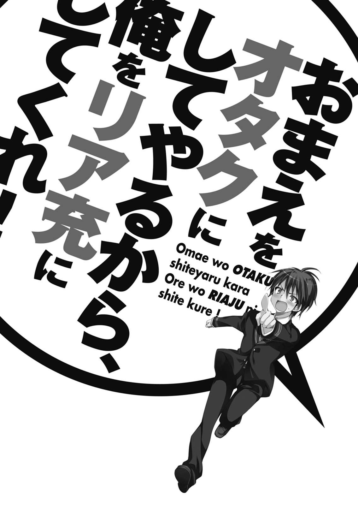
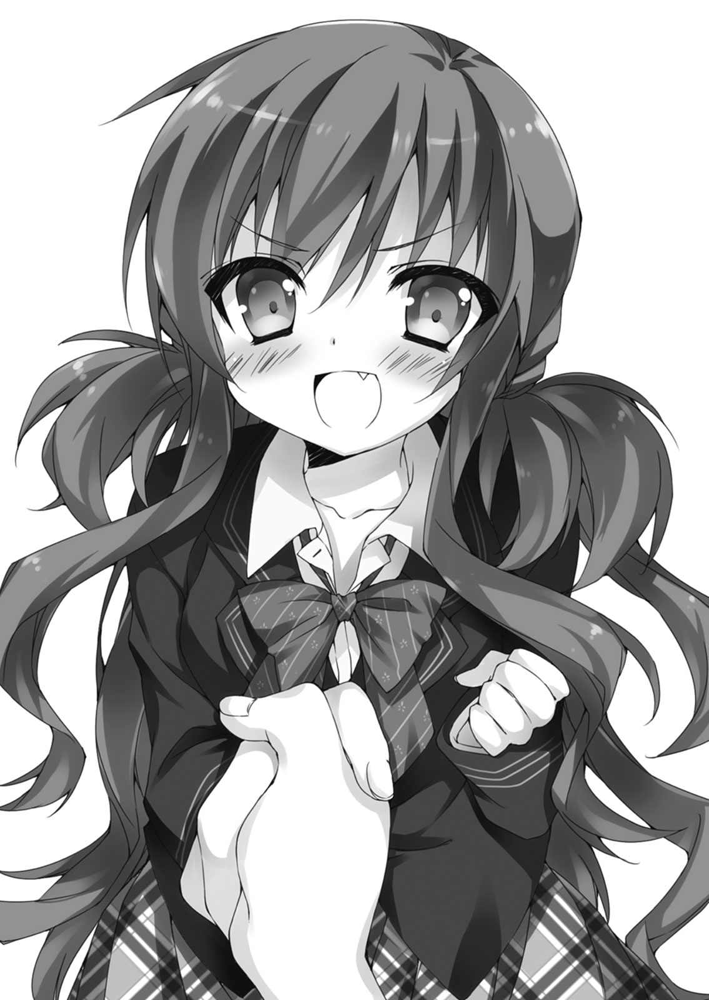

| おまえをオタクにしてやるから、俺をリア充にしてくれ！ | |
| I ofおまえをオタクにしてやるから、俺をリア充にしてくれ！ | |
| 村上 凛 & あなぽん | |
| 富士見書房 (2011) | |

おまえをオタクにしてやるから、
俺をリア充にしてくれ！
村上 凛

富士見ファンタジア文庫
本作品の全部または一部を無断で複製、転載、配信、送信したり、ホームページ上に転載することを禁止します。また、本作品の内容を無断で改変、改ざん等を行うことも禁止します。
本作品購入時にご承諾いただいた規約により、有償・無償にかかわらず本作品を第三者に譲渡することはできません。
本作品を示すサムネイルなどのイメージ画像は、再ダウンロード時に予告なく変更される場合があります。
本作品は縦書きでレイアウトされています。
また、ご覧になるリーディングシステムにより、表示の差が認められることがあります。
口絵・本文イラスト あなぽん

１
「ティナ、大好きなお兄ちゃんのためにこの歌を歌うから聞いて欲しいのっ！」
テレビ画面の中では、二次元の美少女が頬を赤らめて可愛らしい台詞を言う。台詞の後すぐに、軽快なリズムの歌が始まった。
「ねぇ、これいつ面白くなんの？」
退屈そうに自分の髪を指に巻きつけながら、俺の隣の美少女は目の端で流れる映像を見ていた。
「お前が見ようって言ったんだから、髪いじってねえで真面目に見ろよ！ ちゃんと見てないと大事なシーン見落とすぞ！」
テレビ画面には先ほどから、アニメの映像が流れ続けてまだ約十五分。
「こんな、子供が歌って踊ってるだけのアニメに大事なシーンなんてあるわけぇ？」
言いながら、だるそうに髪をいじる美少女......と言えば聞こえはいい。毛量のありすぎる人工的なまつげに、濃すぎるメイク、明るい巻き髪に派手なネイル。
ギャルという人種の女が、そこにいた。その外見の全てが、今テレビ画面に流れている幼女向け変身アイドルアニメ『ラブリーアイドルてぃんくる☆てぃな』にそぐわないものだった。
「はぁ～......鈴木君が今一番ハマってるアニメだって言うからわざわざＴＳＵＴＡＹＡで借りてきたけど、鈴木君、こんなアニメのどこが面白いんだろ？」
「そういうことは、せめてちゃんと一話全部見てから言えよ」
ここは放課後の視聴覚室。
ＤＶＤが見られるのはここしかないからと、俺、柏田直輝と、目の前のギャル......恋ヶ崎桃は、学校の許可も取らずにレンタルしたアニメのＤＶＤを見ていた。
「十五分見ただけで恐ろしくつまんないんですけど。あんたがこのアニメの魅力説明してよ。三十秒以内にまとめて簡潔に。オタクなんだからそんくらいできるでしょ？」
「いや、俺別にロリコンじゃねえからこのアニメに魅力感じないし......。お前が一人で見るの嫌だって言って、無理矢理俺を付き合わせてるんだろ！」
「えっ、ちょっ、それって鈴木君がロリコンみたいじゃん！ マジやめてくんないそういう言い方！」
「みたい、じゃなくて、あいつはロリコ......ぐえっ」
ネクタイをおもいっきり引っ張られて首が絞まる。
「はぁ!? あんた今なんか言った!?」
ふと気がつくと、扉の外を生徒が通りかかっているのが窓から見えた。しかも、中の俺たちの様子を見ているようだ。
「げぇ！ 人通りあんのかよここ！ もしかしてアニメも外から見えるのか......？ 放課後にアニメ見てるなんて気づかれたら、完全にオタクだってバレるじゃん！」
俺がギャーギャー喚いていると、恋ヶ崎は突然停止ボタンを押してＤＶＤを止めた。
「あーマジつまんないし。もうやめやめ」
ＤＶＤを取り出してケースにしまい込む。
助かった......！ これで俺がオタクだとバレずに済んだ......。
ここでバレたりしたら、高校入学以降苦労してオタクを隠してきたのが全て水の泡になってしまう。
恋ヶ崎も、あまりの俺の動揺っぷりを見て諦めてくれたのだろうか。案外いいところあるじゃないか。
一安心していたのも束の間。
「おい、恋ヶ崎......なんだソレ......」
恋ヶ崎は自身の鞄から更にもう一つＤＶＤを取り出した。
「ＴＳＵＴＡＹＡでこれも借りたの。これ、あんたと鈴木君がハマってるアニメなんでしょ？ あんたが鈴木君に聞いてくれたんじゃん。たまには役に立つわよね。こっちは面白いといいけどー」
ＤＶＤの表面に明記されたアニメのタイトルを見て、俺は愕然とした。
「やめろ！ そのアニメだけはやめてくれ！ つーかせめて家で見ろし！」
「家で見てて家族が突然部屋に入ってきたらやばいじゃん、無理」
「学校で見る方がよっぽどやばいっつーの！」
俺が必死に引き止めるのも無駄に終わり、テレビ画面にアニメ映像が流れ始める。
冒頭から突然、画面いっぱいに映し出される美少女の全裸。
「な、に、これ......」
恋ヶ崎は画面を見て一瞬で固まってしまった。
このアニメは、地上波の限界に挑戦したと言われている、深夜萌えエロアニメだった。しかも、ＤＶＤ加筆修正でテレビ放映時より更にドエロになっている。
先ほどの幼女向けアニメの方がいくらかマシだ。
「何これ！ バカじゃないの!? オタクきっも！ いやキモいじゃなくて気持ち悪い！ こんなアニメが好きとか......マジオタクって信じらんないんだけどっ！」
恋ヶ崎は顔を真っ赤にして、俺に向かって自身の手元にあったリモコンやら化粧ポーチやら紙パックのジュースやらを投げつけてきた。
「いてっ！ てめえ何すんだ！ っつーか映像止めろ映像！」
俺は恋ヶ崎の攻撃を受けながらも、必死でリモコンの停止ボタンを押してアニメの映像を止めた。
「もー最悪！ こんなアニメ、借りるんじゃなかった......」
「どっちが最悪なんだよ、このヒステリー女！ やっぱこんだけアニメに拒否反応示してるお前が、オタクになるなんて無理だろ！」
俺は突然の暴力に頭にきて、恋ヶ崎に怒りをぶつけた。
「何よそれ、何で無理とか言うわけ......？」
俺の言葉に、突然恋ヶ崎の表情が歪む。
「もっと協力的になってよ！ あんたがリア充になるために協力してあげるから、あんたもあたしがオタクになって鈴木君と仲良くなるために協力してくれる、って、言ったじゃん！ 約束したじゃん！ 忘れたとは言わせないわよっ!?」
そうだ、確かに、そんな協定を俺たちは結んでしまった。
あぁ、なんだってこんなことになってしまったんだろう......。
俺はただ、平和な学園生活を謳歌したかっただけなのに。
そしてあわよくば、清楚で可愛い彼女を作ってリア充したかったのに。
それがこんな、横暴なスイーツ（笑）ギャルに振り回されてひどい目に遭う高校生活なんて......誰が想像できただろうか。
全ては、この女と出会ってから、俺の高校生活が歪んでしまったのだ......。
２
「はぁ？ 好きなわけないじゃん、マジふざけないでよー」
忘れもしない中学三年の夏。とある日の放課後。
それは、聞きなれた可愛らしい声だった。
「そっか、良かったー！ 及川があんなオタクのこと好きなのかと一瞬ガチで心配しちゃったよ～」
「ちょ、マジやめてくんない？」
「だってよく柏田に話しかけてあげてるじゃん」
「いやそれは、なんか面白いからつい声かけたくなっちゃうだけでー」
「あ、単にからかってただけなの？」
「そうに決まってんじゃん！」
会話と共に聞こえてくる、楽しそうな女子数人の笑い声。
俺は自分の教室に忘れ物をして取りに戻ったところだった。だが、中から聞こえてくる話し声に、ただただ立ち尽くしてしまっていた。
今教室から声が聞こえる及川絆という女子生徒に、俺はついこの瞬間まで淡い恋心を抱いていた。
今教室の中から聞こえてくる彼女の声は、いつもの優しい彼女の声と果たして本当に同じものなのかと耳を疑ってしまう。
彼女は本当に優しかった。どうしてこんなに可愛い子が俺みたいな地味なオタクに話しかけてくれるのだろうかと、いつも不思議に思っていた。
そうしているうちに、いつの間にか、彼女のことが好きになっていた。
だけど。
『好きなわけないじゃん』
『面白いからからかってただけ』
今聞こえたその言葉こそが、彼女の本心そのものだったのだ。
彼女の台詞がいつまでも頭の中に響いていた。
「ていうかさー、あいつらオタクマジキモすぎじゃない？」
「ね、なんかやたらアツく語り合っててうるさいしうざいし、キモいもん堂々と教室で広げてるしー」
及川以外の女子生徒の声が更に続いた。あいつら、というのはもしかしなくても俺たちオタクのことなのだろう。
確かに俺は、友人たちとオタクな会話を教室で繰り広げていた。周りに聞かれてるなんて意識していなかったし、そんなにキモいだのうざいだの思われていただなんて想像もしていなかった。
今初めて、俺は自分たちオタクが周囲からどんな目で見られているかということに気づいた。
ショックのあまりその場から動けなくなる。
好きな子には否定され、他の女子にも『オタクキモい』と悪口を叩かれたのを聞いてしまった、人生最悪の日。
その後の俺の中学校生活は灰色だった。
なるべくキモいと思われないように、周りの目を気にして、目立たないようにということだけを考えて、残りの学園生活を送った。学校で友人のオタクたちがオタクトークを繰り広げていても、人目を気にしてもう会話に入ることをやめた。
想い人だった及川絆がその後も話しかけてくれることはあったが、あんな本音を聞いてしまった以上、話しかけられても、もううまく返答ができなかった。
俺の貴重な中学生時代は、そんな最低な思い出で幕を閉じた。
３
騒がしい目覚まし時計の音に目を覚ます。
朝が弱く、普段は一度の目覚まし時計の音なんかじゃ絶対に起きられない俺だが、今日ばかりは特別だ。清々しい気分でスッキリと目覚めることができた。
今日は、高校の入学式だ。
今日というこの日をどれだけ待ち侘びていたことだろう。
俺、柏田直輝は、今日の日を境に生まれ変わることを固く決意していた。
ずばり、今日から俺は、『隠れオタク』になるのだ。
もう二度と教室でオタクトークを繰り広げたり、漫画やギャルゲーや同人誌を広げたりはしないと強く心に誓っていた。
オタクキモいと言われていた中学時代。事実を知った時、本当にショックだった。女性不信になりかけた。高校は男子校へ通おうかとまで悩んだ時期もあった。だが、やっぱりそれは嫌だった。俺はオタクだけど、三次元の女性にだって勿論興味があるし、恋がしたいと思った。
だからこそ俺は過去を清算し、高校からはオタクであるということを隠し通して高校生活を送ることを心に決めた。
そのためにわざわざ、俺のことを知る人物が誰一人として入学を予定していない高校を受験したのだ。
お洒落に気を遣ってオタクだとバレない外見になり、最終的には彼女を作って『リア充』になること──それを最終目標とし、俺は高校入学へ向けて準備をしてきた。
眼鏡をやめてコンタクトにしたし、入学式前の春休みにはいつもの十分千円の床屋ではなくこじゃれた美容院でカットしてもらった。
携帯の待ち受けも好きなゲームキャラからお洒落な風景写真に替えたし、それまでつけていたアニメショップで購入した携帯ストラップも、全て外した。
俺の覚悟は本物だった。
真新しい制服に身を包み、俺は大きく深呼吸をした。
今日から俺は、リア充人生をスタートさせるんだ。
俺の通う藤見高校がある駅にたどり着き、電車を降りた。
中学までは地元の学校へ通っていたため、電車通学はこれが初めてだ。改札を出る。
今俺は、これから始まる学園生活に淡い期待を抱いていた。高校にはどんな女の子がいるのだろう。
俺の理想のタイプは、清楚で可愛らしく心優しい女の子だ。今どきの女子高生は茶髪やらパーマやらが多いと聞くが、女の子がなぜ茶髪にするのか、パーマをかけるのかが俺は分からない。俺は彼女にするなら、絶対に黒髪ストレートの清楚な女の子がいいと決めていた。日本女性を一番美しく見せる髪型こそ、黒髪ストレートだと俺は信じて疑わない。
駅を出ると、俺の通う高校の制服の女子生徒が目の前を歩いていた。なんとその女子生徒は、今俺が思い描いていた通りの、綺麗なストレートの黒髪だった。なんて素晴らしいタイミング。俺はつい目で彼女を追ってしまう。
背中まである彼女の長い黒髪は、春風になびいていた。遠目でも分かるほどスタイルは細身で、足はスラリと伸びている。姿勢が良く歩き方まで美しい。後ろ姿だけだが、どこまでも俺の理想だった。ああ、あの美しい後ろ姿の彼女の顔を拝見したい。振り向いてくれるタイミングを窺うが、彼女が振り返るような出来事がなかなか起こらない。
そこへ、後ろから何やら走ってくる足音が聞こえてきた。ランドセルの少女が俺を抜いて駆けていった。同じ駅に小学校もあるのだろうか。おそらく小学校一、二年生くらいの小さな少女だ。
少女は俺を抜かしたと思ったら、更に走り続けて俺の前を歩いていた女子生徒をも抜かした。
随分頑張るなあと感心していたが、女子生徒を抜かしたあたりのところで派手に転んでしまった。
うわあ、あれは痛いぞ、泣くかな、なんて心配していたら、俺の目の前を歩いていた女子生徒が慌てて少女の元へ走っていった。しゃがみ込んで少女を起こしてやる。
五メートル程先で起きている出来事なので話し声は聞こえないが、女子生徒が少女に何か声をかけているようだ。
俺は歩いているのでどんどんその二人の元へ近づいていた。どうしても気になって目をやると、女子生徒が少女の服についた砂などを払ってあげていた。
「もう大丈夫？」
話し声が聞こえた。位置的に横顔しか見えないのだが、女子生徒は優しげな笑みを浮かべて少女に声をかけていた。
「泣いてないね、偉い偉い」
彼女は少女の頭を撫でてあげていた。少女が「うん！」と元気に返事をする。ああ、なんということだ。彼女は声まで美しかった。
あまりに見ていたため俺の視線に気づいたのか、彼女が一瞬だけ、こちらを振り向いた。
そこで初めて、彼女の顔をはっきりと見ることができた。
俺は驚いた。
驚くほど白い肌。はっきりとした目鼻立ち。
一瞬見ただけで驚いて見とれてしまうほどの美人だった。
彼女はすぐに少女の方へ向き直った。俺も歩く足を止めず、女子生徒と少女の横を通り過ぎた。
俺の鼓動はどんどん激しくなっていた。
天使だ。
俺は天使を見た。
小さな子供を躊躇なく助けてあげる優しさと、見たものを一瞬で見とれさせてしまう程の美貌。その二つを持ち合わせている今の女子生徒は、天使そのものだ。
あんな女子高生、この世に存在していいのだろうか。
あんな天使と学校が同じであるという事実に俺はとても感謝した。と同時に、更に欲が生まれる。彼女の名前が知りたい。彼女に近づきたい。同学年かどうかすら分からないが、できるなら、同じクラスになりたい。
期待と不安で思いを膨らませながら、体育館での入学式を終えた。
発表された自分の教室へと移動する。教室で席に着く。一番左の窓側、後ろから二番目の席が、俺の席だった。
席に着いてすぐ、俺は教室を見渡して今朝の女子生徒の姿を捜す。
だが後ろから二番目の席に座っている俺には大半の生徒の後ろ姿しか見ることができない。黒髪ストレートの女子生徒は何人かいるので、後ろ姿だけで特定することなど不可能だ。
そもそも彼女が新入生かどうかも知らないので、同じクラスになることなんて奇跡に近いのだろうとは分かっているのだが。
担任の提案で、一人ずつ前に出て自己紹介を行っている最中の出来事だった。
奇跡が起きた。
一番前のど真ん中、教卓の前の席に座っている女子生徒が立ち上がって教卓の前へ行く。
その顔は......今朝登校中に見かけた天使だったのだ。
俺は感動と嬉しさのあまり手が震えてきた。
彼女は、黒髪をなびかせて颯爽と教卓の前に現れた。
今朝は一瞬しか見ることができなかったが、改めて見る彼女は本当に美しかった。
白い肌に澄んだ大きな瞳。翳るほどの長い睫毛。黒く艶やかなストレートヘア。スラリとした綺麗な立ち姿。全てが凛としていて絵になっていた。
俺だけではない、恐らくクラス中の男子生徒が彼女の姿に見とれていたことと思う。
彼女の容姿、雰囲気、全てが俺のドストライクだった。俺はこのとき、まだ出会ったばかりなのにもかかわらず、強く彼女に心惹かれていた。
ところが。
「長谷川翠です、よろしく」
彼女は無愛想に短くそれだけ言うと、何の迷いもなくすぐに教卓から自分の席へと戻っていった。
いくら自己紹介の内容は自由であると担任から告げられたとはいえ、皆それぞれ最低限出身中学と住んでいる場所くらいは言ったものだ。そこにプラスアルファーで自分の趣味や入ろうと思っている部活などを付け加え、早くクラスに溶け込みたいという姿勢をアピールしていた。
ところが彼女は、一瞬も笑顔を見せることもなく、あまりにもあっさりと席へと戻っていき、あっと言う間の自己紹介を終えた。今朝子供に笑顔を向けていた優しい彼女とは、全くの別人のように思える程、冷たいオーラを放っていた。
聞いていたクラスメイトたちはただ唖然とし、拍手するのも忘れて静まり返ってしまった。
美人だけど、無愛想で変わり者。
入学一日目にして、クラスメイトからの彼女『長谷川翠』の印象はそんな風に固まってしまった。
しかし、俺の気持ちは揺るがなかった。
益々彼女に対して興味が湧いた。
人見知りなのか、上がり症なのか、元から無愛想なのか。
だけど、今朝登校中に見たあの顔が、彼女の本当の姿だと信じたい。
彼女と、話してみたい。
もう一度、彼女の笑顔が見てみたい。
入学して一日目にして好きな子ができてしまうなんて、俺の高校生活は前途洋々なのかもしれない。
その日から俺は、長谷川翠のことばかり目で追うようになった。
＊
入学式から一週間が過ぎた。
細心の注意を払っているため、俺がオタクだということはまだ誰にもバレていない。
俺はなんとか一人だけ、友人ができた。後ろの席の桐谷という男だ。気さくで話しやすく、休み時間などにすぐに話すようになった。勿論、俺と違ってオタクなどではない、ごく普通の男子だ。
その日、担任教師に言われて学級委員を決めるべく話し合いをしていた。だが立候補するものが誰も出ず、困り果てていた。
「決めないと終わらないんですよ～？」
担任が脅すが、依然誰一人として名乗り出ない。
クラス中がざわつく。きっと誰もが、『誰かやってくれないかなあ』なんて思っていた。勿論、俺もその一人だった。
そのとき、すっと手が伸びた。
俺は手を挙げた人物を見て驚いた。
長谷川翠だった。
彼女が学級委員に立候補したのだ。
「長谷川さん、学級委員やってくれるの？」
「はい」
勿論反対する者などおらず、すんなりと決まった。
話し合いが終わり、休み時間になる。
俺は少々疑問に思っていることがあったので、後ろの席の桐谷に向かって呟いた。
「謎だよな......長谷川って、あんまり目立ちたがりっぽいイメージないのに、なんで学級委員に立候補したりしたんだろ？」
「柏田、お前長谷川の話ばっかりしてっけど、何なん？ 好きなん？」
「ちょ、でけー声で言うな！」
俺は慌てて周りを見渡す。誰にも聞かれていないことを確認して安心する。
俺は未だに一度も長谷川翠と会話をしたことがない。いや、語弊があった。正確には、まだこのクラスの女子誰とも会話をしたことがない。高校で彼女を作るという俺の計画は早くも行き詰まっていた。
「やめとけよ、あいつ美人だけどなんか『下らない人間とは話もしたくねー』みたいな雰囲気出てね？ 絶対相手にしてもらえねーよ。休み時間だって誰とも話さないで本ばっか読んでっし」
確かに、桐谷の言うとおり、長谷川翠は何ともいえない近寄り難い雰囲気を全身から醸し出していた。いつも冷たい表情をしていて、まだクラスメイトと楽しそうに会話しているところを目撃したことがない。
休み時間はいつも自分の席で本を読んでいるか、黙々と学級委員の雑務をこなしているかのどちらかだった。自分からクラスメイトと距離をとっているようにすら見える。
だけど俺は、それが彼女の素顔だとは思わない。だって俺は、見てしまったのだから。彼女の優しさを。彼女の笑顔を。
今も彼女は、前の授業の黒板をひたすら黙って消していた。彼女を目で追っているうちに気づいたのだが、学級委員の仕事というのは基本的にほとんど雑用ばかりのようだ。
「長谷川ー」
その時、長谷川翠が担任教師に呼ばれた。彼女は黒板を消すのを中断して、教室から出て行った。
「......おし！」
俺は声に出して決意をし、席を立った。
「あ？ 柏田、どーした？」
桐谷の声を後ろで聞きながら、俺は黒板の前まで歩いて行った。そして、長谷川翠が消していた最中の黒板の残りを、全て消した。担任に呼ばれて出ていった彼女の代わりに。
俺が消し終えて自分の席へ戻ると、長谷川翠が戻ってきた。そして、全て消えて綺麗になっている黒板を見て、不思議そうにしていた。他の誰かがやってくれたのだと気づいたようで、周りをキョロキョロ見渡している。
俺の方も一瞬だけ、見た。......ような気がする。
「長谷川、気づいたかな、俺だって」
「いやいやいや!? 気づくわけねーだろ!?」
どんだけ妄想入ってんだよ、と桐谷に気持ち悪がられつつも、俺は心のどこかで『長谷川は俺がやったと気づいてくれる』と思っていた。何を根拠にしているのかは自分でも分からないが。
その後も俺は、地道に長谷川翠の学級委員の業務の手伝いを行った。
真正面から「俺も手伝うよ」なんて言えれば一番いいのだろうが、残念ながらそんなことができるリア充スキルを俺は持ち合わせていない。っていうか恥ずかしい。
俺はそれからも長谷川の学級委員の業務の手伝いを続けた。俺が手伝っている業務は主に、黒板を消すことと、後ろの黒板にその日の授業の時間割を書くことの二つだ。長谷川がいない間にこっそりと手伝えるような業務はその二つしかなかったのだ。
見ていないところでこっそりと、だがいつか長谷川が気づいてくれると信じて、俺は毎日長谷川の手伝いを続けた。
＊
入学式から二週間程度が過ぎた。
クラスではもうグループが固まり、俺は桐谷以外とも少しくらいは話すようになっていた。だがそれでも女子とは会話ゼロだし、男子とだって基本的には桐谷とばかり話していた。
長谷川は、未だに一人でいることが多いようだった。話しかけたいとは思うが、話しかける度胸なんて、勿論ない。陰で学級委員の仕事を手伝うのが精一杯だった。
ただでさえ話しかけにくい冷たいオーラを出しているのに、より一層近寄り難い事実が判明した。
長谷川は、完璧超人だった。まだテストが行われていないのではっきりとした成績は分からないが、授業中指された際の受け答えで、全ての科目の成績が相当良さそうであることが分かってきた。更に、体育の授業でも彼女の優れた身体能力が窺えた。体育の授業は男女別だが、教室で保健の授業を受けている最中に、窓際の席の俺は校庭で行われている女子の体育の授業を見ることができる。俺は保健の授業の度に授業そっちのけで窓の外に夢中になっていた。女子は毎回授業の最初に校庭を五周ほど走らされているのだが、長谷川は決まってトップか二番手の位置にいるのだ。
まさに才色兼備、文武両道ってやつなのである。ギャルゲーのヒロインなんかはそれが基本スペックであることがあるが、そんな人間が三次元に実在するなんて、とても信じられなかった。
だがそんな抜け目なく完璧なところが、一層彼女に隙をなくし、彼女を孤立させていった。
その日は、教師の都合により四限目が自習になった。俺は桐谷と話そうかと後ろを振り返ったが、奴は聞いてもいないのに「昨日実質二時間しか寝てねえんだよー」と誇らしげに寝てない自慢をした挙句、机に突っ伏して爆睡し始めた。
仕方なく俺は、昨日買ったばかりの小説を鞄から取り出して、栞が挟まっているページを開けた。
ページを開けてすぐ、栞がオタクっぽいものだったので、俺は慌てて小説を閉じた。いかん間違えた、これは俺が『通学中の電車の中でだけ』と限定して読んでいるライトノベルだった。俺の鞄の中には小説が二冊入っているのだが、いかんせん同じブックカバーに同じサイズなので間違えやすい。俺は好きなゲームのトレーディングカードをラノベの栞として使い、ミステリー小説の栞は書店でもらった普通のものを、というように使い分けているので、栞を見ればどっちがどっちだかすぐに分かる。
すぐに周りを見渡す。幸い、トレーディングカードは誰にも見られていないようだ。
隠れオタクを頑張っている俺にとって、教室でラノベを読むなんてとんでもない愚行である。今後は気をつけようと反省し、今度こそ鞄から昨日買ったばかりのミステリー小説の文庫を取り出して開いた。
しかし、いざ読もうと文字に目を落とすと、右側の席あたりから聞こえてくる女子の会話がうるさくて、全く集中できなかった。
「つーかさ、桃まじやばくね？ こないだミホがリーマンみたいな男と渋谷歩いてんの見たって」
「マジで!? 何、援交？ 遊んでるって話ガチなの？ 本人超否定してたけどー」
なんというか、いわゆる、ギャルという生き物の会話だった。俺は一生関わることのないであろう、人種の。
その会話は聞きたくなくても聞こえてきてしまい、俺は小説に目を落としつつも物語の内容が全く頭に入ってこず、困ってしまった。
「中学んとき五股かけてたってマジだと思う？ Ｃ組の同中の子が言ってたらしいけど」
「えー、さすがにそれはなくない？ 本人は否定してるし」
「でも桃って全然自分の恋バナしないよね、逆に怪しいと思うんだけど」
中学生で五股って......その話が本当だとしたら、どんだけビッチなんだよ。そんでもってサラリーマンと援助交際？ 今時の女子高生ってまじこえぇ。
「ねぇ、何の話してんの？」
「桃!?」
そこへ、新たな人物の声が加わった。噂をされているであろう当人......桃、という名前らしいその人物が会話に入ってきたようだ。まさかの展開である。というか、クラス内にいる人間の噂話をそんなでかい声でするなよ。度胸あるな、ギャルって奴らは。
「あー、桃ー、マジで彼氏いないの？」
「はぁ？ だから言ってんじゃん、いないって。なんで毎日聞くわけ？」
「マジでー？ 嘘つくなしー。本当は絶対いるっしょー!?」
さっきまで散々、その桃という人物が遊んでいるらしいという噂話をしまくっていたくせに、いざ本人を前にすると聞きにくいようだ。ギャルたちは『桃』という人物をからかうように、噂とは見当違いの質問を投げかけていた。
そこで、俺はどうしても気になってしまった。五股をかけて援助交際もしているという、『桃』という人物の顔が。
中学の頃思ったけど、大抵派手に遊んでいる女というのは、見た目は派手でもよく見ると顔はあまり可愛くないんだよな、なんて自分でもよく分からない上から目線の思考で、さり気なく顔を右側に向ける。
見て、驚いた。
ギャルが三人いて、一人だけとんでもなく美少女だった。二人が着席して一人が立って話をしていたのだが、その立っている一人だけが不自然なくらいに可愛いのだ。会話の様子を聞くとその美少女こそが、『桃』と呼ばれている人物だった。
染色された茶色の巻き髪でスカートは短く、学校指定のタイを外して赤いチェックのリボンを勝手につけている......正真正銘のギャルであることには間違いないのだが、雑誌のトップモデルを一回り小柄にしたような、ＡＫＢのセンターにいそうな、とにかくもう、半端じゃない可愛さだった。
二週間も同じクラスで過ごしていて、気づかなかった自分が不思議なくらいだ。
そういえば俺は長谷川以外の女子のことは顔すら見ていなかったということに、今になって気がついた。
あまりじろじろ見ていると気づかれると思い、慌てて正面に向き直る。暫く今見たばかりの超絶美少女ギャルの可愛さの余韻に浸っていたが、すぐにとある事実を思い出した。
そうだ、あの女はビッチなんだった。いくら可愛くたって、ビッチは嫌だ。何を隠そう俺は、ビッチ女が一番嫌いなんだ。
それに、チラッとしか見ていないが、百五十センチあるかないかくらいの背丈で相当小柄なようだったし、顔つきもどちらかと言えばロリ系だった。そして、ギャルだった。俺は、黒髪ストレートの清純系がタイプだったし、背も高めで落ち着いた大人っぽい美人が好みだった。つまり、それは長谷川翠そのものだ。先ほどのギャルとは真逆である。
やっぱり俺には長谷川しかいないと思い直し、俺はもう右側の席の会話を気にとめることなくミステリー小説の続きを読みだした。今度はもうすらすらと頭に入ってきた。
授業が終わり、チャイムの音で桐谷が起きた。俺は興味本位で先ほどのギャルのことを桐谷に聞いてみた。
「あぁ、恋ヶ崎？ 超可愛いよな、ヤリマンって噂だけど」
先ほど仕入れたのと全く同じ情報が桐谷の口から出た。
唯一新しい情報といえば、桃という人物の名字が『恋ヶ崎』だということ。
「何だお前、長谷川に相手にされないから恋ヶ崎に乗り換えんの？ あいつ、同世代の男には超冷たいからやめといた方がいいかもよ。しかもめっちゃモテるし」
「男に冷たい？ ビッ......ヤリマンなんじゃねーのかよ？」
「それが年上趣味だから、同世代の男には全然興味ないって噂なんだよ。その証拠に、クラスの男に話しかけられても反応すげえ冷たいし。女には愛想いいくせにさー」
「マジかよ......」
自分の興味がない人間には冷たいって、どんだけ自分勝手なんだよ。
俺は益々恋ヶ崎に対して苦手意識を持った。
帰りのホームルームが終わり、部活見学へ行くという桐谷と別れて帰宅しようとげた箱へ向かった。俺は高校では特に部活に入ることは考えていなかった。
先ほどまで読んでいたミステリー小説の続きが気になり、読みながら歩こうと鞄から取り出した。
そこへ、曲がり角から突然現れた女子生徒と思い切りぶつかってしまった。
女子生徒は尻餅をつき、持っていた紙袋が床に落ちる。紙袋はぶちまけられて、中に入っていた漫画やら雑誌やらが廊下に散乱してしまった。俺は鞄を背負っていたので平気だったが、手に持っていた小説を床に落とした。
「ご、ごめん」
俺は自分も不注意だったと思ったので謝った。
そして、目の前の女子生徒の姿を見て俺は唖然とした。
先ほど存在を認識した美少女ギャル、恋ヶ崎桃、だった。
おそらく彼女がつけているであろう甘い香水の匂いがプンプンした。
恋ヶ崎は俺の方を見て少しの間呆然としていた。何かに驚いているかのような様子だったが、何に対して驚いているのか全く分からない。何か言うかと思ったが、一言も言葉を発しないまま、自分がぶちまけた雑誌や漫画をブランドのロゴが入ったピンク色の紙袋に素早く入れる。俺がぼうっと見ている間に、荷物を持ち直して彼女はさっさと立ち去った。
「感じ悪っ」
彼女が立ち去った後に、思わず誰にも聞こえないくらい小さな声で呟いてしまった。
こっちが謝ってるのだから一言くらい何か口をきいてもいいだろうに。そういえば同世代の男には興味がないから冷たいって聞いたっけ。
俺は少々憤慨しつつも床に落ちた小説を拾い、鞄の中に突っ込んだ。もう文字を読む気にはなれず、ｉＰｏｄで音楽を聞きながら帰宅した。
気づいたのは、家に帰ってからだった。
部屋で寝転がって、鞄の中からミステリー小説を取り出し、続きを読もうと開いたら、とんでもない世界がそこに広がっていた。
『さっき出逢ったばっかだってゅうのに、アタシ智也の家まで来ちゃったんだ・・・。
照れつつも智也を見ると、「こっちおいでよ」って・・・えぇっ・・・ぅっそぉ！ まだ今日会ったばっかりだって言ぅのに、智也は、店で見せてきた笑顔とおんなじ笑顔でベッドの上に座ってる。。。だけど、行けるゎけなぃぢゃんっ！（照）』
「......」
思わず本を閉じた。
見渡す限りの横書きの文章。
空きまくった行間。
文章のところどころに記号や顔文字がちりばめられている。
「なんじゃこりゃああああ!?」
慌ててブックカバーを外してみると、ドピンクの装丁に大きな文字で『愛しい人へ』とその本のタイトルらしきものが書かれていた。ご丁寧に帯まで付いており、『現役女子高生作家が書く、切なすぎるラブ』と煽り文句が付いていた。
中身を見たのは初めてだが、これはケータイ小説と呼ばれる代物だった。俺が読んでいた小説と同じサイズで同じブックカバーだったため、中身を見るまで全く気がつかなかった。
俺は冷静に思い返す。俺の小説とこのケータイ小説が入れ替わったタイミングといえば、一つしか思い浮かばない。
恋ヶ崎桃とぶつかった時だ。恋ヶ崎がぶちまけた漫画や雑誌の中に、このケータイ小説も入っていたのだろう。
俺が小説を購入したのは高校の近くの本屋だ。ブックカバーもそのときにかけてもらった。そしてこのケータイ小説が包まれていたのも同じ本屋のブックカバーだ。あの本屋にはうちの高校の生徒がたくさん出入りしているので、恋ヶ崎があの本屋でケータイ小説を購入して同じブックカバーをつけてもらったとしても、何も不自然なことはない。
そして全く同じ外見をした本を、恋ヶ崎は自分が落としたものだと勘違いして紙袋に入れてしまったのだ。
「うわー、マジかよ～......」
俺は独り言を呟きながらケータイ小説をパラパラとめくった。
俺が先ほど読んだシーンは、主人公の女子高生が初めて出会ったホストに一目惚れして、まんまとお持ち帰りされたというシーンだった。次のページをめくると、あっさりと大人の関係になっていた。突っ込みどころ満載な上に嫌悪感しか抱けない展開。
「こんなん真面目に読んでる奴がいるのかよ......ハハハ......」
恋ヶ崎桃、まさか俺が読みながら馬鹿にしているとは思わないだろう、返すときは読んでないフリをしてやるか......そんなことを考えながらケータイ小説を閉じて、今度はラノベを読もうと再び鞄の中をあさった。取り出して、ラノベを開く。
次の瞬間、俺は目が点になった。
俺がラノベだと思って開いたそれは、ラノベじゃなかった。同じブックカバーがかかったミステリー小説だった。今日俺が教室で読み、先ほど廊下で落とし、恋ヶ崎のケータイ小説と入れ替わってしまったと思っていた、小説だった。
なぜこの小説が俺の鞄の中にある？
そこで、俺はとんでもない事実に気がついた。
「やべええええええええ!!」
今ここにこの小説があるということは、俺が廊下で落とし、恋ヶ崎が自分のケータイ小説と間違えて持ち帰ってしまったのは、ミステリー小説ではなく同じブックカバーがかかったラノベの方だったということだ。同じ外見をしていたので、俺は廊下でもミステリー小説とラノベを間違えて取り出してしまっていたのだ。
俺がケータイ小説を読んでいるのと同じように、恋ヶ崎にも俺のラノベを読まれているかもしれない。
やばい。これはまずい。
ラノベという時点でオタクがバレバレなのは間違いないが、更に昨日買ったあのラノベは、いわゆるラブコメというか、エロコメというか、主人公が突然できた四人の義理の姉にエロいアタックを受けまくるというハーレムモノ。
ラノベにおいてはハーレムエロコメなんて一ジャンルとして確立された珍しくもない代物だが、一般人が読んだら恐らくぶったまげるであろうその内容。
万が一恋ヶ崎が興味を示さず文章を読まなかったとしても、表紙や挿絵がエロエロなのだ。パラパラめくっただけでそれがオタク的で尚且ついかがわしいものだとバレる。
つまり、間違いなく俺がオタクであるということがバレてしまうのだ。
せっかく高校へ入学してから必死にオタクを隠していたのに、よりによってあんな、いかにも軽薄そうでオタクを嫌っていそうな女にバレてしまうなんて。
このまま放っておけば、あの女によって俺の秘密がバラされてしまうのも時間の問題だ。中学校生活の二の舞になってしまう。
「うおおおおおおおおお!!」
ぶつけどころのない憤りを部屋で一人叫んでいると、
「うるせえんじゃバカ直輝いいいいいいいいいい」
俺の部屋の扉が勢いよく開いて、ポニーテールにセーラー服の少女が怒鳴り散らしてきた。
「うわっ、あかり。帰ってたのか」
妹だった。
「今このゲームやってて超いいシーンなんだから、きったない声で邪魔すんなっつーの！」
妹が自慢げに掲げてきたものは、ＰＣゲームのようだった。やけに顎が長くてキラキラした目をした男二人の絵が描かれている。
「それってまさか......」
「Ｂ・Ｌ・ゲー♡」
その無邪気な笑顔は、汚れを知らない純粋な可愛い少女の笑顔そのものだった。
手に持っているブツさえなければ。
うちの中学一年生の妹は、腐女子だった。我が家は兄妹揃ってオタクなのだ。
「今度ギャーギャー騒いで邪魔したらマジぶっ殺すから！」
そう言って勢いよく扉が閉められた。待て、せめてそれが全年齢対象であることを確認させろ、中学生が十八禁ゲームやるなんて 絶対に許さないよ、と言いたかったがそんな隙はなかった。
その日の夜、俺はあまりの不安で眠れなかった。登校するとクラスメイトたちから軽蔑の眼差しを向けられ、既に恋ヶ崎が俺がオタクであることをクラス中に言い触らしていた後だった......という、恐ろしく現実的な妄想を何度もしてしまう。
俺の学園生活の平和を守るため、絶対そんな未来にしてはいけない。そして誰より長谷川にだけは、俺がオタクだということがバレてはいけないのだ。
明日本を返す際に、俺がオタクだということを誰にもバラさないよう恋ヶ崎に口止めしなければ。俺は強く心に誓った。
翌日、朝一で恋ヶ崎に声をかけようと思っていたが、机の中に一枚の紙切れが入っていた。
『昼休み、話がぁるので体育館裏へ来て下さぃ。恋ヶ崎』
バランスの悪いギャル文字でそう書かれていた。
すぐに本のことだと思ったが、話がある、という言葉がどうにもつっかかる。本を返すだけならわざわざ呼び出すことはないだろうし。
だが、話す機会を設けてくれたことは助かった。どちらにしろ俺が呼び出して二人きりで話さなければならないと思っていたのだから。
見るからに性格が悪そうなあの女に俺がオタクだということを秘密にしてくれるよう頼んだって、素直に聞き入れてもらえるかどうか分からない。最悪、金を払うことになってでも内密にしてもらうよう頼まなければ。俺はそこまで考えていた。
俺は怯えながらその日の午前中の授業を乗り切り、昼休みになると弁当も食べずに体育館裏へ向かった。
一階まで降り、校舎を出て、校庭を歩いて体育館裏までたどり着くと、既に恋ヶ崎が待っていた。体育館の壁に寄りかかり携帯をいじっている。近くで見るとより整った顔立ちであることには間違いないのだが、なんといっても化粧が濃い。女の化粧事情なんかには全く疎い俺ですら、彼女の化粧はとても濃いと分かる。携帯を持っていない方の手には俺のラノベを持っていた。
「......」
ところが恋ヶ崎は、呼び出しておいて何も口を開かない。それどころか、俺が来ていることに気づいているのに俺の方を見ようともしない。
何なんだよ、あんなラノベを読むオタクとは気持ち悪くて口も利きたくないって、そういうことか？ じゃあなぜ呼び出したりしたんだ？
「......あの、話って、この本のことだよね？」
沈黙に耐えきれなくなって俺の方から声をかける。
言いながら恋ヶ崎のケータイ小説を差し出すと、恋ヶ崎は俺の手からものすごい勢いで本をむしりとった。無言のまま。
これには腹が立った。失礼にも程があると思う。
「あ、あのさ、俺の本の内容、読んだのかな？」
だが気の弱い俺に文句を言うことなど出来るはずもなく、弱々しくそう聞くのが精一杯だった。
恋ヶ崎は返答してくれないどころか、相変わらず目も合わせてくれない。
「あの中身、もし読んだなら......他の人には言わないで欲し」
「これって何なの？」
恋ヶ崎が俺の言葉を遮って初めて口を開いた。質問を遮られたことにむっとしつつも恋ヶ崎が手に持っているものを見ると、それは一枚のカードだった。俺が読書の際、栞代わりに使っていたカードだ。ラブマイナスというＤＳのゲームのトレーディングカードである。俺が好きな『姉崎のの』というキャラクターのイラストが描かれている。
「え、え......？ 何、と言われても......」
俺は小パニックを起こした。やっと口を利いてくれたと思ったら、全くわけが分からない。なぜ恋ヶ崎がラブマイナスのトレーディングカードに興味を示しているのか。
「ゲームのカードだけど......」
「ゲームって、何の？」
「え、えっと、ラブマイナスっていう......」
「どういうゲーム？」
「えぇ？ れ、恋愛シミュレーションゲーム......」
たじたじになりながら、やっとの思いで質問に答える。本当は答えたくなどないのだが、恋ヶ崎の威圧的な質問の仕方に気の弱い俺は答えざるをえなかった。
「れんあいしみゅれーしょん......て？」
「う、えっと、女の子と仲良くなるような......」
「やっぱり......」
恋ヶ崎は、俺の言葉になぜかがっくりと肩を落としている。
「あの......なんでそんなこと聞くの？」
今度は俺の方から質問した。
「......Ｂ組の鈴木君って知ってる？」
が、質問で返されてしまった。
「鈴木......？ 知らないけど......」
「鈴木君がね、これと同じようなカード持ってたの！」
恋ヶ崎は突然元気になって、納得できない、というような様子で言った。
「鈴木君が生徒手帳を落として、拾ったときに見たんだけど、これに似たカードを生徒手帳に超大事そうに挟んでたの！ ......でもよく見ると似てるけど違う......なんか絵とかはすごい同じような感じで、デザインも似てるんだけど、微妙に違う。この絵は茶髪でたれ目で若干胸がでかい女の絵だけど、鈴木君が持ってたのは......短い黒髪でもっと胸が小さい女の絵だった」
大好きなノノさんをたれ目で若干胸がでかい女呼ばわりされたのは大変遺憾であったが、その話には気になる点があった。
「短い黒髪で胸が小さい......それって、ラブマイナスの凛香じゃないかな」
「リンカ？ じゃあ鈴木君はそのリンカとかいうゲームのキャラクターが好きなの？ ......ってことはオタクなわけ？」
「まぁ、大事そうに生徒手帳に挟んでたんなら多分そうだと思うけど......」
見ると、恋ヶ崎の顔は悲しそうに歪んでいた。
なんとなく分かってきた。その鈴木という男のことを恋ヶ崎は好きで、鈴木のことを聞きたくてわざわざ俺を呼び出し、だけどそこでオタクだったという事実を知り、ショックを受けている──と言ったところなのだろう。
「信じらんない、鈴木君がオタクなんて......」
納得できない様子でブツブツと呟いている恋ヶ崎。
「まぁ、本人に確かめてみるのが一番だと思うけど......」
わざわざ俺を呼び出して聞き出すくらいだったら、当の本人に聞けばいいのに。
恋ヶ崎は男遊びが激しいと噂されていた。だったら、好きな人と言えど男に声をかけるのはたやすいことなんじゃないだろうか。
「ねぇ、鈴木君に確かめてみてくんない？ 同じゲームが好きな者同士話しかけやすいでしょ？」
「......は？」
恋ヶ崎の自分勝手な提案に、俺は耳を疑う。どうして俺が、クラスが同じというだけで仲良くもないギャルなんかのために、知らない相手に声をかけなければいけないというのか。ついでに言うと人見知りの俺にとって、見知らぬ人間に声をかけるなんてことは、非常に難易度が高い。
「じ、自分で、声かければいいじゃん......」
「それができないから頼んでるんでしょ！」
恋ヶ崎は若干イライラしたような焦っているような様子で言ってくる。なぜ逆ギレされなきゃいけないんだ。
「じゃあ俺だってできない......。てか、昼飯早く食べたいしもう戻っていい？」
本来なら初めて言葉を交わす人間にこんな強気なことは言えない小心者の俺だが、向こうの態度が酷すぎて相当頭に来ていた。
教室へ戻ろうと恋ヶ崎に背を向けた。そのとき。
「......『お姉ちゃん症候群』......」
「えっ......」
恋ヶ崎の呟きが後ろから聞こえた。その言葉に、俺の足は止まる。
それは未だ手元に返してもらっていない、姉ハーレムな俺のラノベのタイトルだった。
「義理の姉と同居？ 義理の姉とお風呂？ 義理の姉とキ、キキキ......」
キス、と言われる前に俺が声を上げた。
「ちょっと、勝手に読んだのかよ!? 人の本を......！」
......まあ、俺も恋ヶ崎のスイーツ（笑）全開ケータイ小説を勝手に読んだのだから、人のこと言えないのだが。
「信っじらんない！ オタクって皆あんな妄想してるわけ!? マジキモいありえないんだけど！」

恋ヶ崎は顔を真っ赤にして、なぜか怒っているようだった。
しかしそれは、俺が想定していた反応とは微妙にずれていた。
勿論あのラノベに対して嫌悪感全開であろうと想像していたのでその点は合っているのだが、嫌悪の仕方が俺の想像と違った。
見下し、バカにし、気持ち悪がり、呆れる。
それらが俺の想像していた『スイーツ（笑）ビッチギャルの恋ヶ崎桃が、あの本の中身を見た反応』だった。
台詞で言うなれば、
『童貞の考えることってすごいね～、早く実在する彼女作った方がいいよ～？（失笑）』
......こんな感じ。しかし目の前の彼女は。
「最悪！ キショすぎっ！ 不潔！ 変態！ 人畜無害そうな顔してっ！」
憤慨した様子で俺に向かってラノベを投げつけてきた。
「ちょ、何すんだよ！」
慌てて飛んできた本を受け止めながら俺は不思議に思う。
顔が赤いのは、怒っているというのもあるが......なんだか、照れているように見える。
この反応はまるで、純情な女の子がエッチなものを見せられたときのような......。
「さっき、あの本の中身を内緒にしてほしいとか言ってたっけ？ 鈴木君がオタクかどうか確かめてくれないんだったら、あんたが読んでた本の内容......クラス中の女子にバラすから！」
「なっ......!?」
突然の衝撃的な言葉に、俺は絶句した。
これは、立派な脅しである。
クラス中の女子、ということは長谷川の耳にも入るのだろうか。
「そ、そんな......」
俺は震えが止まらない。
「あたし本気だから」
恋ヶ崎はそっぽを向いてぶっきらぼうに言った。意志は固いようだった。
「や、やめてくれ......」
「じゃあ声かけてくれる？」
こんなところでバラされたら中学生活の二の舞になってしまう。今日まで苦労してオタクを隠し通してきたというのに、全て水の泡だ。
「くっ............わ、分かった......」
悔しさを押し殺して、俺はそう返事をした。最早要求を受け入れるしか俺に選択肢は与えられていなかった。
「マジで!? あんた話分かるじゃん！」
話分かるじゃん、なんて脅しておいてよく言ったもんだ。あんな脅しをかけられたら誰だって、受け入れざるを得ない。
「その代わり、声かけたら、絶対に隠し通してくれよ......」
最後に念を押すのが俺に出来る精一杯だった。
「勿論！」
恋ヶ崎は満足げな笑みを浮かべてそう答えた。
「じゃ、よろしくね、えーっと......名前なんだっけ？」
「柏田だよ！ 同じクラスなのに名前も覚えてねーんか！」
名前すら覚えていない相手を脅すなんて、極悪非道もいいところだ。
入学早々、こんな性格の悪いスイーツ（笑）ギャルにオタクがバレて、しかもクラス中の女子にオタクをバラすと脅されるなんて......。どうしてこんな絵に描いたようについてないんだろう、俺って。
４
その日の放課後、俺は早速Ｂ組へ向かった。
俺は嫌なことや面倒ごとはすぐに終わらせてしまいたいタイプだ。
Ｂ組の前まで行き、後ろ側の出入り口からクラスの中を覗き込む。
しかし、恋ヶ崎に鈴木という人物の情報を何も聞かずにここまで来てしまったため、どれが鈴木なんだか全く分からない。適当な人間に聞くしかない。
誰かに声をかけようと教室を覗き込むと、教室を出ようとしていた男子生徒に、
「誰か捜してんの？」
と声をかけられた。見て驚く。茶髪で俺より背が高く、鞄と一緒にギターらしき荷物を背負ったえらい男前がそこに立っていた。俺に対し人懐っこい笑顔を向けている。イケメンな上に優しいって、なんて出来た奴なんだろう。
「いや、大丈夫！」
焦った俺は咄嗟にそう答えてしまった。あまりの自分との差に、逃げ腰になってしまったのだと思う。せっかく声をかけてくれたのに何をやっているんだろうと、自己嫌悪に陥る。
イケメンが教室から出ると、後ろから派手な女子生徒が後を追いかけてきて、
「そうちゃ～んどこ行くのぉ？」
「え？ 音楽室」
なんて会話を交わしていた。
イケメンで、気が利いて、ギターが弾けて、女にモテモテ......ずばり、リア充レベルマックス。あんな男が存在していいのだろうか。
俺は軽く凹みながら、自分の使命を思い出して教室の中に再度目をやる。すると、出入り口に一番近い席に俺並に地味な男子生徒が座っていた。聞くならこいつしかいない。
「ごめん、あのさ、このクラスに鈴木君っている？」
「鈴木なら今教室出ていったと思うけど」
今出ていった......それって、まさか。
「ギター背負ってて茶髪の......」
「そうだよ」
それは信じがたい事実だった。先ほどのイケメンリア充が、凛香のカードを生徒手帳に挟んでいるオタク......？ そんなこと、あっていいのだろうか。
目の前にいる俺と似た雰囲気を持つこの地味な男子生徒が鈴木であると言われた方が、よっぽど納得がいく。
しかし、そういえば鈴木は恋ヶ崎が惚れている相手なんだった。その点で考えれば、イケメンであっても不思議はない。
男子生徒に礼を言って俺はＢ組の教室を後にした。
思いを巡らせながらとりあえず音楽室に向かった。先ほど鈴木はこれから音楽室へ行くと言っていたのを思い出したからだ。音楽室へ行ったところで、音楽室では鈴木が軽音楽部の部活動中かもしれないので、声をかけるのは難しいかもしれない。万が一部活中じゃなかったとしても、先ほどの派手な女子が一緒にいたりしたら絶対声なんてかけられない。そうしたらもう今日は話しかけるのを諦めるしかない。
音楽室の前にたどり着いたところで俺の思考はぶっとんだ。
中で弾いているらしきギターの音が漏れているのだが、その音楽が非常に聞き覚えのある曲でぶったまげたのだ。
「『けいおん部!!』のＥＤじゃん......」
俺はついそう口に出して呟いていた。
音漏れして聞こえてきたのは、去年まで放映されていた軽音楽部を題材にした人気アニメのエンディングテーマ曲だった。
「ねぇねぇ、このギター超うまくない？」
気づくと、たまたま音楽室の前を通りかかったらしき女子生徒二人がギターに耳を傾けていた。
いや、確かにギターはすごく上手いと思う。しかし、それ以前に突っ込むべきところがあるのではないだろうか。これ、アニソンじゃん。
「これってＢ組の鈴木君が弾いてるらしいよ」
「マジでー？ あのイケメンの？」
女子たちはキャッキャと騒ぎながら去っていった。どうやら、彼女たちはこれがアニソンであることに気づいていないようだ。それもそうか、知らない曲だったらアニソンかどうかなんて分かりはしない。
そして、これを弾いているのはやはりあの鈴木......。全てのつじつまが合った。鈴木はやはりオタクで、『ラブマイナス』と『けいおん部!!』が好きなのだ。......やべえ、気が合いそうだ。俺も『けいおん部!!』にはハマって、毎週欠かさず見ていた。
周囲を見渡して今度は誰もいないことを確認すると、俺は意を決して音楽室の扉を開けた。自分でもすごい勇気だったと思う。鈴木の他に生徒がいたらどうしよう。勝手に入ってくるなと怒られたらどうしよう。そんな風にも勿論思ったが、純粋に、鈴木と話してみたい、なんて思ってしまったのだ。
音楽室へ入ると、幸いにも鈴木一人しかいなかった。鈴木はギターをアンプに繋いで結構な音量で演奏していたようだったが、突然進入してきた俺に驚いて演奏をやめた。
俺のことを凝視している。
「あ、ご、ごめん突然！」
今更後悔する気持ちがわき起こってきた。今一度改めて鈴木を見ると、本当にイケメンで、イマドキで......とてもオタクだなんて思えなかった。
突然進入しておいて黙っているわけにもいかないので、俺は焦りながら、
「いやその、廊下歩いてたら『けいおん部!!』のＥＤが聞こえて、思わず嬉しくなって扉開けちゃって......俺『けいおん部!!』もこの曲も好きだったから......」
と早口で言った。
鈴木は、アンプから線を抜いて、ギターを肩から外して椅子の上に置き、こちらへ向かってくる。顔つきは、俺のことを警戒しているように見える。
まずい、何勝手に入ってきてんだよ、だとか、俺の演奏よくも邪魔したな、だとか言われるかもしれない。というか、今にも言い出しそうな雰囲気だ。よく考えたら今の俺の行動は常識外れにも程がある。
「......『けいおん部!!』、好きなの？」
しかし、鈴木の口から出たその質問に俺は拍子抜けした。
「え？ う、うん」
俺が答えた次の瞬間。
俺の右手が鈴木の右手によって力強く握られた。言い方を換えれば、握手をされた。
「マジかよ～！ よく声かけてくれたな～！」
鈴木の顔は先ほどまでの警戒している顔からくしゃっとした笑顔に変わった。笑顔はすごく無邪気だった。
「放課後毎日趣味でアニソン弾き続けてたんだけど、誰かオタクが反応してくんないかな～ってちょっと期待しててさ～」
「え、そうだったの？ 今って軽音楽部の部活中とかじゃ......」
「まー一応そうだけど、俺以外の部員ほとんど部活来ねえから」
「そうなんだ......あのさ、毎日アニソン弾いてた、って、他にも何か弾けんの？」
「あぁ、『けいおん部!!』の曲は一通り弾けるし、他にも有名なアニソンとかボカロの曲とかも弾けるよ。中学んとき『けいおん部!!』にハマってギター始めて、アニソンばっか練習してるから。まぁあんまうまくねえけど～」
「そうなのか!? す、すげ～！」
「ニコニコ動画で『ギターでアニソン弾いてみた』で動画投稿したりもしてんだよ」
「えぇ！ マジで!? 何て名前で投稿してんの？」
俺は恋ヶ崎の脅しで鈴木に話しかけているということもすっかり忘れ、夢中で鈴木と話していた。何せ俺は、この高校に入学してからというものずっとオタクを隠していたので、必然的にオタク的な会話など一切できないでいた。自分で決意したこととは言え、自分が大好きなものの会話が出来ないということは非常に寂しい。久々にそういった会話ができてすごく楽しかった。それに、この高校に入学して初めてできたオタク友達だったので、嬉しかった。
その後鈴木に俺がアニソンをリクエストして弾いてもらったり、オタクトークに花を咲かせたり、携帯ゲーム機でラブマイナスや怪物ハンターなどのゲームを通信して遊んでいるうちにあっという間に時間が過ぎ、学校が閉まる時間になってしまった。
「やべ～嬉しいわ、俺ネット以外でオタク友達できたの初めて」
鈴木は心底嬉しそうに、そんな言葉を漏らした。
「え、そうなん？」
「うん、クラスにもさ、いるんだよオタク。漫画とかラノベ読んでたりそういう会話してたりするから、話しかけてみんだけど......何読んでんの？ って聞いても、何でもない！ って隠されたり、すぐ逃げられるし......。ひどくねー？ ハブだよハブ」
鈴木は悲しそうにため息をついた。だが、鈴木には申し訳ないが、俺はそのクラスメイトのオタクたちの気持ちも分からんでもない。鈴木のこのイケメンな外見と全身から発せられているリア充オーラからは、どう考えてもオタクには思えない。恐らく、からかわれるとでも思ってびびって逃げてしまったのだろう。
それから俺たちは駅まで一緒に帰り、メアドと携帯番号を交換して別れた。俺は初めてできたオタク友達に喜びつつも、恋ヶ崎に報告することを思って複雑な気分で帰宅した。
翌日、今度は俺の方から恋ヶ崎の机の中にメモ紙を入れた。
『放課後、報告があるので教室を出た階段の前に来てくれ。 柏田』
一日を終えて放課後になり、自分が指定した階段の前へ行く。恋ヶ崎は既に来ており、仁王立ちに腕組みをして俺を待ち受けていた。
「鈴木君に聞いてくれたの？ ど、どうだった？」
恋ヶ崎は俺が待ち合わせ場所に到着するとすぐに、気になって仕方ないという様子で尋ねてくる。
「あぁ、鈴木はオタクだったよ。それも、かなりのガチオタ」
俺の言葉に恋ヶ崎は、
「マジで......やっぱり......」
とあからさまにがっかりした様子を見せた。
まあ、無理はないだろう。オタクであるということが女子にとって大きなマイナスポイントであるということは、よく分かっている。だからこそ俺もオタクを隠しているわけだし。
特に恋ヶ崎のようなオタクに偏見を持ちまくっているスイーツ（笑）ギャルなんかは、いくらイケメンでも、オタクであることが分かれば気持ちは冷めてしまうのだろうと思う。
「あれ？ カッシー？」
そこになんとも言えないジャストタイミングで、鈴木が通りかかった。鞄を背負っているので帰宅途中だったのだろう。ちなみにカッシーというのは、昨日鈴木がつけた俺のあだ名である。
「ちょうどよかったー！ 捜してたんだよ、教室にはもういないし。帰りに秋葉行こうと思うんだけど、行かねえ？」
「え、秋葉!? 行く行く！」
ちょうど俺も最近秋葉に行きたいと思っていたところだったので、二つ返事でオーケーしてしまった。しかし、言ってから慌てて周囲を見渡す。こんなオタク丸出しの発言を、学校内の不特定多数が通る場所でしてしまうなんて、高校ではオタクを隠してるっていうのに、俺としたことが。周囲には俺たち以外誰も人がいなかったため、ほっと胸をなでおろした。そしてすぐに存在を思い出し、恋ヶ崎の方に目をやる。
彼女は、分かりやすいほどに頬を真っ赤にして、一瞬の瞬きもせず鈴木のことを見つめていた。完全に見とれているようだ。男慣れしているくせに、片思いの相手には純情な乙女みたいな表情をするもんだなあ。
「マジで、やったー！ 俺オタク友達と秋葉行くの夢だったんだよねー！」
無邪気な笑顔で喜びを露にする鈴木。
「つーか今日さー、凛香のフィギュアの発売日なんだよー！ 予約してるから急ぐ必要ないんだけどやっぱ一日も早く欲しいじゃん!? あ、そういえばカッシーが好きなノノさんはまだフィギュア出てないよねー？ 発売日いつだっけ？ 買うの？」
ノンストップでオタクトークを繰り広げる鈴木に俺は戸惑いを隠せない。昨日の音楽室のような密室であれば問題ないのだが、ここが人が通る可能性がある廊下であるということと、完全に空気扱いされている約一名の存在が、俺を激しく動揺させた。ふと約一名の方をちらっと見ると、オタクトークを繰り広げる好きな人を目の前にしてショックを受けているのか、鈴木を見つめたまま眉毛を歪ませて硬直している。
「あ、ってかごめん、なんか話してる最中とかだった？」
やっと鈴木が恋ヶ崎の存在を認識してくれたようだ。
恋ヶ崎が何も言わないので、俺は慌てて、
「いや、大丈夫！ 話もう終わったから。じゃあ恋ヶ崎さん、俺はこれで......」
と言って硬直している恋ヶ崎を残し、鈴木を連れてその場を後にした。鈴木がオタクかどうかを確かめてくれ、と言われていただけなので、俺はもう十分すぎるほどにその役目を果たした。目の前であんなトークを繰り広げられたら、さすがに鈴木がオタクであるという事実を受け入れざるをえないだろう。これに懲りてもう鈴木には冷めることだろうと思う。正直俺も、その方が助かる。友達の鈴木が、あんな性格の悪いスイーツビッチの餌食になんかなって欲しくない。
その日は鈴木と二人で秋葉原へ行き、鈴木の予約していたフィギュアを受け取り、その店でそのままフィギュアを見て回った。その後同人ショップへ行き、最後に鈴木行きつけのメイド喫茶へ行き、熱く語り合った。鈴木は俺より秋葉によく行っているようで、秋葉に詳しかった。久しぶりに秋葉へ、しかもオタク友達と来れて、俺は楽しい気分で一日を終えた。
翌日の放課後、もう二度と話すことなどないと思っていた恋ヶ崎に声をかけられた。
「ちょっといい？」
俺も驚いたが、俺と一緒にいた桐谷も驚いていた。無理もない、こんなクラスで一番目立つような派手なギャルが、平凡な俺に声をかける理由なんて、普通は思い当たらない。
俺と恋ヶ崎は教室を出て昨日会話した階段下へ移動した。
「てゆーかマジムカつくんですけどっ！ なんであんたみたいのが鈴木君とあんな楽しそうに喋れて、しかもその後遊びに行ったりしてんの!?」
「......は？」
恋ヶ崎の第一声に、俺はつい気の抜けた声を発してしまった。
もしかしなくても、恋ヶ崎は昨日の俺と鈴木に嫉妬しているというのだろうか。
「鈴木のことまだ好きなのかよ!? 鈴木がガチオタだってことはよく分かっただろ!? それなのになんで......」
「は？ 別に鈴木君がオタクだろうとそうじゃなかろうと全然許容範囲だし。ってかむしろ多趣味な人って惹かれる～！」
「な!? 俺にはオタクキモいとか散々言ってなかったか!?」
「鈴木君とあんたは違う次元で生きてるんだから、当たり前じゃん！」
何がどう違う次元で当たり前なのかさっぱりだが、腹が立つことは確かである。
「超羨ましい！ 鈴木君にあんな笑顔向けられて......あたしなんて、昨日喋ったのが鈴木君との超久しぶりの会話だったってゆーのに！ まあそれでも大分浮かれたけど～」
「会話......？ 昨日、会話なんかしてたっけ？」
「『あ、ってかごめん、なんか話してる最中とかだった？』って言われたしー！」
恋ヶ崎はうっとりして、心から嬉しそうな顔で言った。
「いや、会話っていうか......恋ヶ崎は何も返答してなかったじゃねえか......。っていうか、そもそも、あれは俺に言ってたんじゃないのか......？」
「はぁ!? あれは完全にあたしに言ってた！ 舞い上がって慌てすぎて何も言えなかったけど、気遣ってくれて超優しかった～！」
しばらくいないものとして扱われていたことなど微塵も気にしていないようで、完全に浮かれている。どんだけ脳内補正がかかってるんだろうか。
「つーか、そんであたし思ったわけ。鈴木君とあんなに楽しそうに喋ったり学校帰りに遊びに行ったりするには、鈴木君と同じオタクになるのが一番だって！」
「......は？」
突然何の脈絡もなく繰り出された衝撃の結論に俺は戸惑う。
「だってあたしになくてあんたが持ってるものと言ったら、『オタク知識』くらいでしょ！ だから、決めたの。あたし、オタクになるって！ で、オタクになって、鈴木君と仲良くなるって！」
「え、何言ってんの？ 何言ってんの？ 何言ってんの？」
恋ヶ崎の理解できない発言に、俺は混乱する。
「そういうわけだからー！ とりま、その鈴木君が好きなラブなんとか、ってゲームから始めようかなと思うんだけどー。そのゲーム、どこで売ってんの？」
「......はい？」
冗談じゃない。どういう思考回路でそんな結論に至ったんだ。こいつの頭の中を見てみたい。
こんなスイーツ（略）がオタクになるだなんて、天地がひっくり返っても無理だろ。下手したら、俺がリア充になることよりも難しいんじゃないだろうか。
「そんな邪な気持ちでオタクになれると思ってんのか!? っていうか、そもそもオタクっていうのはなろうと思ってなれるもんじゃねえんだよ！ いつの間にかなってる、そういう......」
「あーもーうっさいなあ、いいから、どこに売ってんのか教えてよ」
「どこって......まあ普通に、ヨドバシとかの電気屋に売ってるけど......」
「ふーん。そのゲームって、何でできんの？ プレステとか？」
「いや、ＤＳ......」
「ＤＳ～!? あたし前持ってたけどやらなすぎて人にあげちゃった......。また買うとか超無駄金じゃん」
そんなこと俺に言われたって、どうしようもできない。貸せとか言われたらどうしよう。俺だって頻繁にＤＳで遊ぶから絶対に貸したくなんかないし。
「そのゲームのためだけにもう一回買うなんてー......」
恋ヶ崎は深く思い悩んでいる様子で、ブツブツと呟いている。これでラブマイナスをプレイすることを諦めてくれたらいいのだが。
「ねぇ、鈴木君なんか他にハマってるものとか言ってなかった？ ラブなんとか以外に」
「へ？」
「あんた鈴木君といろいろ喋ってるんだから分かるでしょ!?」
「あー......えっと、今は『この青空に永遠を』ってゲームに一番ハマってるらしいけど......」
『この青空に永遠を』は十八禁ＰＣゲームだ。俺も少し前に友人に借りてプレイしてハマった。ＣＧも音楽も素晴らしく、シナリオも面白くキャラもいいとネットでも神ゲーと評判だ。ただ鈴木いわく、エロシーンがやけにあっさりしていてそこだけ残念だったとのこと。鈴木の爽やかな外見から発せられたとは思えない発言に、聞いたとき俺は少し笑ってしまった。
「それ、どんなゲームなの？ あんたもやったことあんの？」
恋ヶ崎の質問に俺は戸惑う。
「あ、うん......。ええっとまあ、女の子と仲良くなるような......」
「じゃあラブなんとかと同じような？」
「いや、似てるけどちょっと......いや大分違うような......」
エロシーンがある十八禁ゲームだなんて、とてもじゃないが言えない。
「あーもうはっきりしないなあ！ 何なのよ!?」
恋ヶ崎がブチ切れ寸前だったため、俺は意を決して、周囲を見渡して誰も生徒がいないことを確認してから、小さな声で、
「ＰＣ用のエロゲー......なんだよ」
「は？ エロゲー......って、なに？」
「いやだから、そういうシーンのある......」
「......そういうシーンって、何、まさか、エロシーン......!?」
俺は黙って頷く。
「はぁあああああ!?」
恋ヶ崎の反応は予想以上のものだった。
「あんた、あの変な小説だけじゃなく、そんなゲームまでやってるわけぇ!? ガチで変態じゃん！ 超きっしょい！ 信じらんないマジありえないんですけど！」
恋ヶ崎は突然俺から一メートル程離れて、嫌悪感を露にしている。
「自分で聞いてきたんだろ!?」
こんな態度をとられるなら言わなければ良かった。俺は酷く後悔した。
「っていうかなあ、俺だけじゃなくて鈴木だってやってるんだぞ、そのゲームを。これで鈴木も俺と同じ、お前が嫌悪するオタクだってことが分かったか!?」
「......別にあたし、オタク自体を嫌悪なんかしてないし。あんたがエロいゲームをやってるってことがキモいだけ。っていうか、あんたがキモい」
「言ってること無茶苦茶だよ!?」
「鈴木君だって男の子なんだし、そういうゲームくらいするよね！ っていうかきっと、鈴木君はそのゲームにエロ以外の何かを求めてやってるんだと思う！」
その鈴木がエロシーンが物足りないと言っていたことを、いっそのこと言ってやりたい。でももうこんな公の場所で、これ以上エロゲートークを続けたくないんですけど。
「で、そのゲーム、なんて名前だっけ？」
「......え？」
「パソコンだったらあたしも持ってるし、そのゲームできるじゃん」
「........................はぁ!?」
俺は開いた口が塞がらない。
「な、おま、何言って......今散々嫌悪してただろ!? 無理だろ、絶対！」
「あたしが嫌悪してたのはそんなゲームをやってるあんたに対してよ。そのゲームやれば鈴木君と楽しく会話できるわけでしょ？ それを思えば全然余裕だし！ ねぇ、そのゲームはどこで売ってんの？」
「どこって......悪いことは言わないから、マジでやめとけって！」
俺はどうしても恋ヶ崎がそのゲームをやるのを引き止めたかった。エロシーンがあると聞いただけであれだけ俺を嫌悪していたくせに、実際にゲームをやるなんて無理だと思う。あの俺のラノベですら嫌悪していたくらいだから、エロゲーなんてやったら余計気持ち悪がって、俺を馬鹿にし罵倒するに違いない。
「ねぇ、だからどこに売ってんのよ！」
「ぐえっ！」
突然ネクタイを引っ張られる。
「それとも何？ オタクバラされたいわけ？」
「んなっ！ 分かった！ 言う！ 秋葉の......ゲーマーズとかアニメイトとか......」
「店の名前言われても分かんないし。案内して」
「はぁあ!?」
それって、もしかしなくても、俺と恋ヶ崎が二人で秋葉へ行くということなのか？
「あ、でも、そういう店ってオタクの男がいっぱいいたりするわけ？ やっぱ無理かも......」
「あのなあ、オタクを嫌悪するくらいだったら、最初からオタク文化に手出すようなことすんなよ！」
「え？ いや、そうじゃなくて......」
恋ヶ崎が何かを言いかけたとき。
「ちょっとちょっと～、恋ヶ崎ちゃんじゃーん」
「！」
声がして振り向くと、そこには茶髪に腰パンの見るからにチャラそうな男が立っていた。
確か同じクラスの......芦田とかいう男だ。
「俺が話しかけても毎回無視するくせに、なんでそんなだっさい男なんかと喋ってるわけ～？」
言いながら、恋ヶ崎の方へ近づいていく。
だっさい男......って俺か。
恋ヶ崎は男の言うことに一切何も答えないまま、男を無視して教室の方へ向かって早歩きで進む。
「お、おい」
訳も分からず、俺はとりあえず恋ヶ崎の後について行く。
「ちょっとまたシカトー？ どんだけ冷たいのよー」
幸い男は追ってくることはせず、その場で嘆いていた。
教室へ戻ると、もう生徒は誰もいなくなっていた。
「おい、恋ヶ崎......」
俺がさっきの男はなんなのか聞こうとして、恋ヶ崎の方を見ると......。
恋ヶ崎は、驚くほど真っ青な顔をしていた。
「お、おい......顔色やばいぞ。さっきの奴、そんなに嫌いな相手なのか？ なんか酷いことされたとか......」
「知らない」
「えっ......」
恋ヶ崎はしれっとそう言った。
「何回か話しかけられたけど、一度も口きいたことないし、名前すら知らない」
「......う、嘘だろ？ じゃあなんでそんな真っ青な顔してるんだ？」
恋ヶ崎の反応は尋常じゃない。どうして何でもない人間相手に、こんな風になってしまうというのか。
「べ、別にどうでもいいでしょ！ 関係ないじゃん。ってか、近寄んないで！」
少し本気で心配になって顔を覗き込むと、恋ヶ崎はあからさまに嫌悪感を丸出しにして俺から離れた。そのあんまりな反応に俺は内心、かなり傷つく。
「じゃあ、俺はこれで......」
これ以上教室に二人きりでいたって、気まずいだけだ。空気に耐えられず俺は鞄を肩にかけて教室を出ようとした。
教室の扉に手をかけた瞬間だった。
「あたし......男が苦手なの」
「......へ？」
恋ヶ崎の口から出たのは、あまりにも予想外な台詞だった。
「男が、苦手......？」
「幼稚園から中学までずっと女子校で、家族も姉妹だから父親以外男いないし、父親と先生以外の男の人とは長時間会話したこともないから......」
「......は!? ちょ、ちょっと待て！」
俺の知っている情報と照らし合わせると、少なくとも矛盾が二つある。
「何よ」
話を遮られて少しむっとする恋ヶ崎。
「じゃあ、男遊びしてるとかなんとかって噂は......」
「は？ え、その噂あんたまで知ってるわけ......!?」
「え、まあ、教室でちらっと聞いたことがある程度だけど......」
というか、ほとんどのクラスメイトは知ってると思うけど......。
「Ｃ組に唯一の同中の本城って子がいるんだけど、確信は持てないけど多分その噂その子が流してんのよ......。昔っからあたしのこと嫌ってたし......。ああもう！ 否定してんのにやっぱ流れまくってんだ......」
恋ヶ崎は下を向いて唇を噛みしめて悔しがっていた。
「デ、デマだったのか......あ、でも、なんかお前がリーマン風の男と歩いてるって話も聞いたことが......」
この際だから遠慮せずに全て聞いてやろうと思い、さらに疑問をぶつけた。
「はあ？ リーマン？ 何それ」
これまた全く身に覚えがない様子で、憤慨している。
「それも本城さんが流したのかな......」
「いや、なんか渋谷で見かけたとかって、具体的な情報があった気が......」
恋ヶ崎は暫く考えこんでいたが、何かを思いついたようではっと顔を上げて、
「......あたし、よくパパと渋谷に買い物に行くけど......」
「......念のため聞くが、そのパパってのは本当の意味での父親......」
「当たり前でしょ!? それ以外に何があんのよ!?」
......つまり、援助交際ではなく平和な親子の買い物だったわけか。なんて人騒がせな噂なんだよ。
ということは、恋ヶ崎が男遊びをしているという噂は百パーセント嘘だったのか。
残る疑問はもう一つ。
「そうか......男が苦手だということは分かった。だけど、俺とは普通にベラベラ喋れてないか？」
教師や父親以外の男とは長時間会話をしたこともないと言ったが、俺とは割と平気で長い時間話しているような気がするのだが。
「うん、そうなのよね......よく分かんないけど多分、あんたのことは男と認識してないみたい、あたし」
不意打ちで容赦なく繰り出された言葉の暴力に、俺は返す言葉も出ない。
「一番最初あんたとぶつかったとき、なんか不思議な感覚だったの。他の男の人相手だと身体に触れたりしたら鳥肌立つ勢いなのに、あんたには全く無反応で......。接近してたのに顔も赤面しないし全然緊張もしないし。それで、鈴木君のカードのことがすごく気になってたし、一か八かであんたを呼び出したの。呼び出したはいいけど喋れなかったらどうしよう、って思った。でも、余計な心配だったみたい。話してても他の男子と違って、全然動悸がしたり顔が赤くなったりもしないし。多分、あんたがダサメンでオタクだし気も弱そうだから、自分の中で男として認識できなくて、普通に喋れるんだと思うのよね」
それは恋ヶ崎が自分なりに考えて出した結論らしく、もの凄く納得した様子でうんうん、と頷いていた。
ダサメンでオタクで気が弱そう......俺は最早反論する気も起こらなかった。
「とりま、話がそれたけど、そういうわけだから！ その『この青空がなんとか』とかいうゲームが売ってる店案内してくんない？ あ、っていうか、お金渡すから買ってきてくれるでもいいけど。ってか、そっちのが助かる」
話はそこに戻るのかよ。
「ん、んなこと誰がするか！」
精一杯の勇気を持って俺は反論した。
散々俺を傷つけた挙句、パシリのようなことをさせようとしているなんて、この女は本当に悪魔のような奴だと思った。ここで言うことを聞いてしまったら、こいつにパシられっぱなしの高校生活が始まってしまうフラグビンビンだ。
「ゲーム屋に案内するだけなのにそんなに嫌なわけ？ こっちがこんなに頼んでるっていうのに！」
別に案内すること自体が嫌なわけじゃない。この自己中で横暴な女に協力するのが嫌なだけだ。と、言ってやりたい。
「......分かったわよ、そんなに拒否するならもうあんたには頼まない」
恋ヶ崎は恐ろしく低い声でそう呟いた。
「じゃ～ね！ 変態のガチオタ君！」
怒った口調でそう言いながら、恋ヶ崎は自身の鞄を持って席から立ち上がる。
その台詞を聞いた瞬間、俺の背筋が凍りついた。
そう、俺はこいつに弱みを握られていたのだった。いつ俺がオタクだということをバラされるかも分からないのだ。
「だー、わ、分かったよ！ 俺が付いていけばいいんだろ！ 行くよ！」
俺は覚悟を決めて机の上をバン、と叩いた。最早ヤケクソだった。
「あ、そ～お？ 助かるわ～」
恋ヶ崎は悪魔のような笑みを浮かべて白々しくそう言った。
恋ヶ崎は今すぐにでも行こうなどと言い出したが、制服で行ったって十八禁ゲームを売ってくれるわけがないと俺が止め、翌日の金曜日、ゴールデンウィークの初日にお互い『なるべく大人っぽい私服で』秋葉原駅電気街口に集合することとなった。
どうしてこんなことになってしまったのだろう。俺は平和な学園生活が送りたかっただけなのに。
その日は一日憂鬱な気分だったが、ふと、とある事実に気づいた。
休みの日に男女が二人で待ち合わせ......これって俺の憧れるリア充シチュエーション......簡潔に言えば、デートと呼べるそれなのではないか？
......いや、待った、今のなし。こんなデートあってたまるか。
女子と二人きりで出かけることなんて勿論初めてだが、俺はあくまで恋ヶ崎に付き合わされるだけだ。向こうは一ミリもそんなこと思っていないだろうし、俺がそんなことを少しでも考えてしまったということがバレたら恥ずかしすぎて死ねる。
＊
四月二十九日金曜日、午後十二時四十五分。
俺は恥ずかしながら、やや緊張した面持ちで待ち合わせ時間の十五分も前に秋葉原電気街口改札前に立っていた。
相手が好みのタイプとはかけ離れた悪魔のような性格のギャルとは言え、そのギャルの個人的な買い物に付き合うだけとは言え、クラスメイトの女子と二人きりで出かけることになるなんて......やはり緊張せずにいられるわけがない。ちなみに昨日はベッドに入ってから三時間ほど眠りにつけずにいた情けない俺。
ｉＰｏｄでボーカロイドの俺的神曲集を聞きながら待つこと十分、待ち合わせ時間の五分前に恋ヶ崎は現れた。
「あ、早いじゃん」
そう言った恋ヶ崎の私服を見て俺は絶句した。
彼女はヒョウ柄のワンピースに網タイツ、何やらモコモコしたロシア人みたいな帽子をかぶり、足元はかかとの高いブーツを履いていた。
「お前、その格好......」
「大人っぽい格好、でしょ。全身お姉ちゃんの服借りてきたの」
大人っぽい、というかただの派手なギャルである。恋ヶ崎の子供っぽい顔に全然似合っていない。化粧は学校にいる時よりも更に濃く、髪もいつも以上にくりんくりんに巻かれていた。
「っていうか、あんたこそその格好......」
俺は服を借りられる兄弟などいないので、自分の持っている服の中でなるべく大人っぽく落ち着いた......というか、地味な服をセレクトしてきた。
「ダサッ......オヤジくさっ......」
「んだよ！ おやじくさい、んだったら大人っぽい、っていうテーマに沿ってるからオッケーだろ！」
「......まあ、そうだけど......。あんた服どこで買ってんの？」
「え......親が買ってきたやつとか......あと家族で近所のタイエーとかヨーカトー行った時買ったりとか......」
「......しんっじらんない......」
恋ヶ崎は俺の全身を珍獣を見るかのような目で見ていた。
「うるっせえな！ ほっとけ！」
俺は内心若干傷つきつつも、恋ヶ崎の視線に耐えられなくなって歩き出した。
駅を左側に出ると、たくさんの人が秋葉原の街を行き交っていた。その大多数は男性だ。
「ひっ」
恋ヶ崎は先ほどの強気な態度とは打って変わって、秋葉原の街の様子に眉をひそめる。
「そうだな、一番近いエロゲーが売ってる場所と言えば......ゲーマーズだな」
電気街口を出てすぐにあるゲーマーズで、『この青空に永遠を』を購入することに決めた。恋ヶ崎のこの様子を見て、あんまり連れて歩き回れないと判断したためだ。
「よろしくお願いしまーす」
メイド喫茶の店員が俺たちにチラシを配ってくるが、恋ヶ崎はそれを受け取る余裕もないようだった。
だがそのあたりまではまだ良かった。怯えてはいるものの、恋ヶ崎の様子はそれほど酷くなかった。
ゲーマーズへ入った瞬間。
「ちょ、すごい人......」
休日のゲーマーズはものすごい客の量だった。勿論、ほとんどが男性客だ。恋ヶ崎は口数が少なくなって青い顔をしている。
「おい、そんなんで買えるのかよ？」
「え、ぜ、全然余裕だし。最終的にはオタクになることを目標にしてるんだから、これくらい耐えられないと」
決意は立派だが、果たして本当に耐えられるのだろうかと心配になる。
「うわっなんなの、このエロい絵とか......普通に売ってていいわけ？ ってかなんかこの店、甘い匂いしない？ なんなのこれ？ 芳香剤？」
店内に貼られたパンチラや肌の露出の高い女の子のイラストを見て、恋ヶ崎は嫌悪感丸出しにしていた。店内の匂いにまでケチをつけ始める。
俺はエロゲーが売られている六階へ行くためエレベーターに乗ろうとしたが、エレベーターに男性客がたくさん乗っていくのを見て、恋ヶ崎は小さく「あたしは階段で......」と呟いた。六階まで階段って、本気か。
俺も仕方なく付き合うことにし、二人黙々と階段を上った。降りてくる度にすれ違う男性客が、恋ヶ崎の方をチラチラ見ていた。ゲーマーズでは滅多に見かけないと思われる派手なギャルファッションは完全に悪目立ちしていた。
「ついた......」
やっとの思いで六階へ辿り着き、恋ヶ崎が安堵のため息をもらした。
六階は一階に比べると客も少ない。
「多分、こっちだな......」
俺はエロゲーが売られているコーナーへ恋ヶ崎を連れて行く。
そこには、恋ヶ崎にとって更に過酷な困難が待ち受けていた。
「なに、これ！ 何なのこの絵！」
陳列された十八禁ゲームたち。俺の読んでいたライトノベルの挿絵なんかより一層濃厚でエロエロなそれらのイラストに恋ヶ崎は、
「なんか......気分悪くなってきた......」
ショックを受け過ぎて、真っ青な顔で小刻みに震えていた。
「しかもこのフロア......男の人ばっか......」
「一階もそんな感じじゃなかったか？」
「いや、一階はあたし以外にも少しだけ女の人いた......。この階は......女、あたし一人......」
キョロキョロと辺りを見渡し、絶望的な気分になっていく恋ヶ崎。
「だから言っただろ。もうめんどくせえし、俺が買ってくるから」
こんな様子の恋ヶ崎が、陳列された商品の中からあの濃厚なエロゲーをレジまで持っていくなんて、絶対に不可能だと思った。
「......いや、あたしが買う！ ここまで来たんだから、自分の手で買ってみせる！」
こんな今にも嘔吐しそうな顔をして、尚恋ヶ崎は陳列されたエロゲーコーナーへ突撃していった。すごい根性だ......そこまで鈴木のことを......。
俺は売れ筋のエロゲーコーナーからすぐに『この青空に永遠を』を見つけ出し、それを恋ヶ崎に渡した。恋ヶ崎はパッケージのイラストを見てひいていたが、覚悟を決めてそれをレジへ持っていった。その後ろ姿は、なんだかたくましくも見え......あれ？
恋ヶ崎は店員と何やらやり取りをした後、すごすごとこちらへ戻ってきた。そのままの状態のゲームを手に持ったまま。
「年齢確認できる何かを出せ、って言われた......」
言われてみれば納得、恋ヶ崎の浮いたファッションにあどけない顔立ちでは、とてもじゃないが十八歳以上には見えなかった。
「まあ、当然っちゃ当然だな......」
「嘘つき！ ここに来ればゲームが買えるんじゃなかったの!?」
恐らく恋ヶ崎にとって、ここまで来てゲームをレジまで持っていくのはとても大変なことだったのだろう。その苦労が一瞬で無駄になってしまい、半泣きで俺に訴えかけてくる。
「だー分かった！ 場所を変える！ あそこなら、確実に買えるだろ......」
俺は購入する場所を移動することに決めた。俺が普段エロゲーを購入しているその店であれば、年齢確認など求められないことも分かっている。
「最初からその店に連れて行きなさいよ！」
「お前があんまり歩きたくないだろうと思って、駅から一番近いゲーマーズにしてやったんだろ」
言い争いながらゲーマーズを出て、大通りに出た。たくさんの行き交う男性たちに恋ヶ崎はびびっているようで、途端に無口になる。
「ねぇ、まだなの？」
「あと三分くらいだよ」
ひたすら大通りを歩き続け、目的の店に到着する。見るからにそれと分かるエロゲー専門店だ。
「うわっ......」
恋ヶ崎が小さく呟いたのが聞こえた。先ほどのゲーマーズよりさらに肌の露出面積が多い美少女のイラストが店外にも店内にもたくさん貼られている。見ると、恋ヶ崎は予想通り先ほどより酷く表情を歪ませ、顔色を悪くしていた。
「ほら、買ってくるから財布」
「え......えぇ？ あぁ......」
俺は呆然としていた恋ヶ崎から財布を受け取り、さっさと済ませようと店内へ入る。恋ヶ崎は今度ばかりは『私が買う！』と意地を張らなかった。恐らく、このエロゲーパラダイスな店内に入ることは不可能だと悟ったのだろう。
俺はすぐに目的の『この青空に永遠を』を発見してレジへ持っていった。いつも通り、年齢確認を求められることはなくあっさりと購入できた。
「ほらよ」
俺は店の外で戸惑っている恋ヶ崎の元へ戻り、エロゲーを渡してやる。
「うそ、そんなに、あっさりと買えたわけ!?」
「この店は年齢確認とか求められねえからな」
恋ヶ崎は喜んで袋に入ったゲームを受け取り、自身の大きな肩掛けバッグの中に入れた。
「さっき年齢確認求められた時はー、マジもー絶対買うの無理って思った～」
奴は目的のゲームを買えたことにより、すっかりいつもの調子を取り戻して機嫌が良くなっていた。顔色も元に戻っている。単純な奴で良かった。
それから俺たちは真っ直ぐに駅へ向かった。
「あたしこれから三時に友達と新宿で待ち合わせしてんだけどー意外と余裕かも～」
こちらは今日のこの予定だけに緊張しまくっていたというのに、恋ヶ崎は同じ日に予定を二つも入れていたようだ。さすがリア充。俺との予定は差し詰めおまけというところだろう。
「じゃ、あたし山手だからー」
「ああ、じゃあな」
あっさりと別れて、俺が自分の電車のホームへ向かおうと背を向けて歩き始める。
「あ、柏田」
突然、呼び止められる。
なんだか違和感を覚えつつも振り向く。
そうだ、今まであんたとかオタクとか呼ばれていたけど、今初めてまともに名字で呼ばれたから、違和感があるんだ。
「ありがとね」
恋ヶ崎は、そう言った。
無愛想にそれだけ言って、去って行った。
あまりに突然のことに俺は動揺する。
あの悪魔のような女が、自己中わがままな恋ヶ崎が、礼を言った。まだ少しは人間の心が残っていたようだ。
複雑な気分で、帰りの電車に乗り込み帰宅した。
５
恋ヶ崎と買い物（？）へ行った以外は、家でネットやゲームばかりをやって過ごしたゴールデンウィークを終え、一週間ぶりに登校して、俺は現実を思い出した。
教室の隅で背景の一部と化しているモブっぽい俺と、中心的女子グループの中にいてその中の更に中心的ギャル、恋ヶ崎。
場所が秋葉と言えど休み中に二人っきりで会っていたなんて、誰が信じるだろう。というか、信じられない。俺が。
恋ヶ崎はもう目的のゲームを購入でき、俺の役割は終わった。これで晴れて自由の身になれたんだ。
一番前の席に座る長谷川に目をやる。一週間ぶりに見るその姿は、変わらず凛として美しく......だが、相変わらず彼女の周りには誰もいなかった。
俺は今日もはりきって長谷川の雑務の手伝いに精を出した。もはや俺の日課と化していた。
そう、再び俺の平穏な日々が戻ったんだ。恋ヶ崎が声をかけてくることもないし、あれだけしてやったんだからオタクをバラすなどと脅してくるようなこともしないだろう。
長谷川のことを見つめて、長谷川を陰で支え、一日を終える。
リア充には程遠いが、平和で穏やかな毎日。
なのに。
俺はそんな毎日に満足していたはずだったのに。
つい、ほんの出来心だった。
その日は、放課後に図書室に本を返してから、鞄を取りに教室へ戻った。すると、恋ヶ崎が一人で席に座り、化粧を直していた。
何も話さないと気まずいよな、なんて思考が働いたのと、どうしても少しだけ気になっていたことがあったので、つい、声をかけてしまった。
「よお、お前、あのゲーム進んでんのか？」
なぜだろう、あれだけ声をかけたいと思っている長谷川には一度も声がかけられないのに、恋ヶ崎には意外とすんなり声をかけることができた。
あのゲーム、というのは勿論秋葉で購入した『この青空に永遠を』のことだ。いくら鈴木のためとは言え、恋ヶ崎があのゲームをやる図が......どうしても想像できなかった。
「......」
恋ヶ崎が黙っていたので、無視でもされたのかと思って心が折れかけたが、違った。
「なんっっなのアレ!!」
単なる、長いためだった。恋ヶ崎は化粧道具を机の上に置いて、結構な大声を張り上げた。
「え、お前、ちゃんとやったんか？」
「当たり前じゃん、やったわよちゃんと！ ゴールデンウィークも友達と遊園地行ったり買い物行ったり、家族で旅行行ったり超忙しかったけど、その合間を縫って、夜中に一人こそこそやったわよ！」
「そ、そうか、大変だったな。どうだった？」
俺の一週間連続引きこもったゴールデンウィークとの違いに若干ダメージを受けつつ、先を促す。
「あのゲームまじ意味なんですけど!? そもそもさ、あんな何の取り柄もない男（主人公）が何で幼なじみやらクラスの可愛い女子やらにモテモテなわけ!? ありえないんですけど！ あたしだったらあんな男絶っっ対好きにならんし！」
「まずそこからかよ......。それはまあ、ああいうゲームのお約束的展開だから......」
「っていうかさあ、あの幼なじみの女何!? 喋り方とか超ありえないんだけど！ 三回に一回くらい出る『ふにゃぁ～』って何!? 何語!? あんな喋り方の女いたら百パードン引きですけど!?」
「まあそれは、キャラだから......二次元だから......」
恋ヶ崎にとって一番の問題であろうエロシーンにたどり着く前に、怒りどころ満載だったようだ。俺のフォローも無視して、エロゲーへの突っ込みは最早マシンガンのように止まらない。
「他にも、女なのに自分のことボク、とか言ってる女とかさあ、妹でも何でもないただの後輩のくせに『お兄ちゃん』って呼んでくる女とか、あたしあんたのお兄ちゃんになった覚えありませんけど!? あーあと！ あれに出てくる女たちが着てる服、なにあれ!? ダサいとかいう次元以前の問題！ 髪型も全員重力無視してて意味不明だし！」
一般人の女子高生がエロゲーをやると、こんな風になってしまうのか。出来れば一生知りたくなかった知識が身についた。
「普通のシーンでそんなになってたら、その後のエロシーンはもっと大変なんじゃ......」
「......！ まあね、確かにそこまではまだ良かったのよ......。その後のシーン......」
恋ヶ崎の声色が変わる。俺はゴクンと唾を飲み込んだ。
「が、始まった瞬間に、耐えられなくなってパソコンの電源落とした」
「ってオイー！ データもったいねえだろ!?」
突っ込みどころはたくさんあるが、とりあえず無難なところを突っ込んでおく。
「そのちょっと前にセーブしてあるわよ。あぁ～、でもあの後もうやりたくなーい！」
「だから俺は止めただろうが」
パッケージを開ける時点でやる気が萎えたんじゃないかと予想していたので、それよりはマシだったが、やはり序盤でリタイアしてしまったか。まあ、無理もない。
「まだラブマイナスの方がやりやすかったかもな～」
エロゲーよりはラブマイナスの方がずっと一般向けだろう。恋ヶ崎にとっても、やりやすいと思う。そう思って、思ったことをそのまま口に出してしまった。
言ってから後悔する。こんなことを言ってしまったら、確実に......。
「ふーん......ラブなんとかの方がやりやすいんだ？」
「え、ま、まあな......」
「でもあたしＤＳ持ってないし......あ、」
まずい。気づいた。
「あんた持ってんでしょ？ 貸してよ」
キター！
「馬鹿言うんじゃない！ 俺は毎日持ち歩くほどのＤＳヘビーユーザーなんだぞ!? そんな俺からＤＳを奪うというのかっ!?」
俺は必死に抵抗する。
「そうだお前、そんなにオタクになりたいんだったら、ゲームよりアニメ見たらどうだ!? ゲームと違って見てればいいだけだから、お前にもできんだろ！」
全力で話題をそらす。
「アニメ～!? うーんまあ、確かに、お金もかからないわね......でも何見たらいいか分かんないし」
「今すげーオススメなのがやってるぜ！ 俺めっちゃハマってんだけど、『私立桜ヶ丘女子高等学校』ってアニメ！ 勿論男人気も高いんだが、女にも人気もあるからお前も見やすいと思う！ あ、ちょうど今日の深夜一時からだ！」
「ふーん......どんな話？」
「タイトルの通り女子校の話なんだけど、女同士の友情がテーマなんだよ。すげえ描写がリアルで、女同士の嫉妬とかいがみ合いなんてのもちゃんと描かれてて」
「へぇー」
恋ヶ崎は興味なさそうに棒読みで返事をする。
アニメが始まる前公式ＨＰが発表された時は、またありきたりな百合萌えアニメ来たなんて言われてあまり期待されていなかったのだが、いざ放送が始まると視聴者は度肝を抜かれた。絵柄は可愛いのに女同士のドロドロや熱い友情などが熱く展開されて、百合好きの男性は勿論女性のオタクも食いつき、既に今期覇権アニメとの呼び声も高い。
「主人公とライバルの女の子の友情もすごくてなー、普段は言い争いばっかりしてんだけど、ライバルの子が不良女子生徒に悪く言われてたシーンでは『あいつを悪く言う奴はあたしが殺す！』って言って、主人公が庇うんだよ。あのシーンのあの台詞は既に名台詞扱いされてるね！」
「ちょ、どんだけバイオレンスな主人公なのよ、そんなＫＹな女いたら逆に不良にフルボッコにされるでしょ」
「主人公は空手部の主将だからな！」
「意味分からんわ......そんなアニメ、鈴木君も好きなわけ？」
「あぁ、鈴木はどうなんだろうな......。鈴木とはまだサクジョの話してねえや」
サクジョというのは、『私立桜ヶ丘女子高等学校』の略称である。
「鈴木君が見てないなら見るわけないでしょ！ あんたの個人的おすすめなんて聞いてないの！ 鈴木君との距離を縮めるためにオタクになりたいんだから！ ってわけで、やっぱそのラブなんとかってゲームを......」
そこで突然、教室の扉が開いた。
「えっ......」
教室に入ってきた人物の顔を見て、俺の心臓が止まるかと思った。
俺の想い人、長谷川翠だった。
やばい、今の会話聞かれてなかったよな!? オタクだってバレてないよな!?
俺は激しく動揺しうろたえる。
彼女は俺たちの姿を見て、
「ごめんなさい、突然......。会話の邪魔だった？」
と言った。無表情のまま、美しい声で。
「えっ、いや全然！ 全然大丈夫です!!」
俺は突然のことに慌てすぎて、変に大きな声が出てしまった。一体何が大丈夫なんだよ。なんで同級生相手に敬語なんだよ。我ながら突っ込みどころがありすぎるおかしな台詞を吐いてしまい、自分を殴りたくなる。
長谷川翠は忘れ物でもしたのか、自身のロッカーの中から何かを取り出して鞄へ入れているようだった。そして、すぐに教室から去って行った。
俺はその間、終始長谷川に目を奪われていた。
一言だけとはいえ、ついに長谷川翠と言葉を交わしてしまった......。今まで陰で手伝いを続けてきた甲斐があった。俺は長谷川翠とのやりとりの余韻に浸って感動していた。
「ねぇ。まさかとは思うけどさ」
「えっ!?」
長谷川が去った後すぐに、恋ヶ崎に声をかけられ現実に戻される。
「あんた、長谷川さんのこと好きなの？」
「えっ......はぁあ!? な、何言ってんだよ!? ん、んなわけ......」
俺のうろたえっぷりはそんなに酷かったのだろうか。
恋ヶ崎は心底呆れたような目で俺を見ている。
「べ、別に、好きなんかじゃ......」
「何なのそれ？ わざとやってんの？ そのわざとらしく否定してる感じ。バレバレなんですけど」
「くっ......わ、わりいかよ!? ......だ、だって、めちゃくちゃ可愛いじゃんっ！」
もはや否定しても無駄な抵抗のような気がして、俺は諦めて素直に認めた。
「超～身の程知らず......」
「言ってろ！ 勿論すぐに恋人どうこうなんてのは無理だって分かってる！ だけど、長谷川だって俺のこと、少なくとも『いい人』程度には思ってくれてるはずだぜ!?」
悔しくなって俺は喚いた。これはあながち強がりなわけではない。俺が長谷川の学級委員の仕事（雑用）を手伝っていたとき、何度か目があった（気がする）のだ。
「オタクは思いこみが激しいって聞くけど、まさかここまでとは......」
恋ヶ崎は今度は恐ろしいものを見るかのような表情で、手を口に銜えて小刻みに震え怯えていた。ちょ、どんな反応だよ。
「お、思いこみじゃねー！ ......たぶん......」
何せ、長谷川の気持ちなて長谷川にしか分からない。俺に対して少しでも好意を持ってくれている可能性だって......あると思う。思いたい。
「なんだか納得がいったわ......この間買ったあのゲームといい、あんたが落としたお姉ちゃんなんとか、っていう小説といい......全部、かっこよくもない主人公の男が、可愛い女の子たちからモテモテになる話ばっかり。オタクって、そういうものばっかり見てるから、何もしなくてもモテモテになれるって信じ込んでるわけね......」
「いや、そんなことは思ってねーけど......」
「でも長谷川さんに好かれてるって信じて疑わないわけでしょ？」
「好かれてるっていうか、好意的に思ってくれてる可能性はあると......」
「分かったわよ、あんたがそこまで言うなら、明日あたしが確認してあげる」
「......え？」
恋ヶ崎は、ありがたいようなおそろしいような提案をした。
「あたし、男とは喋れないけど、女の子相手にはあんまり人見知りとかしないし。明日長谷川さん本人にあんたのこと聞いてあげるわ」
「えっ......」
「その代わり、ＤＳ貸して。ついでに、ラブなんとか、ってゲームも！」
「んな!?」
冷静に考えてみれば、恋ヶ崎が何のメリットもなしに俺に協力してくれるはずがない。
こいつはそういう奴だった。
「さっきも言ったように、俺は毎日肌身離さずＤＳをやってんだよ！ そんな俺からＤＳを取り上げるなんて......」
「あんた、そんな毎日ゲームばっかやって、ゲームのキャラに好かれてさえいればそれでいいわけ？ 長谷川さんにどう思われてるか知りたくないの？」
「そりゃあ、知りたい知りたくないで言ったら知りたいけど......」
「じゃ、決定ね。明日聞いてあげるから」
まんまと恋ヶ崎の思惑にハマっている気がする。
くれぐれも俺が長谷川に好意を持っているということがバレないように頼む、とだけ念を押し、俺は恋ヶ崎に長谷川の気持ちを聞いてもらうことにした。
聞いてみたいような、聞きたくないような......なんとも複雑な気分だった。
翌日。恋ヶ崎は授業と授業の間の休み時間に、長谷川に話しかけていた。全くタイプの違う美少女二人が話している姿に、クラスの男どもは注目していた。
俺はその様子を見ながら、心臓が壊れるほどハラハラしていた。
「あんたの後ろの席の男いんじゃん？」
昼休み、再び体育館裏に集まって開口一番、恋ヶ崎はそう言った。
「......え？ 桐谷？ ......えぇ!? まさか、長谷川って桐谷のことが好......」
俺の早とちりを無視して、
「あいつをね、柏田だと思ってたらしいわよ、長谷川さん」
「......え......？」
俺は恋ヶ崎の言っていることが理解できなかった。
「あんたの名前出したら、長谷川さん暫く考えて『......窓際の一番後ろの席の男子の名前、だったかしら......』って言った」
「なっ......!?」
「つまり、あんたは長谷川さんに認識すらされてなかったのよ。ご愁傷様」
名前すら、認識されていなかった。
それは俺にとって残酷すぎる現実だった。
「認識されてないんだったら、どう思ってるかなんて聞きようがないからそこで聞くのやめたわ。じゃ、はい」
今にも泣きそうな俺に向かって、恋ヶ崎は両手を差し出してきた。
「え？」
「え、じゃないでしょ。聞いてあげたんだからＤＳ貸してよ。あとソフトも」
こんなにダメージを受けている人間を前に、よくそんなことが言えたものだ。本当に悪魔のような女だ。俺は約束してしまったので仕方なく、ラブマイナスのソフトが入ったＤＳをそのまま恋ヶ崎に渡した。くれぐれも俺のセーブデータを消さないようにということだけ何度も念を押す。
「あんなに一生懸命頑張ってたのに......気づかれてなかったっていうのかよ......」
俺は渡しながら嘆いた。
今までの俺の努力は全て無駄だったということなのか。
「頑張ってたって、何を？」
「学級委員の仕事の手伝い。陰ながら」
「陰ながらってどういうこと？」
「いや、長谷川がいない間に、ささっと仕事を片づけてやったりしてたんだよ......」
「怖っ！ 気持ち悪っ！ ってか、いない間にやっても気づくわけないじゃん！」
「いや、何回か目が合ってたからてっきり俺だって気づいてくれてるかと......」
「目が合ってた気がしてた、でしょ？ 絶対気のせいよ、それ」
俺は恋ヶ崎に追い打ちをかけられて、絶望感に打ちひしがれる。
「気づかれてない優しさなんて意味ないっつーの。面と向かって手伝うよ、って言えばいいのに」
「んな、あからさまな優しさってうざくね!? 本人には勿論、周りにも、どうだ俺って優しいだろ～アピールじゃね!? どや顔じゃね!? キザだし、寒いし」
なんて言い訳してみたが、俺は面と向かって「手伝うよ」と言う勇気がないだけだった。
恋愛以外においても、俺はいつもそうだ。例えば電車で座っていて目の前にお婆さんが来たら、俺は「どうぞ」の一言を言うのが恥ずかしくて、黙ってそのまま席を立つ。小心者でシャイボーイなのだ。
「それに長谷川みたいな美人にそんなことしたら、すげえ積極的でガツガツしてる男みたいじゃね？ 本人にも、周りにもひかれねー？」
恋ヶ崎は俺のその台詞を聞いて、心底うんざりとした顔になった。
「ふーん、つまりはあれですか、あんた今流行りの草食系男子っての狙ってるつもり？ 女にはガツガツしない、だけど優しい僕、ってつもりなわけ？」
「え、いや別に、そんなつもりは......」
「あ、間違えた。『今流行り』じゃない、『一昔前に流行った草食系男子』、に訂正。いまどき草食系男子なんて、全っ然流行んないっつーの」
恋ヶ崎は呆れたような様子でため息をついた。
「俺流行とか疎いからよう分からんけど、草食系男子とかってなんかチヤホヤされてなかったか？」
「だからそれはちょっと前の話！ 話してるとみんな草食系男子の悪口ばっか言ってるわよ。こっちがガンガンアピってんのにメアドも聞いてこない、やっとメアド交換しても全然遊びに誘ってこない。あいつらは根本的に女に興味がないんじゃないか、てかホモじゃね？ って。毎回話の最後は、やっぱり肉食系男子最高！ って結論に至ってるわよ」
な、なるほど......。女子にガッツかなくてもボーッとしてるだけでモテる草食系男子って奴が羨ましくて、どうせただしイケメンに限るなんだろ、ってずっと妬んでたけど、今やそういう見解なのか。
「ってわけだからー、とりま肉食男子っぽく長谷川さんを遊びに誘ってみるのがいいと思うのよね～！」
「......えぇ!?」
突拍子もない恋ヶ崎の提案に、俺は動揺する。
「んな、声もかけられねえのにんなことできるかよ！」
「あんた今名前すら認識されてない状態なのよ!? そんなんでいいわけ!?」
「それは嫌だけど......」
「マジヘタレ。しょうがないわねー、じゃああたしが長谷川さんに声かけてあげる」
「......え？ ......今、なんて......」
俺は我が耳を疑った。
「マジで!? マジで長谷川を遊びに誘ってくれるんか!? お前、天使か!?」
「お前、とか言わないでよ。あんたがヘタレでほんっとどうしようもないから、やってあげるわよ。マジ感謝しなさいよ」
「うそだろ!? うおおおおマジいい奴!!」
今まで悪魔だとか思っていたが、本当は恋ヶ崎ってものすごくいい奴なんじゃないだろうか。
「その代わり」
「えっ!?」
「鈴木君誘って」
「..................」
そうだ。何度も忘れてしまうのだが、こいつが無条件で俺に協力してくれるなんてことは、ありえないんだった。
「だーっ、あーもう分かったよ！ その代わり、絶対長谷川呼んでくれよ!?」
「当たり前じゃん。あんたこそ、絶対鈴木君連れてきてよ!?」
まあ冷静に考えれば、悪い話ではない。長谷川と遊びに行けるかもしれないのだから。
「あーでもさ、あんた女子と喋れないじゃん、あたし男子と喋れないじゃん、長谷川さん物静かじゃん、盛り上げ役として、美樹誘ってもいい？ あの子人見知りしないし騒がしいから、盛り上げてくれると思うのよね」
美樹......恐らく、恋ヶ崎がクラスで一番仲が良いと思われる女子生徒、笹川美樹のことだろう。恋ヶ崎よりも更にギャルっぽい女子生徒だ。
「なるほど、確かにそれは助かる」
正直笹川は苦手なタイプだが（というかギャルは全員苦手だが）気まずい空気を変えてくれる人物であるというなら、こんなにありがたい存在はない。
あと男子一名は桐谷でも誘えばいいだろう。なんて完璧なメンバーだ。俺は一層楽しみになってきた。
「ってかあんたさあ、思ったけど、長谷川さんと仲良くなりたいんだったら遊びに行く前までに、そのオタクっぽい外見どうにかしたら？」
「え......？」
それは、聞き捨てならない発言だった。
「オタクっぽい、って、俺が？」
「それ以外誰がいんのよ」
なん......だと......？
「前から思ってたけどさー、あんたオタクバラされるの嫌みたいだけど、見た目でソッコー分かるよ？」
それって、もしかしなくても、俺の見た目がオタクっぽいということか......？
「なんでだよ!? 眼鏡かけてないし、バンダナ巻いてないし、太ってないし、私服だってチェックのシャツじゃないし、全然オタクっぽくないだろ!?」
「なんなのその判断基準......。百歩譲ってオタクに見えないとしても、オタクって言われたらすごく納得する。そんな外見よ」
「んな!? だ、え、具体的にどの辺が!?」
「全部。そんな外見じゃ、長谷川さんに名前すら覚えてもらえなくても当然だと思うけど」
「............」
俺はがくっと膝をついて、更に腰を曲げて前かがみになり手のひらを床につき、orzのポーズになった。
中学の酷い状態からせめて普通レベルになれるよう頑張ったつもりだったが、俺の努力は全然足りなかったようだ。
「だってしょうがねえじゃん！ 生まれつきイケメンに生まれなかった以上、頑張ったって限界は目に見えてるわけだし。それに、長谷川はお前みたいな見た目重視なスイーツ（笑）とは違って、男に見た目の良さとか求めないかもしれねえし......」
「............ムカつく」
「え？」
面と向かってスイーツ（笑）呼ばわりしてしまったのは初めてだったので、怒ったのだろうか。いやでも、スイーツ（笑）の意味知ってんのかな。
「生まれつきイケメンに生まれなかったからしょうがない!? アンタバカァ!?」
......アスカ？
じゃない、何こいつは突然キレだしているんだ？
「確かに元からの出来の良し悪しもあるけど、ほとんどの人間はちゃんと努力してお金かけてお洒落して自分磨いてんでしょーが！ それを、なーんの努力もしないで『元からイケメンに生まれなかったから仕方がない』だあ!? オタクってみんなそう卑屈なわけ!? ムカつく、ほんとムカつく！」
恋ヶ崎は本気で腹が立っているようで、俺の反応も見ず一方的に言い切った。
「なんで自分は可愛い子が好きなくせに、自分の容姿には無頓着なの？ それでなんで好かれると思ってんの!?」
恋ヶ崎の口から繰り出された数々の衝撃的な言葉たちに、俺はショックを受けただ呆然としてしまった。
「んなこと言われたって......どうすりゃいいんだよ......十五年間お洒落なんかに無頓着で生きてきたんだから......今更どうやってお洒落すりゃいいのかなんて分かんねえし......」
卑屈になっていると言われても仕方ないかもしれないが、それが正直なところだった。
「ちょっと周り見れば気づくでしょ。あんたみたいに眉毛もいじってなければ髪もセットしてない、制服はボタン全閉めで上げパンしてる男子とか、逆に珍しくない？」
「えっ......？」
眉毛、髪型、制服のボタン、ズボン......制服姿だけでそんなに直さなきゃいけねえところあんの？ 俺。
「ぐ、具体的にどのようにすれば......!?」
何故か無意識に敬語になっていた。
改善点が大量にあるということが分かっただけまだ進歩なのかもしれないが、それをどのように改善したらいいかが分からなければどうしようもできない。
「そのくらい自分で考えなさいよ！ 雑誌とか買えば？」
「雑誌って!? どういう雑誌にそんな情報載ってんだ!?」
俺はもはや必死だった。
「あーもぅうっざっ！ だから自分で考えろっつってんの！ あたしこれから美樹とか誘って遊びにいく計画立てなきゃだし、もう帰るから！」
恋ヶ崎はうざったそうに俺から逃げ、帰っていった。
その日、俺の頭の中で恋ヶ崎の怒った声がずっと響いていた。
『ほとんどの人間はちゃんと努力してお金かけてお洒落して自分磨いてんでしょーが！』
『なんで自分は可愛い子が好きなくせに、自分の容姿には無頓着なの？ それでなんで好かれると思ってんの!?』
『ちょっと周り見れば気づくでしょ。あんたみたいに眉毛もいじってなければ髪もセットしてない、制服はボタン全閉めで上げパンしてる男子とか、逆に珍しくない？』
すごくムカついたけど、全て的を射ている発言だった。
高校に入学して俺は、オタクを隠そうと必死に気を遣っていた。だけど、オタクを隠すことだけを考えて、お洒落になろうというほどの気持ちには至っていなかったのだと思う。
第一、制服の着こなしだけでお洒落だとかダサいだとか、そんなに差がでるものなのだろうか。
疑問に思って、翌朝、登校中に周りの男子生徒を観察した。
観察して、驚いた。
同じ制服なのに、それぞれ着方が違う。
俺のようにそのまま着てる奴。ブレザーの代わりにカーディガンを着てる奴。ベストを着てる奴。俺のようにネクタイをキッチリ上まで締めている奴。緩くルーズに締めている奴。ネクタイ自体していない奴。
「カッシーおはよー！」
突然爽やかな声と共に肩を叩かれる。
「鈴木......おはよ」
今日もこいつは爽やかでイケメンだ。
学校指定のシャツの上に少しサイズが大きいと思われるベストを着て、腰パンとまではいかないが少し下目にズボンを穿いている。しかし足が長い。足下は、皆と同じようなローファーではなく、何やらお洒落っぽいスニーカーだ。
こいつ、イケメンなだけでなく、お洒落だったんだな......。今、初めて気づいた新事実。
「鈴木、なんでお前ってオタクなのにお洒落なんだよ......やっぱりオタクってバレたくないから......？」
「え？ 俺別にオタク隠してないよ」
まさかの言葉に、俺は耳を疑う。
「え......？」
「ホラ、携帯に凛香いるし」
鈴木が俺に見せたアイフォンの待ち受け画面では、ラブマイナスの凛香がポーズや表情を変えて動いていた。ラブマイナスの公式アプリである。これを、堂々と携帯のトップに......こりゃ完全にオタクがバレる。それなのに、クラスの女子たちのあの反応......。オタクでもイケメンだったら許されると、そういうことなのか。なんというイケメン差別。
「それに別に、お洒落じゃねえしー」
「いや、お洒落だろ！ 私服みたことないけど、確実にお洒落だろ！」
いくら俺がお洒落に無頓着とは言え、鈴木の制服の着こなしや髪型を見れば、彼が一般男子に比べてお洒落に気を遣っているということはよく分かる。
「や、姉貴にうるさく言われて......私の弟が地味なオタクなんて耐えられない、せめて服装だけでも気を遣え！ って、勝手に服買ってきたりとか。まぁ色々言われてるうちに、自分でも服が好きになってきたからいいんだけどー」
「服買ってくれる、って、なんていい姉貴なんだよ!?」
姉属性の俺としては、すぐさまうちの腐れ妹と交換してもらいたいくらいだ。
「いい姉貴......？ 全っ然......。俺が年上属性皆無になったの、あの姉貴のせいだし......」
珍しく暗い声になって、辛そうな表情で鈴木が呟いた。どうやら姉のことが好きではないようだ。
そういえば俺に年下属性がなくなったのも、うちのドＳ暴力腐女子中学生の妹のせいだ。今度姉妹の悪口について、鈴木と深く語り合いたい。そこまで会話して俺の教室に到着してしまったので、鈴木と別れた。
教室に入り席へ着き、今度はクラスの男子を見渡す。しかし俺は後ろから二番目の席なので男子生徒の後ろ姿しか見ることができない。
クラス中の男子生徒の髪型を観察する。髪を染めている奴、黒髪のままの奴、坊主の奴、長髪の奴、立てるなどセットしている奴、俺みたいに何もいじってない奴......。
俺のように何も髪をいじってない生徒はとても少なかった。
ホームルームが終わり、教師が教室から出ていく。
「柏田、キョロキョロしてどうしたんだよ」
後ろから桐谷に声をかけられ振り向く。
「......!!」
俺は驚いた。
桐谷の顔を今までまじまじと見たことがなかったが、黒髪はきちんとセットされ、眉毛も整えられていた。
桐谷の顔はイケメンとは言えないが、少なくとも俺よりずっとお洒落に気を遣っている奴だった。ということに、今初めて気づいた。
「......桐谷、もしかして俺って、超ダサい？」
「え？ 今更何言ってんの？」
俺はショックのあまり机に突っ伏して、そのまま現実から逃げるべく眠りについた。
「柏田......」
声がする。目覚めて顔を上げると、そこには超絶美少女がいた。ああ、もしかして天使か？
「おでこに寝た跡がくっきりついてて、より鑑賞に堪えられない顔になってるわよ」
恋ヶ崎という名の悪魔がそう言った。
より鑑賞に堪えられない顔、ということは、普段から俺の顔は鑑賞に堪えられないということ？
「あぁ、もう放課後か......」
時計は午後三時半を指し示し、教室には俺と恋ヶ崎の二人きりだった。
あれから俺は、一日中男という男を観察した。サッカー部の細川。野球部の三輪。卓球部の佐野。文芸部の佐々木。パソコン部の橋本。漫画研究部の山田。
桐谷に「今日お前男のケツばかり目で追いかけてるけど、長谷川が駄目だからってホモに走る気か？」などと心配されつつ、徹底的に観察しまくった。結果。
「男でも、みんな髪型とか眉毛とか頑張ってるんだな......。下手したら俺って、このクラスのダサい男ランキング十位以内に入るかも......」
俺はつい遠い目をしながら、そうつぶやいた。
「はあ？ 何言ってんの？ 十位以内どころじゃない、トップ３には入るでしょ」
否定してくれることをほんの少しだけ期待していたのに、より酷い結果をきっぱりと言い切られて、俺は泣きたくなる。
「で、どうだった？」
恋ヶ崎が突然声色を変えて、期待の眼差しで俺を見つめてくる。
「え？ どうって何が？」
「鈴木君、来てくれるって？」
「え、あ......忘れてた」
そうだった。俺は鈴木や桐谷を遊びに誘わなければいけないということを、綺麗さっぱり忘れきっていた。
「聞いてくれてないのぉ!? 信じらんない！」
完全に俺の頭は、男の眉毛と髪型と制服の着こなしの件についてでいっぱいだったのだ。
「あーもうマジ最悪。あたしはちゃんと長谷川さんを誘ってあげたっていうのに......」
「え、マジで!? 長谷川来てくれるって!?」
「あ、......うん」
恋ヶ崎の台詞に俺は気が動転する。
「うっそ!?」
二人っきりでないとは言え、長谷川と一緒に遊びに行ける。そんな素敵な現実、あっていいのか？ 俺は正直、長谷川の普段の無愛想で人嫌いそうな雰囲気から、絶対に来てくれないと思っていたのだ。
「意外とあっさりとオッケーしてくれた。美樹とも話し合って、カラオケ行くってことに決まったから。あんたが鈴木君連れてこなかったら、女子だけで遊びに行く予定に変更するから」
「んなあ!?」
「当たり前じゃん。鈴木君が来ないのにあんたと遊びに行くとか超意味分かんないし」
恋ヶ崎の中で俺は、完全に鈴木と恋ヶ崎の仲を取り持つためだけの存在のようだ。分かってはいたがここまではっきりと言われると、本当に頭にくる。
「その心配はねえ！ 意地でも連れて来るから！」
明日こそ、絶対に鈴木に声をかけようと固く心に誓う。
「そうだ、あんたにもう一個聞きたいことあって」
言いながら、恋ヶ崎は鞄の中から何かを取り出そうとしている。
出てきたのは、俺が貸したＤＳだった。
「昨日あんたに借りたラブなんとかやったんだけど、なんかひたすら毎日勉強したり部活やったりしててすごい飽きるんだけどー。これあとどのくらいで終わるの？」
恋ヶ崎が電源を入れてロードする。画面には『二十日目』という文字が表示されている。
「終わりっていうのはなくてだな、告白されたら次のモードに進んで、告白されずに百日経過したらバッドエンドになるんだけど......」
「えー!? じゃあそれまで延々とこの作業の繰り返しなわけ？」
「まあな。文句言うなら返せよ」
俺からＤＳを奪っておいて文句を言うなんて、この女。俺なんかやりたくてもできないというのに。
「ねぇ、あんた結構進んでるんでしょ？ あんたがやってるとこ見て、あたしもそこまで進んだってことにしようかな。それでカラオケ行ったとき鈴木君にこのゲームの話振って～」
「そんなことしてもゲームやってないってすぐバレると思うけど......。つうか、みんなの前でラブマイナスの話するつもりか？」
「いいから、早くあんたのゲーム画面見せてよ」
仕方なく俺は言われるがまま自分のセーブデータをロードする。
「ちなみに俺の今の状態は、もうノノさんに告白されて恋人モードに突入してるんだけどな」
「ふぅん、告白されたら恋人モードとかいうのになるわけ？」
ちなみに俺は暇だった春休み中などはリアルタイムモードでプレイしていたが、学校が始まるとそうもいかなくなったので、現在はスキップモードでプレイ中である。
「ちょうどデートを明日に迎えてたから、デートシーンを見せてやるとしようじゃねえか」
立っているのがだるくなったのか、恋ヶ崎は俺の前の席に座り、画面を覗き込んでいる。ゲーム画面を見るためとはいえ結構接近しているので、俺は少しばかり緊張してしまう。
「ねぇ、なんで画面をずっとタッチしてんの？ それ何してんの？」
「これはスキンシップだ！ これにもコツがあってだな、人目が少ないところでいい感じに触らないとノノさんに怒られるんだよ」
「........................」
恋ヶ崎は黙っている。画面に集中しているようだ。俺はひたすら解説をしながらゲームを続けた。
「あっ！ これはなー、ノノさんがキスを求めてきてるわけだが、これもうまくやらないと失敗すんだ。慣れるまで大変だったんだぜ」
「........................」
俺は慣れた手つきでノノさんとのキスを成功させる。
「ふー。キスするだけでも一苦労だぜ。まあ、慣れれば楽だけどな～」
「ねぇ、いい？ 言っていい？ あたし今超ドン引きなんですけど」
言われて、初めてゲーム画面のノノさんから恋ヶ崎に視線を移す。恋ヶ崎はゲーム画面ではなく俺の方を侮蔑の眼差しで見つめていた。
「お前なあ！ お前がゲームやってるとこ見せろっつったんだろ!? ラブマイナスを馬鹿にすんならもう返してもらうからな！」
「ゲームじゃなくて、あんたにドン引きしてんのよ！ 聞いてもないのにベラベラ得意気に解説して、ず───っとニヤニヤしてるし......まじキショい。あたしじゃなくても女子なら誰でもドン引きだよ、今の......」
気づくと恋ヶ崎は、最初は画面を見るために割と接近していたのに、今やかなり俺との距離をとっている。
「あんたすごい得意気だけど、このゲームの通りにすれば本物のデートもうまくいくとかまさか思ってないよね？」
「え、ん、んなことは思ってねえけど......」
「良かったー、今のあんたの状態でデートとかしようもんなら絶対キモがられて終了だもんね。っていうか今度のカラオケも怪しいけど。キモい行動とって女子にひかれないように注意しなさいよ？」
こいつはどんだけ俺を馬鹿にすれば気が済むのだろうか。自分がやれと言うから目の前でゲームをやってやったというのに、この言われよう。
「でもなー、このゲームだってちゃんとしてて、例えば、デートのときに変な選択肢選ぶと女の子が不機嫌になっちゃうし、人が見てるところで触ったりすると怒られるし、他の女の子と仲良くしてると告白されなかったりとか、かなりリアルなんだぜ！ 俺は多少なりとも、ラブマイナスや他のギャルゲーから女心を学んでるところはあるね！」
「..................あんたそれ、本気で言ってる？」
恋ヶ崎は呆れるを通り越して哀れんだような目で俺を見つめている。
「いや勿論ゲームと現実が違うってことは把握してるけどさ！ 俺が言いたいのはそれほど今の恋愛ゲームは結構リアルだっていう......」
「ふーん......いいわ。ねぇ、じゃあ、これからゲームしない？」
恋ヶ崎が何やら言い出した。既にすごく嫌な予感がする。
「模擬デートをすんのよ。あたしとあんたで」
「で、デートォ!?」
「だから『模擬』だって言ってんでしょ！ いちいち大げさに反応しないでよキモい」
「あ、あぁ、『模擬』デートな......。って、それって何だよ？」
「今からあたしを長谷川さんだと思ってデートの予行練習をするのよ。万が一カラオケで長谷川さんといい感じになったら、その後デートの約束取り付けられるかもしんないでしょ？ その時大失敗して嫌われたらいやでしょ？」
「は、長谷川とデート!?」
「そうよ。可能性がないとは言い切れないでしょ？」
長谷川と、二人きりでデート。考えただけで緊張で失神しそうだ。
「で、ルールだけど、あんたが女子に冷められるような言動をとったらどんどん減点していくの。最初の持ち点は百点。デート終了までに五十点以上持ち点が残ってたら、何でもいうこときいてあげる」
恋ヶ崎はいいことを思いついたとでも言うような様子で自信満々にベラベラと喋り出した。
「な、なんだよそれ......。その、デート終了ってのは、何をもってして判断するんだよ」
「そうねえ、今四時過ぎだから......六時を回ったらとか。どっちにしろあたし七時半が家の門限だから、そのくらいがちょうどいいわね」
なんだか怪しいことこの上ない。こいつが俺に無条件で協力してくれるなんてことはありえないのだから。
「ただし、デートが終了する前に持ち点がゼロになったら......」恋ヶ崎が続ける。
「なったら......？」
「あたしのいうことなんでも聞いてもらうわ」
最初からそれが目的か。
「馬鹿言ってんじゃねえ！ 大体、審査基準が完全にお前の独断と偏見なんだから、完全に俺に不利なゲームじゃねえか！」
「もちろん、あたしは私利私欲を捨てて限りなく公平な判断をするつもりよ」
恋ヶ崎が付け加える。
「いいのよ、あたしはあんたのためを思って親切心で提案してあげただけだけど、それが信じられないっていうんなら、別にやらなくても。そうよね～あんたはゲームの中でだけ自信満々にデートしてるけど、実際のデートは腰がひけちゃうヘタレオタクだからね～」
恋ヶ崎の挑発に、俺は自分でも分かりやすいほどに頭に血が上ってしまった。
「......いいよ、やってやるよ！ ただし、俺が勝ったら本当になんでも言うこと聞いてもらうからな！」
気がつくと俺はそう発言していた。
「交渉成立ね。じゃ、原宿行くわよ」
「え!? 原宿!? なんでわざわざそんなとこまで......」
「見たい店あるのよねー！ まあ渋谷でもいいんだけど、原宿でクレープも食べたいしー」
......単に、恋ヶ崎の個人的な用事に付き合わせられるだけなんじゃないだろうか、という気がしてならない。
学校を出て電車に乗り、途中で乗り換え、原宿に辿り着く。
俺は原宿に来るのなんて生まれて初めてだった。恋ヶ崎は友人とよく学校帰りに来るらしい。
「はー、あたし彼氏と......ってか鈴木君と学校帰りに制服デートすんの夢だったのに、なんであんたと二人で学校帰りに原宿なんて来てんだろ......」
「おめーが言い出したんだよ!?」
恋ヶ崎のあまりに自分勝手な発言に思わずキレそうになる。
通常、漫画やラノベやアニメなんかで女キャラからこんな台詞が出たら、ほとんどの場合がツンデレのツン部分であり照れ隠しなのだが、そんな思考を巡らせている自分が虚しくなるほどに今の恋ヶ崎の場合は本音百パーセントで間違いない。
「はい、じゃあ今から開始ね～」
原宿の駅を出てすぐ、恋ヶ崎が言った。
「模擬デートって言ったって、いきなり何すればいいんだか分かんねえよ」
いきなり開始と言われたって、呆然としてしまう。
「あたしを長谷川さんだと思えって言ったでしょ！ もうデートは始まってんのよ。次から今みたいな発言したら減点だから！」
怖っ。気を抜いて私語することも許されないのかよ。
「もし長谷川さんとデートすることになったら、って想像して、そのデートコースにあたしを連れていけばいいだけよ」
「デートコース......」
俺は途方にくれる。原宿なんて初めての土地で、突然デートコースなんて言われたって困ってしまう。
「減点五！」
「はぁあ!?」
突然の理不尽な減点に抵抗の声をあげる。
まだ始まって三分も経過していない。
「初デートなんだから男の方が事前にデートコースを考えてあげるのが当然でしょ。二人して途方にくれたら女子は困っちゃうでしょ」
「......なるほど」
ムカつくが、恋ヶ崎の発言は妙に説得力がある。今日一日恋ヶ崎の言葉を忘れないように携帯のメモ機能でメモることにした。こいつの言うことはイマドキの女の意見の代弁だから、腹が立つが参考になるのだ。
そう思って携帯のメモ機能を開いて文を打っていると......。
「減点五」
「はあぁ!? 何で!? 何が!?」
今のは完全に理不尽だろうと思って抗議しようとすると、
「デート中に携帯いじる男なんてイヤ。しかもまだ付き合ってもない初デートだってのに」
「あ、確かに......」
またもや納得してしまう。
メモ機能でもメールでも、相手からしたら『携帯をいじっている』ということに変わりないんだもんな。
今のは恋ヶ崎のアドバイス（というか文句）をメモっていただけだと説明し、次回からメモるときだけ自己申告をすれば携帯をいじってもいいという許可をもらった。なんで俺はそんなことにまで許可をもらわなければならないほど立場が低くなっているのか、自分でもよく分からない。
始まったばかりでまだ何もしていないのに既に減点を何点も食らってしまったが、気を取り直してとりあえず模擬デートを続行する。
とりあえず目の前にある『竹下通り』という通りを歩くことにする。平日だというのに若者がたくさんいる。個性的なファッションが行き交っていて、つい目を奪われた。
「減点十五」
竹下通りを歩いている最中、下手な発言をして減点になるのも嫌なので黙って歩いていると、恋ヶ崎からまた減点の声が聞こえた。しかも十五。
「何でだよ!? 今別に何もしてないだろ!?」
「まずあんた、歩いてるとき猫背すぎ。女子は猫背の男嫌がる子多いわよ」
俺は何も言えなくなってしまった。確かに俺は自他共に認める猫背だ。オタクに猫背は多いのだ（俺の身の回りの統計）。
「それにしたって点数高くね？」
「あと、歩くの速すぎ。デートなんだから女子に歩くスピード合わせなさい。あと、なんで歩いてる最中黙ってるのよ。楽しい会話をするよう心がけなさい。合計で減点十五点」
「くっ......」
理不尽なことを言われれば文句も言えるのだが、なまじ納得できることばかりなので何も言えない。開始十分にしてもう俺の持ち点は......七十五点か......。
「じゃあ、えっと......どこか行きたいとこあるかい？」
楽しい会話をするよう心がけろ、という指示の通り、とりあえず俺は棒読みで恋ヶ崎に質問した。恋ヶ崎を長谷川に見立てて接しろなんて無茶をさせられているのだから、棒読みでわざとらしくなってしまうのは仕方がない。これで減点にされたら今度こそ抗議しようと思ったが、そこはスルーだった。
「あたしリズが見たい！」
「リズ？ ってなんだよ？」
「リズリサも知らないの～!? 減点五」
「おい！ 今のは完全にお前の個人的な見解だろうが！」
「違うわよ、お洒落に疎すぎる男子はリアルに引かれるわよ」
恋ヶ崎の説明によると『リズ』というのは『リズリサ』の略で、恋ヶ崎が好きな服のブランドのようだ。どうやらこの竹下通りに店舗があるらしい。
竹下通りの途中にある、そのリズリサとやらの店内に入る。
白やピンクの淡い色のフリフリした、もろに恋ヶ崎が好きそうな女の子らしい服がたくさんぶら下がっている。
店員も客も勿論女ばかりで、男の俺は非常に居心地が悪い。
「悪いけど、俺外で待って......」
「減点ご」
「るっていうのはうっそ～！ 一緒に服を見よう！」
ギリギリで五点失わずに済んだ。
「あ～やっぱり新作出てるし～！ やばい超可愛い～！」
店内に入ると、恋ヶ崎は夢中になって服を見始めた。
行きたい店がある、と言っていたのは恐らくここのことなんだろう。
客層を見ると、やはり高校生くらいの年代の女の子が多く、地味めな娘もいれば派手なギャルもいて様々だ。中にはやけにスカートの短い女もいる。
「減点十」
「なんでだよ!?」
服に夢中になっていたはずの恋ヶ崎が、呆れた顔で俺の方を見ていた。
「デート中に彼女の買い物に興味を示さないで他の女見てるなんて呆れた男ね。あと、買い物中荷物くらい持ってよ、気が利かないわね」
「他の女、って、単に客層見てただけだっつーの！」
「嘘ばっか。あんたが一人の女に目がいってたのは知ってるのよ」
恋ヶ崎が、俺が見ていたスカートの短い女に目を向けて言う。そんなところだけきっちり見られていたなんて......。
「お客様～！ 宜しかったらご試着なさってみますか？」
再び服を見始めた恋ヶ崎に、ギャルっぽい店員が声をかけてきた。まだ見始めてから少しもたっていないのに、仕事熱心な店員である。
俺がぼーっとしているうちに、恋ヶ崎はワンピースを二着も試着することになっていた。
しばらくして、着替えを終えた恋ヶ崎が試着室から出てきた。
「お客様、お似合いです～！」
カーテンを開けた恋ヶ崎の姿を見て、俺は言葉を失った。
ピンクのフリフリのワンピースを身に纏った恋ヶ崎は、大げさでなく人形のように愛らしかった。
この服は、恋ヶ崎のために作られたんじゃないだろうか......そんな風に思ってしまうほど、本当に『お似合い』だった。隣にいる同じブランドの服を着たギャル店員が気の毒になってくるほどだ。
認めたくないが、俺は完全に見とれていた。
「減点五」
その嫌な台詞を聞いて、俺は我に返った。
「何で試着した女の子を前に黙ってるわけ？ 似合ってても似合ってなくても褒めるのが礼儀でしょ！」
「んな！ あ、俺は、その、あ、あまりにも......似合ってたから、見とれて何も言えなかったわけで......」
「さらに減点五。あからさまな寒いお世辞は言わなくていい。ってか減点されたからって言い訳でしょ？」
「ちがっ......」
正直な気持ちを言ったのに、お世辞ととらえられてしまった。まあ、減点になったのはしゃくだけど、調子に乗らせるよりはマシか。
その後恋ヶ崎はもう一着ワンピースを試着して、店員に懸命に薦められたが買うことはせず、店を後にした。
必死に薦めてくる店員を恋ヶ崎が一人であしらったのだが、そこで店員をあしらう協力をしなかったとして、俺はまた減点になった。
店を出て、再び竹下通りを歩き出す。
「ねぇ、さっきから闇雲に竹下通り歩いてるけど、目的地あんの？」
「え、あるわけねーだろ？」
「減点五」
「ちょ、誘導尋問もいいとこだろ!?」
「あ、クレープ食べたーい！」
恋ヶ崎が道の途中にあるクレープ屋に向かって駆けていった。俺も丁度お腹が空いてきたので、二人でクレープを食べることになった。
「減点十」
クレープを購入した恋ヶ崎が、俺に向かって当然のように言った。
「なんで!?」
「なんでフッツーに女の子にお金出させてんの」
その言葉に俺は目が点になった。
「えぇ!? あ、奢れってこと!? なんで俺がお前なんかに......」
「今奢れって言ってんじゃないわよ。デートのときは奢りなさい！ というか、奢る意思があることを示しなさい。遠慮されるかもしれないけど、『ここは俺が出すよ』の一言くらい言うの」
確かにデートは男が奢るもんだとかなんとかって話は、なんとなくは聞いたことがある。男って、金が必要なんだな......。もしデートをすることになったら、デートの日を迎えるまで、バイトを入れなければ......。
それから、『クレープの食べ方が汚い』、『自分のクレープを女の子に一口食べるかどうか聞かない』、という二つの点でそれぞれ減点を食らった（一つ目はともかく、二つ目は納得がいかない。）
クレープを完食し、再びあてもなく竹下通りを歩く。携帯の待ち受け画面に表示された時計を見ると、時刻は五時過ぎ。ゲーム終了まであと一時間弱だ。
「減点五」
「何でっ!?」
「なんで何もしないでやることがないなあ、どうしよう、って感じで時計見てんのよ。しかもまだこんな時間かあ、って顔してたわよ。デートでそれやったら『私との時間は楽しくないのかしら......』って思わせるわよ」
確かに今の俺はそんな様子だったかもしれないが、それはこれが本当のデートじゃなくて恐ろしいゲームだからだっていうのに......。だが最早反論するのも疲れるので流した。
「あ、そうだ、せっかく原宿に来たことだし、あんたカラオケ行くときのための服でも買って行けば？ さっきから一緒に歩いてて恥ずかしいのよ。なんかどっかで服買ってそれに着替えてほしい。できれば」
容赦ない恋ヶ崎の言葉の暴力にダメージを受けつつも、カラオケ用に何か服を買うというのはいい考えだと思った。いかんせん俺は、女子と遊びに行くには少々恥ずかしい服しか持っていない。
「そうだな、じゃあここで買おう！」
俺はとっさに近くにあった男性用の服屋に特攻しようとした。表にかかっているＴシャツに『二千円』の文字があったので、これなら俺の経済力でもいけると思ったのだ。
「えっここ!? いや、この店はちょっと......。イケてる服の中に一アイテムだけここの服使うとかだったらまだいいけど、全身ここで揃えるのはかなりキツいと思うけど......」
「マジで......？ つってもそのイケてる服っつーのがどこで売ってるか分かんねえよ、どういう店がいいんだよ？」
「うーん、アローズとか無難なんじゃない？ 確か原宿に本店があったと思うけど......」
恋ヶ崎は携帯をポケットから取り出して調べだした。自身のスマートフォンでその『あろーず』とかいう店の地図を探し出したらしく、恋ヶ崎が地図を見ながら歩き出したので俺は黙ってついていく。ひたすら歩き続けること十分、ようやく目的の店に辿り着いた。
「うにてっど、あろうず......？」
「ちょっと高いけど、ここが無難だと思うのよね」
ブランド名をローマ字読みしてみたが、読み方が間違っていたかもしれない。どうやら、男物のブランドショップのようだ。
気後れしながらも店内に入る。店員も客もお洒落な奴だらけで、なんだか恥ずかしくなってくる。
「あ、この服とかいいじゃーん」
恋ヶ崎がマネキンが着ている服に注目していた。なんだかよく分からないが確かにお洒落な服であることは間違いない。俺は何気なく値札を手に取る。そして、ぶったまげた。
「いち、まん......？」
「まあ、それくらいするでしょ」
シャツだけで一万、ということはこの店で全身揃えたら軽く五万は超えてしまうのではないだろうか？
「あ、こっちの服とかもいい～！」
恋ヶ崎は楽しそうに店内を物色していた。お洒落な奴というのは、自分が着る服でなくても服を見ているだけで楽しいようだ。俺は服を見るふりをしていたが、もう完全にこの店で服を買うことは選択肢から除外されていた。そんな金、どこにあるというのか。
暫くして恋ヶ崎が飽きたようで、
「あんた何も買わないの？」
と聞かれたので、
「今度にするわ」
と答えて二人で店を出た。
「ねぇ、この後どうするわけ？」
「そうだなあ、どっか入って休憩するか」
なんだかんだ言って結構歩いたので足も疲れた。俺たちは近くにあったカフェに入ることにした。
「ふぅ、疲れた～」
椅子に腰を下ろすと、自然とそんな声が出た。
歩き回ったせいで足が疲れたのもあるが、それ以上に、減点を食らわないように気を遣いすぎて精神的に疲れてしまった。
「減点五」
思っているそばからこれだよ。
「おっさんくさい！ デート中に疲れた、なんて言っちゃだめでしょ」
もはや減点されるのにも慣れてきてしまった。ああ、一体今何点なんだろうな。先ほどから恋ヶ崎が携帯で点数をメモっているので聞けば分かるんだろうが、恐ろしくて聞く気にもなれない。
「すみませーん」
メニューを一通り見てから店員を呼ぶ。
「減点五！ まだあたし決まってないのに何でもう店員呼ぶのよ！」
メニューを見ながら恋ヶ崎が憤慨する。
「あぁ、わりぃ」
相手が恋ヶ崎だと、どうも気を遣うのを忘れる。
それから食事中も、また食べ方が汚い、貧乏揺すりをしている、ジュースを飲むときに音を立てている、など様々な点で減点を食らった。
「にしても、なんでお前男と付き合ったことないのにそんなに色々分かるんだよ」
「別に。学校で友達とガールズトークしてるときに聞いたみんなの意見をまとめただけよ。こんな男はやだ、とかこの間会った男がこんなんで嫌だった、とかってよく話してるから」
今の女子高生は学校でそんな話をしているのか。なんて恐ろしい。
「なるほどな」
模擬デートであることをすっかり忘れて普通に恋ヶ崎と会話をしていたが、ふと時計に目をやると、もう時間は六時五分を回っていた。
「あっ！ もうデート終了の時間じゃねえか！ やったー！」
確かデート終了までに五十点以上残っていたら、俺の言うことをなんでも聞いてくれるという話だったはずだ。
今何点残っているのかなんて勿論計算していないし、全く見当もつかないのだが。
「何が『やったー』なのよ。点数なら、もうゼロになってるわよ」
「ええええええええ」
あまりの事実に俺は声を上げた。
「そんなに引かれたかあ!?」
「あたしの言うことが信じられないわけ？ ほら」
恋ヶ崎が自分の携帯を差し出すと、そこには携帯のメモ画面に今まで引いた点数が並べてあった。
俺が携帯にメモった恋ヶ崎からのアドバイスと、減点された点数とを並べて、照らし合わせてみる。百点からどんどん点数を引いていくと......残念ながら、このカフェに入った後あたりで持ち点はゼロになった。
「くそっ......」
「じゃ、約束通りなんでも言うこと聞いてもらうから～」
上機嫌の恋ヶ崎に連れられて、カフェを出た。再び竹下通りへ戻りリズリサの店舗へ向かう。
「まさか、言うことって......」
「リズのワンピ買ってもらう」
「な......!? ち、ちなみに、いくらするんだ」
「一万くらい？」
あまりの高額に俺は噴き出した。高校生が罰ゲームで奢る額にしては、どう考えても高すぎる。こいつには遠慮ってものがないのか。
恋ヶ崎が先ほど試着した二つのワンピースのどちらを購入するか迷っている最中、俺は絶望的な気分で財布の中を見る。そして、あまりに今更なことに気がついた。
「俺、あと二千三百二十七円しか持ってない......」
「はあ!? あんた、ワンピ買いたくないからって適当なこと......」
憤慨した恋ヶ崎が俺の財布の中を覗き込み、俺の言葉が真実であることを知る。
恋ヶ崎は呆れたようにため息をついた。
実を言うと銀行へ行けばお年玉貯金が何万かあるとは思うのだが、口が裂けても言わないようにしようと思った。
「あんたがそんなに貧乏だったなんて......」
「え、いや、一般的な高校一年ってこんなもんじゃねえ？」
俺は今までバイトもしたことがないし、小遣いだって一ヶ月五千円しかもらっていないので、ちょっとゲームや漫画を買ったり遊びに行ったりすれば、すぐに所持金がなくなってしまう。リア充たちはどうしてあんなにお洒落にしていられるんだろう。お洒落ってすごく金がかかるだろうに。やはり、バイトするしかないのだろうか。
「いいわ、ワンピは。今度、パパに買ってもらうから。あーでもバレたらまたママに怒られる......絶対バレないように買ってもらわないと......」
恋ヶ崎は何やらブツブツ言っている。
「え、いいわ、って......買わなくていいのか!?」
「いいも何も、物理的に買えないでしょ」
恋ヶ崎は俺に呆れて、手に持っていたワンピースを元の場所に戻した。
「あーもうマジサガるわー。ほんとあんたって、ありえない」
「あぁ......悪かったよ......」
恋ヶ崎だって相当理不尽なことを言っているのだが、約束は約束なので、守れなかったことに謝っておいた。
「これで済むと思わないでよ。これ、貸し一個だから。絶対今後返してもらうからマジで。なんらかの形で」
それから恋ヶ崎は不機嫌になり、携帯をいじり出した。
先ほど散々、デート中は相手が不快にならないように携帯をいじるなとか言っておいて、自分はこれだ。あーもうマジこいつ性格悪いわ。いくら超絶可愛くったって、こんな女とは絶対付き合いたくない。と、改めて思い直して、俺も携帯でネットを繋げて、いつも見ている掲示板をチェックし始めた。
竹下通りから駅へ移動して電車に乗り込んでも、互いに携帯をいじり続けしばらく黙っていたが、一つだけ疑問が浮かび上がって恋ヶ崎に問う。
「お前、どこで乗り換えんの？」
「秋葉原」
「え、家どこ？」
恋ヶ崎の口から出たのは、俺たちが通う学校がある駅だった。
「マジで!? 家と学校めっちゃ近いじゃん！」
ということは、毎日徒歩で登校しているのか。
毎朝通学ラッシュを経験しなくて済むなんて、羨ましいことこの上ない。
「あ、でも、ちょうど良かったな。お前満員電車とか辛そうだもんな」
この間の秋葉原での恋ヶ崎の様子を思い出す。店内に男性がたくさんいるだけであんなに辛そうだったら、満員電車なんて地獄だろうと思った。
「っていうか......学校の近くに引っ越したのよね。あの学校に通うために」
「......え？」
俺は一瞬、恋ヶ崎の言うことが理解できない。
「この学校に通うことが決まったとき、元々は昔住んでたとこから電車通学する予定だったんだけど、パパが超心配して。中学校は徒歩で通学だったし、満員電車なんてあたし今まで乗ったことなかったから、絶対無理だろうって。で、話し合った結果、また徒歩で通学できる場所に家ごと引っ越したのよ」
「なっ......!?」
父親超過保護じゃん。
ってか、そんなことくらいで軽く引っ越せちゃうなんて、もしかして恋ヶ崎の家って金持ち？
こいつ、こんな風貌で実はお嬢様なんだろうか？
「あ、そーだあんた」
恋ヶ崎が何かを思い出したかのように唐突に口を開く。
「見た目もダメダメで中身もダメダメなんて最悪なんだから、皆で遊びに行く前までにせめてその見た目どうにかしてよ。一緒に歩くのも恥ずかしい」
「う、うっせーな......」
俺はやる気なく一言だけ反撃した。
「数少ない所持金で、髪立てるワックスと眉毛カット用のハサミくらい買いなさいよ。ドラッグストアで売ってるから。あと、明日こそ絶対鈴木君誘ってよね」
そんな会話をしているうちに俺が降りる駅に辿り着いたので、俺は下車した。
俺は素直に恋ヶ崎に言われた通り、帰りに地元のドラッグストアでワックスと眉毛をカットするためのハサミを購入した。
翌日、俺はいつもより十五分早く起きて、鏡の前に立ち、購入したばかりのワックスと戦っていた。恋ヶ崎の昨日の言葉にムカついて悔しくて、見返してやるためにもお洒落してやろうという気になったのだ。だが思うようにいかず、結局中途半端な状態で諦めた。
癖でいつも通りに制服をきてしまったが、家を出る前に玄関にあった鏡を見て、恋ヶ崎に制服の着こなしについても注意されたことを慌てて思い出す。
制服の第一ボタンをはずし、ネクタイを緩める。
「うわっ......」
後ろで声がして振り向くと、今まさに家を出ようとしている妹、あかりがバカにしたような笑いを浮かべてこちらを見ていた。
「何直輝のくせに色気付いてんだー!? きっしょー！」
「うるせっ！ べ、別に俺は......いってきまーす！」
なんだかやたら恥ずかしくなってしまい、あかりより先に家を出て学校へ向かった。
「おぉ柏田、どうしたその頭」
教室へ入り席へ着くと、桐谷が笑いを堪えるような顔で尋ねてきた。
「初めてワックスってやつをつけてみたんだけどよ、全然うまく立たなくて......」
「ハハッ......ついにお前もやっとお洒落に目覚めたんか。それだけでも進歩じゃん」
今日もバッチリな髪型アンド眉毛の桐谷は、上から目線で誉めてきやがる。
「あ、そうだ、桐谷。今度カラオケ行かねえ？ メンバーは......」
使命を思い出して桐谷をカラオケに誘ってみる。
「長谷川に恋ヶ崎とカラオケェ!? ど、どういうメンバーだよ!? てか、この間から聞こうと思ってたんだけど、お前と恋ヶ崎ってどういう関係なんだよ!?」
俺は返答に困った。恋ヶ崎は男性が苦手で、だけど俺とだけは唯一普通に話せるから、鈴木と仲良くなるためにいいように利用されている。という事実をそのまま話せれば楽なのだが、恋ヶ崎はクラスメイトに男性が苦手なことを知られたくない様子だった。ゆえに、本当のことは話せない。
「もしかしてすげー仲いいのか？」
「いや、別に仲いいとかじゃなくて......まあその、なんだ......まあ、ちょっとした出来事がきっかけで、本当にちょーっとだけ話すようになったんだよ」
「同年代の男には冷たいあの恋ヶ崎が、柏田とだけは親しいなんて......」
「いや親しくないし俺にも全然冷てえよ!?」
俺は自分と恋ヶ崎、双方の名誉のために必死に言った。
「つーかまあ、それはどうでもいいんだよ！ どうよ、そのメンバーでカラオケ、行くだろ!?」
桐谷はうーん、と少し唸ってから、
「確かにそんな美女二人が来るなんてアガるけど......わりい、俺は無理だな」
と残念そうに言った。
「えぇ？ マジかよ、なんで？ お前忙しいんか？」
「ちげーよ、俺、彼女が超そくばっきーだからさ、他の女の子と遊びに行ったってバレたら泣いてブチ切れられるんよ......」
そくばっきー、って束縛が激しい人間をそう呼ぶのかな？ なんて一瞬考えて、それ以前に今の台詞にはひっかかる言葉が入っていたことに気づく。
「かの、じょ......？ 桐谷、お前......彼女いんの......？」
「え、言ってなかったっけ？」
「聞いてねーよっ！」
俺は目の前の裏切り者に対して怒りを露にした。
「そうだっけ～？ わりいわりい」
それから、桐谷に中学の時から付き合っているという彼女とのプリクラを（頼んでもないのに）見せつけられ、付き合った経緯などを聞かされて、俺は益々絶望的な気分に陥った。
休み時間、俺は鈴木のいるＢ組へ行った。廊下から教室を覗くと、鈴木の机にはリア充っぽい男が二人程が集まり、三人で話しているようだった。
なんだか話しかけにくくてその場でどうしようか迷っていると、奇跡的に鈴木がこちらを向いて俺の存在に気づいてくれた。すぐに席を立ち俺の元へくる。
「カッシーどうしたー？」
「あ、なんか悪いな......話してたっぽいのに......」
「えー全然気にしなくていいって！」
こいつって本当にいい奴だな......。
「あのさ、鈴木、カラオケ行く気ないか？ 男女六人くらいなんだけど」
「男女六人？」
「うん、男はまだ決まってないけど、女子はとりあえずうちのクラスの長谷川と恋ヶ崎と、あと多分笹川......」
「へー、全員知らねぇや」
俺は鈴木の言葉に驚いた。長谷川と恋ヶ崎はうちのクラスだけではなく学年でも可愛いと有名で、多くの男子が注目している......以前に桐谷にそう聞いたことがあるので、名前くらいは知っているかな、と思っていたのだが。
「カッシーも行くん？」
「え、そりゃあ勿論......」
「じゃあ行こっかなー」
「えっ......えぇ!?」
「前にアニカラ行きてえなーとかって話になったじゃーん」
鈴木は目を輝かせて言った。
「あ、そうだな。でも今回のは普通の奴もいっぱい来るからアニソンは難しいかもな......」
アニソンなんて歌ったら自らオタクをバラしているようなものだ。それは絶対に避けなければ。
「鈴木が来てくれるんだったら、あと残るは男子一人だな。やっぱ男女比は合わせた方がいいよな～......」
「あ、そうなん？ じゃ、俺友達適当に誘おっか？ なんかそういうの好きそうな奴いるし」
言いながら、鈴木は教室の中を見る。鈴木が座っていた席で話している男子生徒がそうなのかもしれない。ああいうリア充男子だったら盛り上げてくれそうだしありがたい。
「マジか、じゃあ頼む！」
そこでチャイムが鳴ったので俺は鈴木と別れて教室へ戻った。これで人数は決定だ。
その日の放課後、恋ヶ崎に鈴木が正式に来てくれることになったと伝えようとしたが、奴の姿は早々になかったので伝えられなかった。
桐谷が帰りに駅の近くのＣＤレンタルショップへ寄ると言うので、付き合いで一緒に行くことにした。
「カナやんの新曲借りねえと～」
桐谷は女性アーティストの新譜を手に取りながら言う。
俺は今特に聞きたいＣＤはないし、何よりこの後カラオケへ行くときの服を買うために金をとっておこうと思っていたので、何も借りないつもりでいた。
だが、重大なことを思い出した。
「俺......カラオケで歌える曲ないじゃん......」
普段俺はアニソンや声優の歌、ボーカロイドの歌などばかり聞いているので、最近のＪポップなんて全く分からないのだった。
「本日ＣＤアルバム五枚レンタルで千円のセールを行っておりまーす」
店員の言葉にはっとなる。
「よし！ 今日俺は、カラオケで歌っておかしくないＣＤを五枚借りて帰るぞ！」
「カラオケのためにそこまでするんかよ、どんだけ気合い入ってんだ？」
笑いながら馬鹿にする桐谷に、
「なあ、今時の男子高校生が歌っておかしくない歌ってなんだ!? できれば、女子受けする歌！」
自分でも痛々しい発言だとは分かっているが、俺は必死だった。
「あー、そうか、長谷川来るから気合い入ってるんだったな......うーん、俺もそんな詳しくねえけどー。無難なのはバンド系じゃね？ あと女子受けだったら......」
桐谷がいくつかあげたアーティストの最新アルバムを五枚程厳選してレンタルする。予想外の出費だが、必要経費なので仕方がない。
「あー服も買わなきゃいけねえのにマジ金ねえ～......」
「服ってカラオケに行く用の？ それまで買うわけ？」
俺はチャンスとばかりに桐谷にどんな店で服を買えばいいかを尋ねた。
「俺は原宿とかで古着買ってるからなー。でも古着は選ぶの失敗するとやべえし、お前失敗しそうだし......まああれだ、雑誌見て気に入った服があったら、その服が売ってる店で一式買っちゃえばいいんじゃね？」
その後、桐谷と別れて電車に乗り、地元の本屋に立ち寄り、桐谷の助言通りメンズファッション誌のコーナーへ行く。
俺はファッション誌なんて立ち読みすらしたことがないため、どの雑誌を買えばいいかさえも分からない。桐谷にオススメ雑誌も聞いておけば良かった......。
並んでいる本の中で、一際目立っている雑誌が目に留まる。
表紙のやたらと派手でホストっぽいファッションの男性モデルが気になって、中を開いてみる。
『ブラックソウルを信じ、もっとエレガントに耀け！』
『これが俺流、伊達ワル美学』
『ガイアが俺をこんなにも狂わせたんだぜ？』
あまりにもインパクトの強いキャッチコピーと共に、ホストのような派手な格好の男たちがポーズを決めている。
ずっと見ているうちにその雑誌のファッションがとてもかっこよく思えてきた。やたらと『これを着れば女にモテる』というようなことが書いてあるので、なんだかそんな気がしてきてしまい、俺はその雑誌を購入し、雑誌に掲載されているブランドショップへ行くことを決めた。
携帯で調べてみると、そのブランドショップは渋谷の『一○八─二』というファッションビルの中にあるということが分かった。早速明日、学校の帰りに渋谷へ向かうことを決めた。
翌日の放課後、俺は帰りに渋谷へ行こうと意気込んでいた。恋ヶ崎がまだ残っていたので声をかける。
「よお、鈴木カラオケ来てくれるってさ」
「マジで!? よくやったわ！ あーもー昨日気合い入れすぎて帰り美容院行って髪染め直しちゃった～」
恋ヶ崎は自慢げに、長い髪をかきあげる。
「え、何が変わったのか全然分からん」
「だからあんたはダメなのよ......」
っていうかこいつ、俺以上に気合い入ってんな。
「ってかあんたこそ頭どうにかしたら？ 美容院行くとか」
「美容院な、金がねえんだよ......」
服を買う金くらいはなんとかお年玉貯金から下ろすことができたが、美容院代までは金が回らない。
「ってかこれ、一応ワックスつけてるんだけど......」
「うっそお!? 全然何も変わってないけど!?」
容赦ない恋ヶ崎の言葉に俺はダメージを受ける。
「ま、いいぜ。今に見てろよ。なんてったって俺は昨日ファッション雑誌を買ったんだ！ 今日これから雑誌に載ってる服を買いに行くぜ！」
「ふーん......なんで雑誌買っただけでどや顔なの......。まあいいわ、これで、あのオッサン臭い服よりはマシになるわね」
俺が今持っている服なんて比ではない。今日買おうとしている服は、渋谷にいるスーパーモテ男が着ているような服だ。
「桃～何してんの～？ 早く～！」
そこまで会話したところで、恋ヶ崎が複数の女子に呼ばれ、俺たちは別れた。
俺は軽く緊張しながら渋谷へ向かった。
渋谷へ行くのなんて勿論初めてだ。迷ったらどうしようという不安が頭をよぎる。
山手線に乗り換え、渋谷駅に到着する。俺は生まれて初めて渋谷の地へ降り立った。平日だというのにすごい人だ。お洒落な若者が多く怖じ気づいてしまう。
目的の一〇八─二というビルに到着し、雑誌に掲載されていた店の中へ入り服を見ていると、すぐに店員が声をかけてきた。店員も完全にホストのような外見だ。
「こちらの商品はこれが最後の一品なんですよー」
「あ、そ、そうなんですか？」
店員の、イマドキのチャラチャラした話し方に少し怖じ気づいてしまうが、そんな場合ではない。今日は何が何でも、カラオケに着ていく勝負服を買わなければならないのだ。
「宜しければ試着してみますかー？」
「あ、じゃあ......」
店員に言われるがままに、試着することになってしまった。
試着室の鏡に映る試着した自分の姿を見たが、イマイチ、イケてるんだかイケてないんだか自分には判断しかねる。
「お客様、大変お似合いですよ～！」
ホスト店員に大げさなほど褒められると、自分が思っているよりずっとイケてるのかな、なんて気になってくる。
「じゃ、これ下さい......」
「ありがとうございます！ その服に合わせるパンツなどは宜しいですか？」
「あ、じゃあ......。どういうのがいいですかね......？」
ついでだからこの店で一式買ってしまおう。同じ店で揃えた方が上下合うだろうし。
その店員に勧められるがままにパンツも購入し、さらには靴まで購入し、その日の俺の買い物は思ったよりスムーズに終了した。
帰宅してすぐ自分の部屋へ行き、今日買ったシャツと上着とパンツを全て着てみる。
「うん、あの店で見たより、なんかイケてるような感じがする......！」
自分の着ている姿を鏡で見て、自分で自分に言い聞かせた。もう買ってしまった後だからそう思いこみたいという気持ちも大分あるのだが。
６
テストどころではなかったのでほとんど勉強せずに臨んだ中間テストを終え、待ちに待ったその日がやってきた。
カラオケ当日。
池袋駅に午後一時に待ち合わせをしていた。
あんたが幹事なんだから場所くらい決めろと恋ヶ崎に言われ、場所に迷った挙句、何度も行ったことがある慣れた場所がいいだろうと思い、俺は中学時代オタク仲間とよくオタクショップ目当てに行っていた池袋を遊ぶ場所に決めた。
俺は家を出る一時間前に起き、顔を洗い、朝食をとり、歯を磨き、髭を剃り、先日購入した勝負服を着用する。
そして洗面台の前に立ちワックスと格闘していた。
「直輝、何だよそのホストみたいな服～！ っていうかいつまで鏡の前にいるんだよ、邪魔な上にキショい！」
後ろから暴言を吐いてくる我が妹に、
「うっせ、歯ー磨きたいなら流し台でやってくれや、俺は今必死なんだ」
だがそんな反論もむなしく、妹のあかりは俺を押し退け歯を磨き出す。
そこへ、母親が声をかけてきた。
「直輝......なんだか最近髪の毛とかいじりだしてるけど、もしかして、彼女でもできたの？」
「んなわけないじゃ～ん！ こんなキモオタの直輝に彼女なんかできるわけないっつーの！」
......妹よ、お前だって同じオタクだろうが。
「違う......。だが、今日はクラスの女子たちとカラオケへ行ってくる」
「えぇえ!? 直輝......良かったわね、ママずっと心配してたのよ、直輝が実在する女の子とは会話とかできないんじゃないかって......直輝とカラオケへ行ってくれる女の子がいるなんて......」
心配されているのか馬鹿にされているのかよく分からない。
あかりに至っては怪訝な顔をして、
「クラスの女子って脳内じゃないの？」
「実在するっつーの！」
「......どうせ、性別が女というだけでゴリラみたいな外見の......」
「そんな外見の女探す方が逆に難しいわ！ 普通に可愛い娘たちだっつーの！」
俺の言葉に、なぜかあかりは顔を真っ赤にして怒り出した。
「ムカつく！ 直輝のくせに！ クラスの女子たちとカラオケ!? 何なの鼻の下のばしてデレデレして！ キモいっつーの！」
言いながら、俺を足で蹴飛ばしてくる。
「いてっ！ 何なんだよ突然、いいだろ別に......ってやべ！ もうこんな時間！ いってきます！」
家族と無駄なやりとりをしているうちに家を出なければいけない時間になってしまった。納得のいかない髪型のままだが仕方ない。一応幹事なのだから遅刻なんて以ての外だ。
「いってらっしゃい......って直輝、その服で行くの？」
オカンの言葉に玄関へ向かおうとしていた足が止まる。
「え、そうだけど......」
「そう、その服......いや、あんまり息子の服に口出すのも過保護ね、直輝がマザコンになっても困るしね」
「は、はあ!? 時間ねーんだ、いってきます！」
オカンの意味深な言葉がどうも引っかかるが、気にしている時間の余裕もないのでそのまま家を出た。
待ち合わせ場所である池袋東口のいけふくろうの像の前へ行く。
急いだため思ったより早く着いて、その時点で待ち合わせ時間の十分前だった。
「お待たせ、ってあれ......？」
待ち合わせ場所には既に恋ヶ崎の姿があったが、見知らぬ男と話しているようだった。
今日のメンバーで俺が知らない人間といえば鈴木の友人くらいだが、恋ヶ崎と話していたその男は高校生には見えない。
「なんだ、男と待ち合わせしてたんだ」
俺の姿を見た男は、そう言いながら去っていく。恋ヶ崎は固まっていた。
その時点で、ようやく事態を理解した。
「今のって、ナンパ......!?」
「気づくの遅いのよ！ あ～もうなんなのあの男っ！ 無視してんのに一方的にベラベラベラベラと......」
グチり出した恋ヶ崎の服装をさりげなく見る。
奴の今日の服装は前回会ったときとはイメージが違い、ピンクで花柄のワンピースに太いベルトをつけていた。頭にはカンカン帽をかぶり、メイクも巻き髪もいつもより一層気合いが入っている。
「って、あんたその服装何!?」
突然グチるのをやめて恋ヶ崎は俺の服の裾を掴む。
「え、雑誌買って、雑誌に載ってる店で一式買ったんだよ。めっちゃ金かかったぜ～」
「超ありえない！」
「......え？」
恋ヶ崎の予想外の言葉に俺は耳を疑う。
「なんでお兄系なの!?」
「えぇ？ なんだよ、この服かっこいいだろ!?」
「あのねえ、服には似合うとか似合わないとかあるってもんでしょ!? あんたの地味顔にセットできてないボサボサヘアじゃ服装と全然合ってないし......しかもうわー！ よりによってトンガリ靴!? もう全てが最悪！」
恋ヶ崎は呆れたように深いため息をつく。恋ヶ崎が言う『トンガリ靴』というのは、俺が履いている先が尖っている靴のことのようだ。
「しかも、あんた長谷川さん狙ってんでしょ!? なんであんな清楚系狙ってんのにその服装なのよ!? 大抵ああいう子は、ギャル男服とかお兄系とか嫌うよ!?」
「え......マ、ジ、で......」
俺は絶望的な気分になる。
ファッション雑誌を丸パクリすれば何でもオーケーだと思っていたのに......。
そこで、恋ヶ崎の携帯が鳴った。
「あ、もしもし？ 美樹今どこ？ あ、うん、りょうかーい」
そこで電話を切る。
「言い忘れてたけど、今日女子一人増えちゃった」
恋ヶ崎はバツの悪そうな顔で言う。
「え、へえ？」
最早俺はショックを受けすぎてそれどころではなく、適当に返事をする。
「美樹誘ったとき瑞希......あ、雨宮瑞希ね。同じクラスの。瑞希に会話聞かれて、鈴木君来るんだったらあたしも行きたいって超頼まれちゃって」
恋ヶ崎は沈んだ様子でそう言った。無理もない、ライバルが一人増えてしまったんだ。恋ヶ崎が鈴木と話せる機会が益々減ってしまうかもしれない。
「おまたせー」
そこへ、鈴木とその友人のリア充男子が待ち合わせ場所に現れた。
「おぉ、鈴木」
恋ヶ崎が鈴木の姿を見てあからさまに表情が変わった。
「あ、こいつ、俺のクラスの友達で廣瀬」
「ちょり～っす！」
鈴木が友人を紹介する。廣瀬というその男は、茶髪に今時のお洒落な服装で、見るからにチャラそうな雰囲気の男だった。
「これ、俺の友達のＡ組のカッシー。名字は柏田ね」
続いて鈴木が俺を廣瀬に紹介するが、廣瀬というそのチャラ男はあからさまに俺に興味がなさそうな反応だった。
「で、そっちは......？」
鈴木に恋ヶ崎のことを尋ねられ、慌てて俺は恋ヶ崎を紹介する。
「あ、俺と同じＡ組の恋ヶ崎......さん」
「......よ、よろしくお願いします......」
憧れの鈴木を前に、恋ヶ崎はびっくりするほどか細い声で弱々しく挨拶をした。
お前、誰だよ。少なくとも、俺の知っている恋ヶ崎ではない。
「俺知ってる知ってる～！ 恋ヶ崎さん超有名人だし！ 今日はよろしくね～！」
鈴木の友人のチャラ男......廣瀬が、初対面なのになれなれしく恋ヶ崎の手を取って、無理矢理握手をした。
恋ヶ崎の顔は見るからにひきつっていた。こいつ、大丈夫かよ。少しだけ心配になる。
「あ、長谷川......さん......」
俺の目に、長谷川の姿が飛び込んだ。
綺麗な黒髪を片側に一つにまとめて、シュシュで括っている。白のフリルブラウスにベージュのカーディガン、水色のストールを巻き、膝丈のフレアスカートを穿いていた。
初めて見る長谷川のシンプルながらも清楚で女の子らしい私服姿に、俺は見とれてしまった。
「あ、こ、こちら、俺と同じクラスの長谷川さん」
俺は長谷川を鈴木と廣瀬に紹介して、二人が長谷川に挨拶をする。廣瀬が、長谷川に対しても馴れ馴れしく声をかけ、無理矢理握手していた。どうやらこいつ、見た目そのまんまチャラく女好きのようだ。
「カッシー、あと何人だっけ？」
「あ、あぁ、あと女子二人なんだけど......」
時計に目をやると待ち合わせ時間を五分過ぎていた。
「ごめんごめ～ん！」
声がした方に振り向くと、同じクラスのギャル、恋ヶ崎の友人の笹川美樹と雨宮瑞希がこちらへ向かってきていた。
改めて見ると、恋ヶ崎より更に派手でギャルっぽく近寄りがたい外見だ。笹川美樹はほぼ金髪に近い茶髪で、黒のテーラードジャケットを羽織り、下はデニムのダメージジーンズを穿いていて、少しボーイッシュというか不良っぽい印象の私服だ。
一方雨宮瑞希は、白のトレンチコートにピンク色のミニスカート、足には黒いレースの網タイツを穿いており、女子高生にしては色っぽいというか、若干お水っぽい私服で登場した。
長谷川の清楚な私服とあまりに違いすぎて、女子が並ぶとなんとなく違和感がある。断然俺は、恋ヶ崎も含んだこの四人の中で、長谷川の服装に一番魅力を感じる。
メンバーが全員揃ったところで、俺たちは駅から地上に出るため階段を上がる。
「これからどうすんの～？」
廣瀬に尋ねられ、俺は慌てて、
「あ、カラオケ行こうと思うんだけど......」
と答える。
「いきなりカラオケー？ 初対面の人多いしどっかでちょっと喋ったりしたくない？」
笹川美樹が言う。
「あ、話した～い。自己紹介とかもしてないしぃ～」
雨宮瑞希がそれに賛同する。
そういうことを一切何も考えていなかった......。
廣瀬の提案でファミレスへ入ることになった。
駅からファミレスへ向かう間は、なんとなく男子と女子が分かれて会話していた。ふと女子側に目をやると、恋ヶ崎が長谷川に話しかけていた。あいつなりに、長谷川が独りにならないよう気を遣っているようだ。俺は少しだけ恋ヶ崎を見直す。
ファミレスへ着き、全員がドリンクバーを頼み、女子はデザートなども頼んでいた。注文の際は廣瀬が仕切ってくれた。もう完全に俺が幹事だということは皆忘れきっているだろう。だが仕切ることなど到底無理な俺は、廣瀬に素直に感謝していた。それぞれドリンクバーに飲み物を取りにいって、席へ戻る。
「じゃ、とりま自己紹介しますー？ クラスと名前と、あと趣味とか適当に～。女子からどうぞ～！」
廣瀬の言葉で、自己紹介が始まった。左端の雨宮瑞希がトップバッターだ。
「え～あたしから～？ えっと～、Ａ組の雨宮瑞希で～す。あ、今日超楽しみにしてましたぁ～よろしくお願いしま～す」
雨宮瑞希とは同じクラスだが話したことはなく、なんとなく存在を認識している程度だった。
化粧が濃く、声がかん高い。男好き。どこにでもいる今時のギャル、という印象だ。
「じゃ、次あたしー。Ａ組の笹川美樹です。桃と瑞希とは超仲良しッス。よろしくー！」
笹川美樹は元気に挨拶した。ギャルだけど、体育会系の雰囲気をどことなく感じる。この中で一番髪色が明るい。
次は、笹川の隣に座る恋ヶ崎の番だった。
「はい、次桃だよ」
「あ......えっと......こ、恋ヶ崎桃です......。Ａ組です......、宜しくお願いします......」
途中つっかえながら、なんとか最後まで言い切った。見ているこっちがハラハラするほどだ。いや、俺は人のことなど心配している場合ではないのだが......。
長谷川はクラスでの自己紹介とほぼ同じ、簡潔な自己紹介をあっさりと終えた。
それから男子の自己紹介に移り、鈴木が無難にこなし、廣瀬が慣れた様子で済ませ、俺も緊張しながらなんとか終えた。
注文したメニューが来て、雑談が始まる。
最初は、廣瀬が女子に話題を振って、女子......というか笹川美樹と雨宮瑞希の二人が、話にのっかっていた。
俺は勿論加わることなどできないので、その話を黙って聞いていた。なんとも気まずい時間だった。そのうち、雨宮瑞希が鈴木に話しかけ、笹川美樹もそこに加わった。長谷川の方を見ると......前に座る廣瀬が、長谷川に話しかけていた。なんということだ。廣瀬はもしかして長谷川狙いなのだろうか。
ふと対角線上に座る恋ヶ崎に目をやる。雨宮が鈴木にガンガン話しかけている様子を見て、焦っているようだった。だが、自身が会話に加わることは出来ないようで、ただ黙っていた。だが人の心配をしている場合でもない。俺だって、どこの会話にも加わることが出来ていないのだ。今気づいたのだが、このメンバーの中でどこの会話にも入れていないのは、俺と恋ヶ崎の二人だけだ。
ファミレスにいたのは一時間程度だが、永遠のように感じられる程辛く長い時間だった。
暫くして、またも廣瀬の発言でぼちぼちカラオケへ移動することになった。
ファミレスで空気になってしまったため、正直この時点で俺は大分落ち込んでいた。
カラオケでこそは名誉挽回しなければ。この日のためにわざわざ普段聞かない流行のＪポップを聞いて練習したのだから。
ファミレスから少し歩いてカラオケボックスへ移動する。
日曜日のカラオケは混雑しており、十分程待たされた。
「カッシー最近何か曲聞いてる～？」
待ち時間の間、不意に鈴木に話しかけられる。
あまり誰とも話せていなかった俺は救われた気分になった。
俺はここぞとばかりに、今日のために頑張って聞いた流行のＪポップアーティストの名前をあげた。
「マジでー？ 俺そういうの全然分かんねえー」
暫くは鈴木と会話できていたのだが、途中で雨宮瑞希が鈴木に話しかけてきて、俺はあまり会話に入れなくなってしまった。
そのうちに名前が呼ばれ、部屋に案内される。
まずトップバッターで雨宮瑞希が流行のＫポップのガールズグループの曲を歌った。
その間に順番に曲を入れていく。俺は練習した曲の中でも一番自信のある曲を入れる予定だったが......。
「あ、この曲廣瀬入れたのー!? 超いいよねー！」
「美樹ちゃんもこの曲好きー？」
廣瀬に、先に入れられてしまった......。
仕方なく、次に自信のあるロックバンドの曲を入れる。
「え、柏田これ歌うの!? 超意外ー！」
「え、う、うん......」
画面に俺が予約した曲のタイトルが表示され、初めて笹川美樹に話しかけられた。驚いたが、少し嬉しかった。が、しかし。
「あたしもこの曲超好きなんだけど、柏田がこれ好きとかすげー意外！ なんかアニソンとかそっち系歌うのかと思ったー」
「そうそう、俺も思ったー！」
笹川が笑いながら言う。廣瀬もそれに同調する。
完全に馬鹿にされている。ってか、俺ってやっぱり、自らバラさなくてもオタクに見えるってことなのか......。
この時点で俺のＨＰは限りなくゼロに近づいていた。
「桃何歌うの～？ ＡＫＢ歌いなよ！ いつも振り付け完璧で歌ってんじゃん！」
笹川が恋ヶ崎にデンモクを渡して選曲を促した。
「いや、あたし、今日やめとく......えっと、喉の調子悪くて......」
「えー!? んなこと言わないでよ～！ 俺恋ヶ崎ちゃんのＡＫＢ超聞きたいんだけどー！」
廣瀬が席を立ち、なれなれしく恋ヶ崎の隣に座った。
恋ヶ崎は黙って首を横に振っていた。
「ねぇねぇ、ＡＫＢと言えば、みんなＡＫＢの中で推しメンとかいるの～!?」
Ｋポップを歌い終えた雨宮瑞希が会話に入ってきた。
廣瀬がすぐに答える。雨宮と笹川の二人は反応する。
「鈴木君はー？」
雨宮からの問いに、
「ＡＫＢ......あんま興味ないけど、しいて言えば......」
鈴木の口から出たのは、ＡＫＢの中で一番年下で清純派なメンバーの名前だった。
俺はその時点で、自分の中で答えを既に決めていた。
特別ＡＫＢのファンというわけではなく、芸能人にも疎いのだが、推しメンを挙げるとしたら一人だけ好みのタイプのメンバーがいるのだ。俺に質問が回ってきたらそのメンバーの名前を挙げようと心待ちにしていた。しかし。
「鈴木君ってああいう清純系っぽいの好きなんだぁ～!? なんかちょっと意外かもぉ～！」
「てか総選挙の発表って六月だっけ？ 地味に一位誰か気になるんだけどー」
「つーか俺、ＣＤ買って投票したし！」
「え、マジで～!? うけんだけどー！ 超ガチじゃん！」
そのままＡＫＢトークを繰り広げる雨宮、笹川、廣瀬。
俺には、話題すら振られなかった......。
俺はもう完全に心が折れていた。
「あれ？ 次誰～？ この曲瑞希知らな～い」
ギターの前奏が室内に鳴り響き、雨宮瑞希がそう口にした。
俺はその前奏に耳を疑う。それは、俺の好きな曲でもあるのだが......ボーカロイドの人気曲だった。一瞬、自分がいつもの癖で入れてしまったのかなんて不安になったが、そんな覚えはない。
「あ、俺俺～」
鈴木が立ち上がる。
こいつ......なんて勇者なんだ......。確か、オタクを隠してないってこの間言っていたけど、それにしたって、こんなリア充だらけの場でオタクに人気のこの曲を入れるなんて......。
俺は他人事のはずなのにハラハラしてしまう。
やがて前奏が終わり、鈴木が歌い始める。
鈴木の歌を聞いたのは初めてだが、非常に上手くてびっくりした。歌声も美声で、女性の高音域な歌だが、一オクターブ下で完璧に歌いこなしている。
「えー鈴木君超上手いんだけどぉ～！ はんぱなくない!? やば～い超かっこいい～！ てか声超よくない!?」
雨宮瑞希が黄色い声をあげる。
その場にいる全員が、鈴木の歌に聞き惚れてしまった。
さりげなく恋ヶ崎の方に目をやると......。
うっとりした表情で、硬直して動けなくなっているようだった。一時たりとも鈴木から目を離す様子はなく、その瞳は瞬きすらしていないように見える。
「瑞希超聞きいっちゃった～！ え、これ誰の曲～!? 普通にいいんだけど～！」
やがて鈴木が歌い終えると、雨宮が鈴木に近寄る。
「俺も全然聞いたことねー。爽太ギターやってるしマイナーな曲とかもいっぱい知ってるもんなー」
廣瀬が一人で納得して頷いている。
誰一人として、これがボーカロイドの曲でオタクに人気の歌だなんて気づいていない。
「えーっと、なんて説明すりゃいいんだろ、動画サイトで人気が出た曲でー、素人の人が作ってるんだけど......」
ボーカロイドの歌を知らない一般人にどう説明すればいいのか分からないようで、困っている様子の鈴木。
「あーもしかしてまだメジャーデビューしてないインディーズバンドの曲とかー!?」
「すご～い、鈴木君って軽音楽部なだけあって音楽超詳しいんだね～！」
誤った情報の受け取り方をして感心する笹川と雨宮。
「あ、カッシーはこの曲知ってるっしょ!?」
鈴木が明るい表情になってこちらに話題を振ってくる。
「あ、あぁ......まあ......」
勿論知っているし大好きな曲なので鈴木にもそう伝えたかったが、他の奴らが聞いている手前なんて返答したらいいかイマイチ分からず、俺は返事を濁した。
やがて俺が入れた曲の前奏が流れ出し、鈴木にマイクを渡される。
俺が必死に練習した曲を歌っている間も、彼らは鈴木の歌の件で盛り上がっていた。誰一人として俺の歌なんか聞いちゃいない。
あぁ、なんかもう、帰りたい......。
俺の歌が終わり、次にＡＫＢの最新曲の前奏が流れ出した。
「えっ......この曲、なんで......あたし入れてないのに......」
恋ヶ崎が前奏を聞いて驚いている。
「桃がこの間歌ってたやつ、いつまでたっても桃が入れないから、あたしが代わりに入れといた！ ほら立って立って！ 振り付けもちゃんとやれよー!?」
笹川が恋ヶ崎に立つように促す。
廣瀬が、拍手をして盛り上げる。
恋ヶ崎は強ばった表情のままゆっくりと立ち上がり、マイクを......持つかと思いきや、デンモクを手に取り画面に向けた。画面には『演奏を中止しました』の文字が表示される。
「えーっちょっと桃、なんで消してんの!?」
「あ、やば、キー上げようとしたら間違って消しちゃった！ ごめーんせっかく入れてくれたのに」
言いながら、笹川に笑顔を向けた。
「マジかよー何やってんだよ」
笹川はそれに苦笑いする。
「えーじゃあ次こそ絶対歌ってよー？」
廣瀬が残念そうに嘆いた。
すぐに次の曲が始まり、曲を入れた廣瀬がマイクを持った。
恋ヶ崎は、
「ちょっとお手洗い行ってくるね」
と笹川に言い、そのまま部屋から出ていった。
「桃、今日どうしたんだろ......」
笹川が心配した様子で見つめている。
「う～んお腹痛いとかじゃん？ 結構青い顔してたし～」
雨宮は大して心配する様子もなく、自分の曲を選ぶのに夢中になっていた。
恋ヶ崎の様子は普通ではなかった。そういえば先ほど、廣瀬に隣に座られてものすごく顔が強張っていたっけ。本当に大丈夫なのかと俺まで心配になってくる。
隣に座っていた笹川に「ちょっと俺もトイレ......」と言い残して部屋を出た。
トイレへ向かうと、恋ヶ崎が女子トイレの前でしゃがみ込んでいた。
「おい、お前......」
「え、あんたどうして......？」
恋ヶ崎は俺に気づいて不思議そうな顔をした。
「大丈夫かよ？」
恋ヶ崎は涙こそ流していなかったが、顔面蒼白になっていた。
「大丈夫......大丈夫なわけ、ない......あの廣瀬って男、隣に座ってくるし、馴れ馴れしく話しかけてくるし、鈴木君とは一言も話せないし......」
恋ヶ崎は俯いて不満を漏らし出す。
「っていうか！ 初対面なのに肩とかベタベタ触ってくんのよあの男！ 距離は超近いし！ もう無理！ ほんっと無理！」
恋ヶ崎は自身の肩を抱いてガタガタと震えている。
「あたしああいうチャラ男が一番苦手なタイプなの！」
恋ヶ崎がここまで限界を迎えているなんて、全く気づかなかった。
自分自身のことでいっぱいいっぱいで、男嫌いの恋ヶ崎の隣に廣瀬が座っても、ベタベタ触っていても、気にしていなかった。
思えば、今日一日恋ヶ崎の声をほとんど聞いていない。あまり言葉を発していなかったのだと思う（俺もだけど）。
恋ヶ崎が男嫌いだってことを知っているのは俺だけだ。しかも俺は、曲がりなりにも幹事だったのだ。俺が気遣ってやらなければいけなかった。
「そう言えば、あたしあんたのこと気にしてる余裕なかったけど、あんたはどうなの？ 長谷川さんとちゃんと話せてる？」
恋ヶ崎は自分がそんな状態なのに、俺のことを気遣ってそう尋ねてきた。
なんだか、恋ヶ崎がすごく健気に思えてきた。
「長谷川か......は......長谷川!?」
そして俺は、恋ヶ崎の一言で自分自身の想い人のことを思い出した。何ということだろう、俺は長谷川の存在を忘れていたのだ。
長谷川だって今日一日、あまり口を利いている様子などない。さぞ居心地の悪さを感じていることだろう。
俺は自分で誘っておきながら、長谷川のことを全然気にかけていなかった。俺はもう幹事失格だ。
会話には入っていけない、無理して頑張っても馬鹿にされる、つらい思いや寂しい思いをしている人に気づいてやることすらできない。
「もう駄目だ......俺......」
無意識にそう呟いた。
「はあ？ 何よ、それ......。そんなこと言ったら、あたしだって全然駄目......。美樹にも気遣わせちゃうし......」
恋ヶ崎はため息をついて落ち込んでいる。
俺たちはそこで少し愚痴をこぼし合ってから、戻りたくない皆のいる部屋へと戻った。二人で戻って怪しまれるとまずいので、少し時間をずらして。
「あ、カッシー。残り時間あと五分だって」
戻ってくると鈴木にそう言われて、俺は心から安堵した。
この重苦しい時間が早く終わってほしいとずっと願っていたのだから。
最後に歌っていた笹川が歌い終え、伝票を持って皆で部屋を出た。
会計は俺が支払い、合計金額を人数分で割って、全員からお金をもらう。
「あれ？ ってか今更だけどぉ～今日の幹事ってもしかして柏田なの？」
雨宮に会計のお釣りを渡す際、そう聞かれる。
雨宮と会話をするのはこれが初めてだ。
たじろぎながらも「え、うん」と答えると、
「えぇ～柏田が幹事ってなんか超意味分かんなくな～い？ なんかうけるんだけど～」
と言われた。
俺みたいな、ダサくて、地味な男が幹事だっていうのが、意味分かんなくてうける、そういう意味だ。
今までもギャルが苦手だったが、今日一日でよりギャルという人種が苦手になった。
俺はもう二度と幹事なんかやるものかと心に誓った。
カラオケから駅へ向かう間、俺は最後くらいは頑張ろうと思い、長谷川に声をかけた。
長谷川は列の最後尾をいつもと変わらない無表情で黙って歩いていた。
「あのさ、長谷川さん......」
長谷川は俺の言葉に少しだけ俺の方を向く。
「今日、なんか......ごめん」
俺はいざ長谷川を前にすると、焦ってそれしか言えなかった。
何がごめんなのかくらい言った方がいいと自分でも思ったが、何をどう謝ったらいいのかも分からない。
「別に......どうして謝るの？」
長谷川は無表情のままそう言った。
俺は動揺して頭に様々な言葉を思い浮かべたが、何て言っていいのか分からなくて、何も言葉にしないまま駅への距離が縮まっていく。
駅へ到着する直前、何か言わなければと思った俺は、
「あ、でも、今日来てくれてありがとう！」
と、とっさに言った。
どうして謝るのかという長谷川の問いにも答えていなかったし、突然礼なんか言われても長谷川も困るだろう、と思って言ってから後悔した。
長谷川は、俺の言葉に何も言わなかった。
だが......薄く、口元だけ......笑った。
長谷川が、笑った。
気のせいかもしれないほどに微かな笑顔だったけど、あの長谷川が、笑ってくれた。
俺は入学式の日以来、初めて長谷川の笑顔を見た。
嬉しくてたまらなかった。
気づくと駅へ到着していて、廣瀬と笹川と雨宮がそれぞれメアド交換をしているようだった。
ＱＲコードを読み取ったり赤外線で通信したりと様々だ。また、雨宮が鈴木に、廣瀬が恋ヶ崎に、メアドを聞いていた。
俺も長谷川に連絡先を聞きたかったけれど、勿論そんな勇気はない。
そこで廣瀬が締めの言葉を言って（最早完全に廣瀬が幹事となっていた）、俺たちは解散した。
帰りの電車で一人、ｉＰｏｄでニコニコ動画の好きな歌い手のマイリストを聞きながら考えた。
ここのところずっと今日のカラオケのためにＪポップばかりを聞いていたため、久々に自分の好きな曲を聞くことができる。
今日は嫌なことがたくさんあった。
俺がリア充になるなんて到底無理だと思い知らされた。
もう無理などせずに諦めようかと思った。
だけど、最後に長谷川の笑顔を見ることができた。
それだけで、俺は嬉しかった。もっと頑張ろうと思えた。情けない自分に落ち込んでいる暇なんてない。
俺は明日からより一層長谷川に近づけるよう、リア充なイケメンになれるよう、頑張ることを心に誓った。
７
皆でカラオケへ行ってから一週間が経過した。俺はその後長谷川と一言も言葉を交わすことができていなかった。
この間はありがとう、また誘っていいかな!? と言おうと何度も思ったのだが、学校で長谷川に声をかけるということは非常に難易度が高く、俺には不可能であった。
恋ヶ崎も俺と同じく、カラオケ以降全く鈴木と関わることができていないようだった。
みんなで一度遊びに行けば距離が縮まるんじゃないかと期待していたが、現実はそう甘くなかった。
気づけば、入学してから二ヶ月近くが経過しようとしていた。
もうすぐ制服は半袖になり、梅雨にも入る。
俺は相変わらずヘアーワックスと格闘したり、眉毛の手入れをしたりしていたが、今一つ代わり映えしていなかった。
俺はその日の夜、一大決心をした。
俺なりにいろいろ考えた。カラオケ以降やる気に漲っている俺は、てっとり早く自分のビジュアルレベルを上げるにはどうしたらいいかと真剣だった。
クラスの男子を観察していたら、あることに気づいた。
お洒落なイケメンは、ほとんど髪を染めている。
中には黒髪でモテている奴なんかもいるが、派手でお洒落で目立っている生徒は大体茶髪だった。
ならば、俺も茶髪になってしまえばいいではないか。そう思ったのだ。
恋ヶ崎は美容院で髪を染めているようだが、俺にはそんな金がないので、薬局でヘアカラーを購入して自宅の風呂場で染めた。
液を髪全体につけて待つこと十分。シャワーで頭を流す。
本当は説明書に十五分から二十分放置せよと書いてあったが、染まりすぎてしまっても怖いので少し早めに流した。
全て流し終えてすぐに鏡を見る。ところが、そこにいるのはいつもの黒髪の自分だった。
変だな、と思い鏡に近づいて自分の髪色を凝視する。すると、暗い茶色に染まっている部分もあるが、完全に黒いままの部分もあり、まばらに染まってしまっているようだった。
それも、染まっている部分だって限りなく黒に近い茶色。これでは、髪を染めたなんて誰にも気づいてもらえないような気がする。
翌日登校しても、案の定誰にも髪を染めたと気づいてもらえなかった。
仕方なく桐谷に、
「俺髪染めたんだけど......」
と自己申告すると、
「えぇー全然黒っ！ もしかして自分でやった？」
と図星を指された。
桐谷の話によると、今まで髪を染めたことのない人間が市販のヘアカラーで髪を染めると、あまり染まらないことがあるという。
俺は落ち込みつつも学校帰りに再び薬局へ行き、今度こそきちんと染まるヘアカラーを購入しようと商品棚へ向かった。昨日買ったものは暗めの茶色に染まるヘアカラーだったのがいけなかったのかもしれない。パッケージをじっくり見ていると、オレンジ色に近い明るめの茶髪の男の絵が描かれたヘアカラー剤を発見した。箱に『ブリーチ』と書いてあった。
いくらなんでもこれなら染まるだろうと思いレジへ持っていく。
その日の夜、再び俺は風呂場でヘアカラー剤と格闘した。全ての髪につけ終わり、今度はじっくり待機した。風呂場ですることなどなく暇だったが、ひたすら待ち続けた。
そして待望の二十分が経過し、そろそろいいだろうとシャワーでヘアカラーを流す。鏡を見る。
「......げ」
ほぼ金髪に近いオレンジっぽい茶髪になった俺がそこにいた。
いくらなんでもここまで染まってしまうとは思ってなかった。
染まっていないよりはマシなのかもしれないが、果たしてこの髪色が俺に似合っているのかどうか......自分ではよく分からない。
「直輝ー、ママが新しいシャンプー使えって......ここ置いとくから勝手に取ってよ」
そこへ、脱衣所から妹のあかりの声が聞こえた。
「って、何、ちょ、頭の色......」
扉越しのあかりの声がどんどん近づいてくる。風呂場の扉は半透明なので、兄の頭の色がおかしいことに気づいてしまったらしい。
勢いよく扉が開く。
「ちょ、何開けて......」
「ブッ......ぎゃはははははははは！ ママー！ ママ来てー！」
大げさに、あかりは笑い転げた。
「何でオカン呼ぶ!?」
「何、あかりどうし......ひいいいいいいいい──！」
駆けつけたオカンは、息子の髪色を見て絶叫した。
「な、なんだよ......ちょっと明るくし過ぎただけで......何も叫ぶこと......」
「ママは......こんな不良息子を育てた覚えはありません!!」
「ぎゃははははは!! まじうける!! その髪の色超バカっぽい!!」
オカンと妹は、各に俺の髪を見て驚いているようだが、どちらにせよ評価が悪いことには違いない。
「あーもーうっせー!!」
俺は慌てて風呂場の扉を閉めた。
この髪色、そんなにおかしいだろうか......。いや、家族の言うことなんてあてにしてはいけない。もしかしたら意外と評判がいいってこともありえなくはない。......と思いたい。
というか、黒に染め直すにしたってヘアカラー剤を買いに行かないといけないが、もう夜の十一時を回っているので薬局など閉まっている。
明日はこの髪で登校して、周りの反応を見てこれは駄目だと思ったら、帰りに薬局で黒染め用のヘアカラーを購入するしか方法はない。
翌日、教室へ入るとクラスメイトたちの視線が俺へ注がれているような気がした。
普段は俺のことなんて認識すらしていない女子たちが、俺の方を見ている。気のせいなのか、実際に注目を浴びているのか、それがいい意味で注目されているのか、単に悪目立ちしているだけなのか、自分では分からない。
「柏田お前っ、何つー頭して......！」
席に着くやいなや、桐谷に後ろから突っ込まれる。と、同時に、俺の席に一人の人物が近付いてきた。
「柏田、それ、何の冗談？」
恋ヶ崎だった。目が笑ってない。
「え、この頭、だめ？」
「頭おかしく見える。......ワックスでセットするのも出来ないくせに、染めるなんて早すぎんのよ......」
見下したような目でそれだけ言うと、恋ヶ崎はさっさと自分の席へと戻っていった。
「お前、また恋ヶ崎に話しかけられて......。本当に仲良いな、お前ら」
恋ヶ崎の後ろ姿を見つめながら、桐谷が羨ましそうに俺に言う。
「なんだよ、いいだろお前彼女いんだから。てか何度も言うけど、仲良くねーし」
「俺も金髪にしたら恋ヶ崎に話しかけてもらえんのかな～......いや、恋ヶ崎に話しかけられてもらえるとしても、その色はねえな」
桐谷が俺の頭を見て鼻で笑った。
「えっ......この頭、そんなに駄目!?」
「正直、やべーよ？ ついに気が違ったかと思ったし。周りの女子見てみいよ」
桐谷に言われて周囲を見渡すと、周りの女子がこちらを見てクスクスと笑っている。教室へ入ったとき注目を浴びたのも、悪い意味での注目だったようだ。俺はもう死にたい。
髪を染めただけで恋ヶ崎と桐谷、二人共に頭がおかしい扱いされてしまい、もう学校を早退してでもすぐさまこの頭を黒髪に戻したい衝動に駆られる。
「あ、カッシ～」
俺が生気を失いかけながらトイレへ行こうと廊下を歩いていると、聞き慣れた爽やかな声に呼び止められる。鈴木だ。友達の少ない俺のことをカッシーなんてあだ名で呼んでくれるのは、鈴木しかいない。
鈴木と話すのは、この間のカラオケ以来だった。
「すげ～色だね！ イメチェン？」
「あぁ、ちょっと色々しくじって......なんつーか、黒歴史なうって感じでもう......今日見たことは全て忘れてくれ......。あ、この間サンキューな、悪かったなグダグダで」
鈴木にこの間のお礼と詫びを告げる。長谷川にもこれが言えればいいのに。
「やー楽しかったよ。でも今度オタクだけで行きたいね、カラオケ」
オタクカラオケ......確かに楽しそうだ。それなら歌いたい曲がたくさんある。
「つーかさ、突然だけどカッシーラブマイナスのオンリーとか行かんの？」
あまりに突然の話題に俺の頭は一瞬フリーズする。
そして即座に周囲を見回す。幸運にも周りには誰も生徒が通っていなかったので、ほっと胸を撫で下ろす。
ラブマイナスのオンリー、とは、ラブマイナスのオンリー同人誌即売会のことで間違いないだろう。ラブマイナスの同人誌のみを取り扱った同人イベントだ。俺はコミケには行ったことがあるが、オンリーイベントにはまだ足を踏み入れたことがない。
「え？ そんなんあんのか？」
「うん、再来週の日曜。俺の友達がサークル参加するから手伝うんだよね。カッシー行かないのかな、と思って」
「へー、オンリーあるなんて知らんかった」
俺はそのイベントに純粋に興味が湧いた。ラブマイナスの同人誌は丁度欲しいと思っていた。
「一緒に行く奴いないからなー......でも楽しそうだな、ちょっと考えとくわ」
それから鈴木と少し会話をして、そろそろチャイムが鳴るので教室へ戻ろうと別れた。三メートル程離れた教室の扉から顔だけ出して、ものすごい勢いで睨みをきかせている奴がいた。
「ちょっと、鈴木君と何話してたわけ!? 羨ましすぎるんですけど!? あたしなんてこの間のカラオケでもそれ以降も会話ゼロなのに......」
「何話してたって言われても、オンリーに誘われたくらいで......ってお前にそんな話したって分かんねえよな」
「オンリー？ って何よそれ？」
恋ヶ崎が俺を問いつめようとしたとき、チャイムが鳴る。
「鈴木君に何に誘われたわけ!? 後で詳しく聞くから！」
そう言い残して奴は自分の席へ着いた。
その日の帰りのホームルームが終わると、友人らに別れの挨拶を告げた恋ヶ崎が俺の席へやってきた。
「で、さっきの話だけど」
「え、いや......オンリーイベントに行かないか、って鈴木に誘われたんだよ」
「だからー！ そのオンリーイベント、って何なのよ！」
俺はキョロキョロと周りを見渡す。放課後になったとは言え若干教室内に人がいる。
周りに聞こえないよう小声で、俺は話す。
「お前に貸してるラブマイナスあんだろ？ あれの同人誌を売ってるイベントだよ」
「同人誌って、なに？」
声を抑える様子もなく堂々とアレな単語を発してしまった恋ヶ崎に俺は慌てて、
「でかい声で言うな！」
と注意する。これだから意味を知らない一般人は困る。
「うーんと、そのゲームのファンが趣味で描いた漫画......って説明すりゃいいのかな」
その漫画の内容はエロいものが多い、とはさすがに言う気になれなかった。
「ふーん」
大して興味もなさそうに恋ヶ崎は相槌を打つ。
「再来週の日曜日のそのイベントに鈴木の友達が出るから、それの手伝いに行くんだと。それで柏田は行かないのかって聞かれたんだよ。そんだけ」
「じゃ、そのイベントに行けば日曜日でも鈴木君に会えるってこと？」
一瞬で、恋ヶ崎の目が輝く。
「え、まぁ......」
「マジでー!?」
一気に恋ヶ崎のテンションが上がる。
「そのイベントって誰でも行けるの!? あたしも行きたい！」
「あのなあ、行けるっちゃ行けるけど、絶対行かない方がいいぞ」
「はあ？ なんでよ」
「秋葉以上に男だらけでむさいだろうし、それに......」
俺がそれ以上に不安になっているのは、売られている同人誌の内容だ。ほとんどが十八禁のエロ同人誌であることが予想される。恋ヶ崎のことだからエロ同人誌に嫌悪感を持つだろうし、そんなもんを俺が読んでいることを知られたらまた気持ち悪がられるに決まっている。
「とにかくダメだ！ 第一お前、ラブマイナスちゃんと進めてんのかよ？」
「うっ......。あたし、色々忙しいのよ～」
人から借りといてあれ以降進めてないんかい。
「やらねえなら返せ！ ラブマイナスの魅力が分かってないお前に、オンリーイベントへ行く資格はねえ！」
「ケチ......何なの、あたしは協力してあげてるのに」
その言葉にびくっとする。確かに、恋ヶ崎は長谷川を遊びに誘うのにも、俺の日々の外見向上にも多少協力してくれている。
更に、できることなら今後も協力してもらいたいと俺は望んでいる。
「っていうか、あんた、忘れたとは言わせないわよ!? あたしに借り一つあんでしょ!?」
恋ヶ崎の台詞に、俺は思い出してついため息をつく。恋ヶ崎が言っているのは、以前原宿へ行ったとき、俺の金がないせいでワンピースを買ってやれなかった件だろう。あの時確かに、借り一つだからね！ と言われて買わされずに済んだのだった。
「......あー、分かったよ！ オンリーに連れてってやるよ。ただし、条件がある。絶対に、売られている本を購入しないことだ。立ち読みもいけない」
「元々そんな本に興味ないしそんなもんに使うお金もないしー。ってかそもそもなんであんたの許可がいるのか意味分かんないけどね」
本を買う気がないというその言葉を聞いて少し安心した。
そんなこんなで、俺と恋ヶ崎は日曜日二人でラブマイナスのオンリーイベントへ行くことに決定してしまった。
俺としては、イベントに行きたいが一人で行くのは心細かったので、行く相手ができたことは嬉しかったが、それ以上に不安要素が多かった。
俺は帰り道に三日連続で薬局へ行き、黒染め用のヘアカラーを購入し、その日の夜即刻黒髪に戻した。
もう二度と金髪にするなんて暴挙に出るのはやめようと心に誓った。
＊
翌々週の日曜日。俺と恋ヶ崎はＪＲの蒲田駅で待ち合わせをしていた。
待ち合わせ場所に現れた恋ヶ崎に俺は驚いた。
この間のカラオケのときのようなフリフリしたファッションにバッチリメイクというのは変わらなかったが、ピンク色のド派手なカートを引いていた。
「なんだその大荷物......」
「通販でラブマイナスのコスプレ買っちゃった～！ コスプレ着とけば、一目でファンだって分かるし、もしかしたら鈴木君に気づいてもらえるかもしれないっしょ!?」
コスプレしなくてもこのイベントに来ている時点で全員ラブマイナスのファンだと分かると思うのだが、こいつの行動力には驚かされる。
「お前、オタクでもないのによくコスプレに抵抗ねえな」
「鈴木君と仲良くなれるためならなんでもするし！ ってか、今ギャル雑誌とかにもよくコスプレ特集とか組まれててー、一度してみたいって思ってたのよね～。ラブマイナスのコスプレってセーラー服じゃん？ あたし中学もブレザーだったからセーラーに超憧れあるしー！」
そんな不純すぎる動機でラブマイナスのコスプレをして欲しくないというのが俺の本音だが、また文句を言われるのも嫌で黙っておいた。
地図を見ながらイベント会場まで歩き、辿り着く。
「お、男ばっか......」
恋ヶ崎はイベント会場の中の様子を見て、以前秋葉原へ行ったときのように真っ青になっていた。
「だから言ったろーが！ 今からでも遅くないぞ、一人で帰るか？」
「はぁ？ 何意味分かんないこと言ってんの？ ここまで来て帰るわけないじゃん！ この前失敗した分、今日こそは絶っっ対に鈴木君と話すって心に決めてるんだから！」
恋ヶ崎は憤慨しながら、コスプレに着替えるため更衣室へ向かっていった。コスプレまでするくらいだし、今日こそ奴は本気のようだ。
ここから先は少しの間別行動になる。この後俺は鈴木を捜し出して、一足先に鈴木に声をかける。恋ヶ崎は後から俺とは別々に来たフリをして偶然を装い現れ、鈴木に声をかける。ラブマイナスの話題やコスプレの話題で盛り上がるよう、俺もフォローをする。そういう作戦だった。
恋ヶ崎と別れた後、俺は鈴木からメールで送られてきたサークルのスペース番号を確認して、スペースへ向かった。
「あ、カッシー！」
俺の姿を見つけた鈴木は笑顔で手を振ってきた。横に鈴木の友人と思われるサークル参加者が座っている。
「あ、初めましてー、鈴木の友達？」
「そうそう、学校の友達」
俺は鈴木の友人のサークル参加者の田中君という人と挨拶を交わし、その後なぜかスペースの中に入れてもらった。田中君から田中君が描いた同人誌を無償で一冊貰ってしまい、申し訳なく思ったので店番でもすると申し出ると、田中君がスペースを見て回りたいらしいので、俺と鈴木の二人でスペースの店番をすることとなった。
鈴木と二人で店番をしながら、田中君は鈴木がネットで知り合ったオタク友達である、などの話を適当にだらだらしていたが、ふと俺は気になったことがあって、恋ヶ崎が来るまでに聞いてみようと鈴木に質問をした。
「そういえばさ、鈴木って彼女いないの？」
それは俺がずっと気にしていたことだった。オタクとはいえこれだけイケメンだったら、彼女の一人や二人いてもおかしくない。
万が一彼女がいたりしたら、必死に頑張っている恋ヶ崎の努力は全て無駄なんではないだろうか。そう思っていたのだ。
「え、なに突然。カッシーいんの？」
「俺がいるわけねーだろ。鈴木はどうだって聞いてんだよ」
「俺の彼女は凛香だから......。俺だけじゃない、この会場に来てる来場者全員の彼女は、凛香か愛美またはノノさんの誰か......」
「おい！」
珍しくふざけて話をはぐらかしたりして、よっぽど触れられたくない話題なのだろうか。
「結構本気で言ってるんだよ。俺は、二次元しか愛さないって決めてるから」
整った横顔で爽やかに言ってのける。
格好いいことを言っている風だが、よく聞くとものすごく残念な発言である。
「マジかよ......なんで一体そんなことに......」
「二次元はいいよ。絶対に裏切らないし」
「......過去になんかあったのか？」
「......うーん......別に何もないんだけどね～」
そう言う鈴木の笑顔はどこか寂しげだった。口では何もないと言っているが、やはり過去に何かあったんじゃないかと勘繰ってしまう。でも本人がはぐらかす手前、これ以上聞くのは難しい。よほど触れられたくない話題なのだろう。
そこで俺は恋ヶ崎の存在を思い出した。鈴木がそんな心境だったら、恋ヶ崎が鈴木の恋人になれる可能性って限りなく低いのではないのだろうか。今日の恋ヶ崎の気合いの入れようは半端じゃなかった。今までことごとく失敗していたが、今日こそは鈴木と仲良くなろうと心に決めているようだった。そんな恋ヶ崎を思い俺は、今日くらいは少しだけ、奴に協力してやろうかな、なんて気になってくる。
「この間カラオケ行ったじゃん、あそこでも全然いいと思える女子いなかった？」
一縷の望みをかけて聞いてみる。
「あーカラオケね。あの、恋ヶ崎って子......」
鈴木の口から恋ヶ崎の名前が出てきて非常に驚いた。もしかして、少しは望みが......。
「あの子可愛かったけど、ビッチなんでしょ？ すげー噂聞く。五股かけてたとか援交とか......マジありえねー」
よりによって、最悪の印象だった。あのデマを鈴木も知っていたなんて。
「俺、ビッチな女の子が一番嫌いなんだよね」
鈴木がきっぱりと言い切った。
そこで俺は、気づいてしまった。
俺たちの座っているスペースから二メートルくらい離れたところで、恋ヶ崎がラブマイナスの制服を着て、真っ青な顔で立ち尽くしていることに。
今の話を、聞いていたようだった。
「こ......！」
俺が席を立ち上がると同時に、恋ヶ崎は早足でその場を離れてしまった。
「ん？ カッシーどうしたの？」
鈴木は恋ヶ崎の存在に気づいていないようだった。
「あ、ごめん、ちょっと知り合い見つけて......追いかけてくる！」
俺はスペースから出て、恋ヶ崎を追いかけた。
ところが、奴の姿は人混みに紛れてしまい、見つけることができなかった。
とりあえず俺は一度鈴木のスペースに戻る。
「知り合い、いた？」
「いや、見つからなかった」
「まじかー......」
「あ、鈴木、さっきの話だけどな......」
俺は訂正せねばならない重大な事実を思い出す。
「え？」
「恋ヶ崎がビッチって話......」
「え？ ああ、うん」
「あれ全くのデマだぞ！ 恋ヶ崎のこと嫌いな女子が勝手に流してるらしい！」
「え？ へえ、そうなんだ」
なんとか訂正できたが、鈴木は大して興味なさそうに返事をした。
そこでふと我に返って、俺はどうしてこんなに必死になって恋ヶ崎のフォローなんかをしてやっているのかと、自分で自分が不思議になった。
間違った情報が行き交うのはよくないし......別に恋ヶ崎のためにやったわけじゃない......と心の中で自分に言い訳をする。
そこで、スペースの主である田中君がスペースへ戻ってきた。そろそろイベントも終わりに近づき片づけに入ると言うので、俺は二人と別れた。
慌てて再び恋ヶ崎の姿を捜す。
本が売られているスペースを一周したが、見つからない。会場の端にあるコスプレ広場へ向かう。
そこで、恋ヶ崎の姿を発見した。恋ヶ崎は、参加者であるカメラ小僧に写真を撮られている真っ最中だった。
「あの～、体育座りとかしてもらえますか～？」
明らかに怪しい目つきでカメラを構えるカメラ小僧に、俺は慌てて声をかける。
「あ、す、すみません、撮影の途中で悪いんですけど、ちょっと急いでるので......」
「あ、柏田......！」
俺は恋ヶ崎を連れて慌ててその場を立ち去る。
「はぁ～、ほんっとありえないあの男！ 確実にあたしのし、下着撮ろうとしてたし......マジ最悪！ オタクってみんなあんなんなわけ!?」
少し離れたところで、恋ヶ崎は男に対し怒りを露にする。
思ったよりも元気で少し安心する。
俺は改めて恋ヶ崎の姿を見る。確かにラブマイナスの制服を着ているのだが、髪型はそのままで、『恋ヶ崎がラブマイナスの制服を着ている』という状態だった。これはコスプレとは呼べない。
「は～もう、ほんっと最悪！ 変な写真撮られそうになるし、男だらけだし、なんかエロい表紙の本とか売ってるし......」
そこで恋ヶ崎の表情が、怒りから悲しみへと変わったような気がした。
「鈴木君には、嫌われてるっぽいし......」
ぼそっとそう呟いた。やはりさっきの鈴木の発言は聞こえていたようで、相当凹んでいるようだ。
「嫌われちゃいないだろ、単にデマを信じてびびってただけだって」
「でもありえねー、って言った。恋ヶ崎ありえねー、って」
もう既に恋ヶ崎は泣きそうだった。
「大丈夫だって！ 俺があの後訂正しといたし。ビッチって噂は嘘だって、ちゃんと言ったら鈴木も納得してたぞ！」
「......そうなの？ ......でも、それだけじゃない。あたしその前の話もちょっと聞いてたの。鈴木君、ゲームの中の女に夢中で彼女作る気ないんでしょ？」
「う......、そこも聞いてたのか」
「あたし、鈴木君が好きなゲームに出てくるキャラと全然違うし......あんな風になれないし......」
完全に恋ヶ崎は、後ろ向きモードに入っていた。今にも泣きそうな顔で俯いている。
自分の欲望のためなら積極的にガンガン行動するいつもの強気な恋ヶ崎は、そこにいなかった。
「そりゃあ違って当然だろ、二次元と三次元なんだから」
「......にじげん？」
「違うんだったら、お前が三次元の良さを教えてやりゃあいいだろ！ お前の今までの努力は何だよ！ 誰のために秋葉まで行ったんだ？ エロゲーやったんだ？ オタクでもないのにオンリーイベントに来てコスプレまでしたんだよ!? 鈴木のためだろ！ その努力全部無駄にすんのかよ!?」
ついつい熱が入って熱く説得してしまった俺に、恋ヶ崎は驚いてぽかんとしていた。
「......なんであんたがそんな熱くなってんの、意味分かんない」
「え、いや別に......。いつも強気のお前が、弱音吐くなんてらしくねえと思ったからさ......」
どうして恋ヶ崎のためにこんなに熱くなっているのか、自分でも分からない。
いつも振り回されて、俺ばっか損してて、ものすごくムカつく相手。のはずなのに、なんでだろう。こいつが弱気になっているところなんて、見たくないと思った。
何で俺、こんな奴のためにここまで頑張ってるんだろう。
「ふーん」
恋ヶ崎は俺の顔を見つめていた後、少しだけ笑顔になった。
「まあでも、確かにあんたの言うとおりかも。ここまで頑張ってきたわけだし......」
「そうだろ？ 諦めるなんてもったいねえぞ！」
「......諦める？ 別に、誰もそんなこと言ってないし！」
さっきまで完全に諦めモードだったと思うのだが、突然強気になってそんなことを言い出した。
そして、そのまま何も言わずに歩き出す。
「おい、どこ行くんだよ」
「どこって、決まってるじゃん。今日来た目的、まだ果たせてないし！ さっきはちょっとびびって逃げちゃったけど、今度こそ鈴木君に話しかけんの！」
完全にいつもの調子を取り戻した恋ヶ崎の後を、俺もついていく。いつも通りの強気な奴の背中を見て、俺はなんだか安心してしまう。
ところが、さっきまで俺がいた田中君のスペースは、既に片づけが終了しており、鈴木も田中君もいなくなっていた。
「もう帰っちまったのか......」
「えーうそっ！ 今日わざわざ来た意味ないんだけどー！」
恋ヶ崎はがっくりと肩を落とした。
「まあ、チャンスはいくらでもあるって。落ち込むなよ」
「別に落ち込んでないし！」
振り返って俺に反論する恋ヶ崎は、
「明日からもっと頑張んなきゃ......あんたも協力しなさいよ！」
と、いつもの強気で言った。
「あー腹減ったー」
俺の腹は先ほどから地味に何度も鳴っていた。
「確かに、お昼ご飯食べてないわよね」
「俺なんか朝から何も食ってない！」
「何？ 寝坊でもしたわけ？」
「いやーそういうわけじゃねえけど、朝家に誰もいなくてカップラーメンしかなくてさ。朝からカップ麺食う気にもなれんくてそのまま出てきた」
「......？ ふーん」
恋ヶ崎はなんだか不思議そうな顔をしていたが、そのまま話を流した。
今の話の一体どの辺を不思議に感じたのか、よく分からない。
「まああたしもお腹すいたし、どっかでなんか食べてく？」
恋ヶ崎の提案に、俺は心底驚いた。
こいつが、何か目的があるわけでもなく、俺と二人きりで飯を食おうと言っていることに、心底驚いた。
今まで行動を共にしていたことは何度もあるけれど、全て恋ヶ崎の目的のために、俺が付き合わされていただけだ。
こいつが何の利点もなく、俺と時間を共にするなんてことは、今まで一度もなかった。
単に二人して腹が減っているから飯を食おうと、それだけの話なんだが、それでも驚かずにはいられなかった。
「何？ なんで黙ってんの？ 行きたくないなら別にいいけど」
「いや！ 行く行く行く！ 行きます！」
しかし、余計なことをあーだこーだ考えている場合ではない。俺は今もう耐えられない程に空腹なのだ。
恋ヶ崎が着替えを済ませ、二人でイベント会場から駅まで歩く。二人とも疲れきっていたためか、終始無言だった。だが、不思議と重たい空気にはならなかった（と、単に俺が思っていただけかもしれないが）。
駅前に丁度いいファーストフードがあった。
「あそこでいいかな？」
「あぁうん、いいんじゃない？」
店に入り、カウンターで注文する。
俺は今、無駄に緊張していた。
いつぞやに、二人きりで『模擬デート』などと言って原宿なんかに行ったこともあったが、その時なんかより今の方がよっぽど『デート』っぽい、と思った。
あのときは単に、恋ヶ崎が俺に服を買わせたいがために二人きりで原宿へ行ったわけで。
今は腹が減ったから二人きりでファーストフードで食事をとる。ごく普通のことだが、なんだかその当たり前感が、ちょっとだけ、デートっぽい......なんて、恋ヶ崎に言ったら『童貞乙』とか言われそうな思考を巡らせながら、適当にハンバーガーとポテトのセットを頼む。すると、隣で注文している恋ヶ崎に唐突に声をかけられた。
「ねぇ柏田、何にした!?」
「え、普通にハンバーガーセットだけど......」
「マジで!? じゃああたしもそれに......いやでもやっぱチーズ挟んであるやつの方が......」
グダグダと散々悩んだ挙句、恋ヶ崎は俺と同じセットを注文した。
すぐに注文した品が出てきて、二人で席のある二階へ移動する。
「随分迷ってたな」
「うん、滅多に来ないからあれもこれも食べたくなっちゃって」
適当な席を見つけ、向かい合って座る。
「滅多に来ない？ ギャルってマックばっか食ってんじゃないのか？」
「何その偏見？ 確かに友達と遊びに行ったときに何度か入ったことはあるけど、それ以外じゃ全然来ないし」
「そうなん？」
「うん、家族で出掛けたときとか、絶対入らない。っていうかむしろ、あんまり入るなって親に言われてるし」
「へー？」
変わった家族だな、と思ったが人の家にはそれぞれその家なりの都合があるのだから、と思って口には出さなかった。
「いただきまーす！」
恋ヶ崎はご丁寧に両手を合わせてから食事に手を伸ばす。
意外と礼儀正しいもんなんだな。
「あ、やっぱ普通においしー！ パパは不味いって言うけど、久々に食べると全然おいしい」
恋ヶ崎は久々に食べたらしきハンバーガーに夢中になっていた。
ハンバーガーにこんなに喜ぶ奴も珍しい。いや、確かにうまいけどさ。
「ねぇ、あんたって、なんで長谷川さんのこと好きになったの？」
恋ヶ崎が、口元を手で押さえながら俺に尋ねてくる。
唐突な質問に、俺は飲んでいたコーラを噴き出しそうになる。
「え、えっと......入学式の日に、まあ、一目惚れして......」
忘れもしない入学一日目の衝撃的な出会い。あんなに天使のように優しい上、美人で俺の好みドストライクな外見の女の子見たことないって、一目で惚れてしまったんだ。
「ふーん、長谷川さん超可愛いもんね。初恋？」
「え......いや......」
恋ヶ崎の予想外の質問に、俺は言葉に詰まる。
俺の初恋は、正直思い出すことすら辛い、嫌な思い出と化している。
「前にも好きな人いたことあるの？」
「あぁ、まぁ、中学の時ちょっと......」
「マジで？ やっぱ共学っていいなー！ 告白とかしたの？」
やばい。これ以上この話題を続けるのは、本気で辛い。
「別にいいもんじゃねーよ。お前は？ なんで鈴木のこと好きになったんだ？」
ちょっと無理矢理だったかもしれないが、全力で話題をそらす。
「え？ あたし!?」
恋ヶ崎が俺の質問に分かりやすく顔を真っ赤にさせる。
とりあえず、俺が話題をそらしたことに気づいていないようで良かった。
「あたしも、一目惚れではあるんだけどー」
恋ヶ崎は、慌てて今口に入っているものをジュースで流し込む。
「『君に届いたら』って漫画あるじゃん？」
突拍子もなく突然漫画のタイトルを口にされて、俺の頭に疑問符が浮かぶ。
『君に届いたら』......読んだことはないが、名前は知っている。爆発的に売れている少女漫画だ。
「中学んときあれ読んでね、超っっ感動したの！ 風巻君って男の子が主人公の女の子に超優しくてね、男の人でもこんな人がいるんだ、って感激して......」
ってそれ、実在する人物じゃなくて漫画の登場人物だろ......。
「それで高校は絶対共学に入って風巻君みたいな男の子と恋愛するんだ、って決めたの！」
「もしかしてそれで、男が苦手なのに共学なんて来たのか？」
「そう！ よく分かったわね！」
なんて分かりやすい構造の脳内なんだろうか。
「そしたら入学式で、超運命的な出会いがあって～！」
先ほど一瞬落ち込んでいたのが嘘のように、恋ヶ崎の目はハートマークになって浮かれていた。ああ、こいつってなんて絵に描いたようなスイーツ（笑）なんだよ......。
「入学式で学校に向かう途中、男子生徒に声かけられたの。『藤見高校ってこっちであってますよね？』って。男に話しかけられて超焦りつつその人の顔見たら......めっちゃ風巻君みたいな爽やかなイケメンで！ 慌てて『ハイ！』って答えたら、これまた風巻君みたいな人懐っこい笑顔で『ありがとう！』って言われて......」
「それが、鈴木だったってわけか......」
「そう！ マジびびらない？ これって『君に届いたら』と同じシチュエーションじゃん!? 鈴木君も風巻君に超似てるし！ 今茶髪になっちゃったけどその時は黒髪で、まんま風巻君だったの！ あ、勿論茶髪も似合っててかっこいいから全然いいんだけど！」
「そうなのか......？ 俺その漫画読んだことないから知らんけど......」
恋ヶ崎は、あんたオタクのくせにあの国民的漫画を読んだことがないの？ などと文句を言ってきたが、それでもその出会いを思い出して幸せそうにしていた。
「つーかさ、散々俺のことキモオタ扱いしてるが、お前だって十分オタクっぽいじゃねえか！ 漫画と同じシチュで男に惚れるとか......」
「うっさいなあ。あんたと一緒にしないでよ！」
恋ヶ崎だって、ある種オタクなのかもしれない。少女漫画オタクという名の。
「中学以前は、誰かに惚れたりとかってなかったんか？」
「ない。ずっと女子校で出会いもないし、なんか友達とかに『男の子紹介するよ』って言われたことも何回かあったけど、あたしそういうのはなんか違うと思ってて」
「え？ だって中学んときから恋愛に憧れてたんなら、紹介してもらったりすりゃーよかったんじゃねえのか？」
女の考えることは、よく分からない。もし俺が男友達に『女の子紹介してやる』とか言われたら、無条件で食いつくと思うのだが。
「中学の時から友達とかさ、合コンで出会った男とかその辺で声かけられた男とかと付き合ってて、彼氏持ちの子多かったんだけど、そういうのって本当ありえなくない!?」
「えーと、ありえないっていうのは？」
「チャラすぎじゃない!? なんでそんなんで付き合えるのか意味分かんなくない!? そんなの絶対、ちゃんとした恋じゃない！」
恋ヶ崎は何やら、語りながらヒートアップしている。
「友達の間で流行ってるからケータイ小説とか買ってみたけど、主人公超チャラいし！ 全然理解できない。あんなもん買うんじゃなかった」
恋ヶ崎が言ってるのは、俺とぶつかったときに落としたケータイ小説のことだろうと思う。
あのケータイ小説を好き好んで読んでいるのかと思っていたが、別にそういうわけではなかったのか。
俺が何か口を挟もうとしたが、恋ヶ崎のマシンガントークは止まらない。
「なんか共学の高校入ったら、周りとかみんな余計チャラくて。友達とか、ナンパされて、そのまま連絡先交換して恋人同士になって、付き合って一ヶ月とかでその......そういう、関係になって。で、一年もしないうちに別れたりしてる子とかいて、マジ、ありえなくない!?」
「ああ......なんか、いまどきの軽い女、って感じだな......」
「でしょ!? 超軽すぎ！ 信じらんない！ そんなの、絶対本物の恋愛じゃない！」
恋ヶ崎は持っていたジュースのコップを軽く握りつぶした。
「......ふう。でもびっくりした。あんたと初めて気があった」
恋ヶ崎は今握りつぶしたジュースを一口飲んでからため息をつき、ようやく落ち着きを取り戻した。
「あぁ......確かにそうだな」
恋ヶ崎が軽い女をこんなに嫌悪しているなんて、正直驚いた。恋愛脳なスイーツ（笑）ではあるが、貞操観念はしっかりしているんだな。
「周りの友達に言っても、『別に普通じゃない？』とか言われんの。みんなおかしい。今までにあんただけよ、同意したの」
「イマドキの奴らはそういう軽い考えの奴が多いからな」
文句を言いながらポテトを食べ続ける恋ヶ崎を見て、なんだか不思議な感覚に陥る。
こんなにギャルで、イマドキで、茶髪で化粧も濃くスカートだって短いくせに、中身は男に対して潔癖で、それどころか男が苦手で、驚くほどに純粋だ。
恐らく、家族以外の異性と二人で出かけることだって、俺が初めてなんじゃないだろうか（っていうか俺もそうだけどさ）。
こんなにも見た目と中身のバランスがとれていない女って、他にいないんじゃないだろうか。
「何？ 何見てんのよ、言いたいことがあるならはっきり言えば？」
「え、いや......」
俺が黙ったまま恋ヶ崎をまじまじと見ていたため、恋ヶ崎に不審がられてしまった。
特に言いたいことなどなかったのだが、何か言わなければと思い、とっさに、
「化粧......もっと薄くしたら？」
「......はぁ!? あんたにお洒落のことでなんか言われるとか、めちゃくちゃムカつくんですけど！」
「あぁ、そうだな......。忘れろ」
自分でもどうしてこんなことを言ってしまったのか分からない。恋ヶ崎は化粧を落とした方がより可愛いというか、俺好みだと思ってしまったのだ。今の発言と共にその思考ごと取り消したい。
俺も恋ヶ崎も食事を終えていたので、トレーを片づけて店を出た。
その後、俺たちは駅へ戻った。そこですぐに解散するのかと思ったが。
恋ヶ崎の次の言葉に、俺は更に驚きを隠せなくなった。
「そういえば柏田、メアド教えてよ」
メールアドレス......。
メアド交換って、俺たち、友達同士みたいだな。
いや、もう友達なのか？ そう呼んでいいのだろうか？ この関係は。
「今日の待ち合わせんときもたまたま会えたから良かったけど、どっちかが遅刻したらやばかったと思わない？ 本来は学校で交換しとくべきだったのよ」
「あ、あぁ、そうだな......」
俺は動揺がバレないようなるべく冷静を装って、ポケットから携帯を取り出した。
「って、あんた今時まだスマホじゃないのー!? ってかその化石携帯、機種何!? 見たことないんですけど！」
......つい今ほど、こんな失礼な奴相手に照れてしまった自分に腹が立つ。
「うっせーな、中学んとき初めて親に買ってもらった携帯ずっと使ってんだよ！ 俺は物持ちがいーんだよ！」
怒りながら、俺が赤外線通信画面を出そうとすると、
「あ、あたしスマホだから赤外線ついてないの～」
事実を述べただけなんだろうが、非常に嫌みくさく聞こえる。
恋ヶ崎の携帯に表示されたＱＲコードからバーコードリーダーでメールアドレスを読み取り、登録し、その場で空メールを送って俺のアドレスも登録してもらう。互いに登録が済んだ後、今度こそ俺たちは解散した。
電車に乗って思わず、俺は登録された恋ヶ崎のメールアドレスを確認する。そこで気がついた。俺の携帯に初めて、家族以外の女性の名前が登録された瞬間だった。
俺、初めて、女友達できたかも......。
この関係を、友達と呼んでいいのかどうかはよく分からないが。
気づくと、俺の口元は無意識に緩んでいた。
８
翌朝、俺が登校して廊下を歩いていると、うずたかく積み上げられたノートを抱えて廊下を歩いている生徒がいた。
長谷川だった。恐らく学級委員の業務の最中で、クラス全員分のノートをどこかへ移動させている最中なのだと思われる。
「だ、大丈夫か!?」
俺は、長谷川に声をかけた。緊張して声が少し裏返った。俺は昨日の出来事があって、恋ヶ崎を見習って自分自身ももっと頑張らねばと強く決意していた。だからこそできたのだと思う。
「......」
黙っている長谷川の元へ近づき、「俺、半分持つよ」と言った。
「......ありがとう、だけど、大丈夫」
長谷川に丁重に断られてしまった。俺はその言葉に心が挫けたが、ふらふらとした足取りで運び続ける長谷川の姿を見て、
「いや、あんまり大丈夫じゃないよ......持つよ」
と言った。それは、長谷川によく思われたいとか以前に、本気で長谷川が心配になって思わず出た一言だった。
「ごめんなさい、やっぱり、無茶だった、一度にこんなに運ぶなんて......」
長谷川はノートを一度床に置いて、半分に分ける。半分を俺が持ち上げる。
「あ、謝らなくていいよ、別に......」
長谷川がノートを持ちながら教室の方へ歩いて行ったので、俺もそれについて行く。長谷川から俺の言葉への返事はなく、その後は互いに無言だった。
教室へ入りノートを教卓の上に置く。
「ありがとう」
俺は長谷川に礼を言われ内心嬉しかったが、冷静を装った。
長谷川は礼を言ってくれたが、表情に笑顔はなく、いつも通りの無表情だった。
「あ、あのさ」
業務を終えて席へ戻ろうとする長谷川に、俺は声をかけた。
昨日の恋ヶ崎の頑張りと比べたら、俺の努力なんて全然足りていない。このままでは駄目だ、もっと頑張らなければ。と、思った。
「こ、今後も、何かあれば......手伝うよ」
俺はやっとの思いでそう言った。その発言は、今までの小心者の俺では考えられない。
長谷川は俺の言葉に、何も言わなかった。
だけど、俺は見逃さなかった。
長谷川はまたも、俺に笑顔を向けてくれていたのだ。
それは、初めて長谷川を見たときのような満面の笑みではなく、わずかな笑みだった。
だけどその笑顔は、優しい笑顔だった。こんな笑顔ができるのだから、やはり優しい子に違いない。いつか絶対、入学式の日に見たような満面の笑顔の長谷川が見たい。
そんな日を夢見て、俺は自分の席へついた。
長谷川の業務の手伝いはずっと行っていたが、声をかけたのは今日が初めてだ。声をかけることなんて一生できないような気さえしていたので、自分で自分に驚いた。
この調子で、今後もっと長谷川に声をかけられるように頑張ろうと心に決める。
「柏田ー、ちょっといい？」
次の休み時間、不意に廊下で声をかけられた。
振り返って驚いた。そこには、恋ヶ崎の友達の笹川美樹と雨宮瑞希がいた。
あのカラオケ以降一度も話していないし、今後も話すことなどないと思っていた。
「な、なんですか？」
同じ学年なのに思わず敬語になってしまう。
改めて見ると、笹川も雨宮も見た目からして相当派手な部類のギャルで、はっきり言って怖い。
「最近さー、柏田、桃と仲いいじゃん」
笹川が話し出した。
「なんつーか......言いにくいけど、教室とかで桃に近づくのあんまやめてあげてくんない？」
笹川のその台詞に、俺の思考は止まる。
「桃さ、最近クラスの芦田とかその辺の男子に『なんで俺とは話してくれないのに柏田とは仲いいんだよ』みたいな感じでよく絡まれてるんだー。桃、ああいう不良っぽい男子苦手みたいで、いつもすごいびびっちゃって。あたしがいるときはあたしが庇ってやれるんだけど、一人でいるとき絡まれたら可哀想だし......」
笹川は心底辛そうにそう話した。
「マジで......全然知らなかった」
恋ヶ崎が俺のせいでそんなに辛い目に遭っていたなんて。
「はぁ～？ 本当に知らなかったわけ～!?」
そこで、笹川の後ろにいた雨宮瑞希が初めて口を開いた。
「ってかさ～、桃は優しいからあんたみたいなのとも話してあげてるんだと思うけど～、本当は超迷惑してるんだよね～」
雨宮は苛ついた口調で言った。
「ってか正直うちらも超迷惑なんです～。あんたと桃が仲良くしてると桃の評判が落ちるでしょ？ そしたら桃と友達のうちらの評判も落ちるわけ。分かる？」
「瑞希、やめろって」
笹川が雨宮の言葉を止めた。
「じゃあ、悪いけどそういうわけだから......」
その言葉を最後に、笹川と雨宮は俺の前から立ち去った。
俺は暫くその場で立ち止まって動けなくなってしまった。
たった今述べられた事実に俺の頭は真っ白になった。
恋ヶ崎が俺のせいでクラスの不良男子に絡まれていること。
雨宮に迷惑だと言われたこと。
そして何より、恋ヶ崎自身も俺のことを迷惑がっているという事実。
先ほど雨宮は、確かにそう言った。
雨宮の発言が本当だとしたら、確かに俺の存在は恋ヶ崎にとって迷惑以外の何ものでもない。
俺のせいで、恋ヶ崎の評判が落ちる。
俺のせいで、不良に絡まれる。
俺はもう何も考えられず、ふらふらとした足取りで教室へ入った。
二人でオンリーイベントへ行って、二人で食事をしたとき、少しは恋ヶ崎との距離が縮まったような、そんな気がしてた。
とんでもなかった。恋ヶ崎は陰で、俺のことを迷惑と言っていたのだ。
やっぱり俺みたいなダサいオタクが頑張ったところで、リア充やイケメンになれるはずないのだ。
所詮からかわれたり馬鹿にされたりするのがいいところなんだ。
調子に乗ったから罰が当たったに決まっている。
俺が人生に絶望を覚えたのは、これで三度目だ。
一度目は、中学一年のとき。
俺はその昔、実は運動系男子だった。小学校では野球クラブに所属し、足が速かったし運動もできる方だったのでそれなりに活躍していた。女の子の友達もいたし、女の子にも少しだけモテていた。
だが中学へ入学してすぐ、友達の影響でオタクになった。人目を気にせずオタクトークをクラスで繰り広げていた。それが周囲に引かれることだとも分からずに。
中学でも小学校の延長で野球部に入っていたが、どんどん部活の友達も俺と距離をとっていった。小学校から仲が良かった奴が、俺を避け始めた。俺は野球部で孤立し、中学一年の終わりに、約四年間続けていた野球をやめた。それからは、オタク一筋になった。
二度目の絶望は、中学三年の夏。大好きだった女の子に否定され、他の女子には散々陰口を叩かれた日。
そして今日この瞬間が、三度目の絶望だ。
その日から、俺は恋ヶ崎を避けるようになってしまった。
恋ヶ崎から放課後声をかけられても、「悪いけど用があるから」と言って足早に帰宅した。
恋ヶ崎が俺のことを迷惑に思っているという雨宮の発言を思い出して、そんな態度をとってしまった。
そうしているうちに、恋ヶ崎と俺は全く口をきかなくなった。
せっかくメアドと携帯番号を交換したというのに、結局一度もやり取りをせずに終わってしまった。
それどころか、仲が良かった桐谷も、クラスの今時のイケてる男子グループと仲良くなってしまい、だんだん俺とは話さなくなっていった。席替えで席が離れてからは、最早完全に話すことなどなくなった。
元々仲が良かったのがその二人だけだった俺は、その後完全にクラスで孤立してしまった。
長谷川とは相変わらず遠い距離のままで、会話をすることなんて二度となかった。俺はもう完全に長谷川のことを諦めてしまい、長谷川の手伝いをすることもやめた。
俺は全てにおいて無気力になってしまった。一応自分なりに頑張っていた髪型のセットや眉毛の手入れなどのお洒落にも一切気を遣わなくなり、今や俺より酷い外見の男子なんてこのクラスに一人もいない。
それだけではない。俺を慕ってくれていた鈴木も、俺から離れていった。クラスにいるオタクたちと仲良くなれたらしく、もうオタク友達には困らないからと、俺とは話さなくなった。
俺はその後新たに友達もできないまま、親しい友人ゼロの状態で残りの高校生活を送った。これならまだ中学時代の方がマシだったくらいだ。
大学受験にも失敗し、最低な高校生活を終え、俺は人生に絶望していた。
どこにも希望が見出せない。もう全てのことがどうでもいい。
ただ、一つだけ気になることがあるとすれば。
......あいつ、ちゃんと両思いになれたのかな。
＊
「うおおおおおおっ！」
雄叫びを上げながら目覚めると、そこは自分の部屋のベッドの上だった。
枕元で着うたのアニソンがうるさいほどに鳴り響いている。これのせいで俺は目を覚ましたようだ。
待ち受け画面には『着信・桐谷』と表示されている。
「もしもし......」
俺は声がガラガラだった。今思い出したが、俺はインフルエンザにかかって学校を休んで寝込んでいた。
「おい柏田、大丈夫かよ......もう休んで三日目だぞ」
「桐谷......？ お前、まだ俺の友達でいてくれてたんだな......ううう、お前いい奴だな......」
「はぁ!? なんだこいつ気持ち悪い......元気そうだし、切るぞ」
そこで桐谷は本当に電話を切った。時計を見るとまだ午前中なので、授業の合間の休み時間に電話をかけてきたようだ。
長い悪夢にうなされて、俺はどうやら泣いていたようだ。頬が濡れていた。
本当に酷い夢だった。それも、やけに現実的だった。
俺は笹川と雨宮に『恋ヶ崎にはもう近づくな』と言われてから恋ヶ崎を避け始めて、三日目くらいにインフルエンザでダウンした。それから三日間学校を休み続けた。
精神的にも相当弱っていたので、それが身体にも来てしまったのかもしれない、なんて思った。
携帯を見る。恋ヶ崎からのメールや着信は......ない。自分から避け始めたのだから、当然なのだが。
近くにあった体温計で熱を計ると、もう熱は下がっていた。
「直輝、入るわよ」
ノックの後、オカンが部屋に入ってきた。
「あら、起きてたの」
オカンはお粥を俺のベッドの横に置いた。
「これ、食べなさい。あんた丸二日間くらい眠り続けてたのよ。あかりもすごく心配してたんだから」
あかりが心配してた？ あの俺のことを毛嫌いしている性悪妹が......何かの間違いなんじゃないだろうか。
「具合はどう？」
「全然駄目だ......まだ熱っぽいし声もガラガラだし......」
「って、三十五度六分!? 喉以外は完全に治ってるじゃないの！ 来週から学校行けるわね」
俺が熱を計った後の体温計をそのままにしていたので、すぐに嘘がバレてしまった。
「学校......行きたくねえ......」
我ながら子供だと思いながらも、オカンに弱音を吐く。
「行きたくないの？ 直輝、中学の時より高校楽しそうだったじゃない。毎日髪の毛なんかいじっちゃって。クラスの友達とも遊びに行ってたみたいだし」
「楽しそう、だったか？ 俺......」
「すごく、楽しそうだったわよ。一体どうしたのよ。友達と喧嘩でもしたの？」
「喧嘩......じゃないけど、それに近いような......なんていうか......」
喧嘩ではなく、迷惑がられていることを知って、一方的に俺が避けだしたわけだが。
「喧嘩したなら、自分から謝っちゃうのが一番楽よ。ずっと気まずいままも嫌でしょ？ 謝っちゃえば、元通りに戻れるんだし」
オカンは簡単に言うが、謝るも何も、俺は元から迷惑がられているのだ。
話しかけることすら許されない。
三日後の月曜日、完全にインフルエンザが治ってしまった俺は、憂鬱な気分で登校した。
教室へ入るとクラス中の視線を浴びた。
普段あまり話さないクラスメイトの男子が「もう大丈夫か？」なんて声をかけてくれた。
席へ着くと、桐谷が「完全に治ったんだろうな!? 俺に移すなよ!?」なんて言ってくる。
俺はクラスメイトの温かい反応に、嬉しくなって少し感動してしまった。
そして、気がついた。
恋ヶ崎が、俺を見ていた。
どうしてか分からないけど、すごく悲しそうな表情で、俺のことをじっと見つめていた。
だが俺は、すぐに視線を逸らしてしまう。
その日も恋ヶ崎と一言も言葉を交わさないまま、一日が過ぎた。恋ヶ崎を避けだしてまだ八日目だが、もう長い間口をきいていないような気分だった。
このまま、もう二度と話せないのだろうか。あの夢のように......。
帰宅しようと教室を出たが、明日小テストがある科目の教科書を机に忘れたことを思い出して、俺は教室へ取りに戻った。
すると、教室の扉が少し開いていて、教室の中から声が聞こえた。
「恋ヶ崎ちゃーん、なんで柏田なんかの相手してあげてんの？」
それは、クラスメイトのやや不良っぽい男子、芦田の声だった。
どうやら中に恋ヶ崎がいて、話しかけているようだった。
「つきまとわれて本当は迷惑なのに、つい喋ってあげちゃってるんだよね？ あいつあんなんなくせに恋ヶ崎ちゃんに話しかけるなんてマジ調子こいてるよねー？」
恋ヶ崎が、俺のことで芦田に絡まれている。一週間前笹川に聞いたとおりだ。
恋ヶ崎は何も言わない。
俺の足が動かなくなる。
なんだよ、これ。
あ、そうだ......。
『はぁ？ 好きなわけないじゃん、マジふざけないでよー』
俺の頭の中に、中学のとき好きだった女の子の声が鳴り響く。
同じ状況じゃん。中学三年のあの時と。
忘れたくても忘れられない、好きな女の子に全否定された、あの人生最悪の日と。
何度も夢に見て、何度も思い出してしまう、あのトラウマになった日と。
「本当はキモいと思ってたんでしょ？ そうだよねえ？」
芦田の声がだんだん威圧的に大きくなっていく。
もうやめろ。
それ以上聞かないでくれ。
はっきりと恋ヶ崎の口から、俺のことが迷惑だったなんて聞いてしまったら、俺は今度こそ立ち直れやしない。
今すぐこの場から逃げ出したいが、足がすくんで動けない。
「......あいつを、」
「え？」
「......あいつを、悪く言う奴は......あたしが......す」
恋ヶ崎が言った。
聞こえるか聞こえないかくらいの小さな声で、言った。芦田には聞こえていないようだったが、俺にははっきりと聞こえた。
『あいつを悪く言う奴は、あたしが殺す』
俺は耳を疑った。だけど、恋ヶ崎は間違いなくそう言ったのだ。
それは、以前に俺が恋ヶ崎に薦めたアニメ『私立桜ヶ丘女子高等学校』の中の主人公がライバルを庇ったときの名台詞だ。
恋ヶ崎は散々アニメと主人公を馬鹿にした上、鈴木が見てないなら見ないと言った。
その台詞を今、恋ヶ崎が言った。
俺を庇うために？
「え？ 何ー？ なんて言ったの？」
芦田が聞き返す。俺はその場で、黙ったまま耳をすませる。
「柏田を、悪く言わないで、って言ったの。あいつは、友達だから」
恋ヶ崎は、震える声で、だけどはっきりとそう言った。
奴は男が苦手なのだ。特に、芦田みたいな不良男子は口もきけないほどに苦手なのだ。
なのに、奴は芦田に反抗した。
俺のことを、友達だと。はっきりとそう言った。
「はぁー!? 何言っちゃってんのー!? 友達？ あんなキモい奴が？ 自分で何言ってるか分かる!?」
「......柏田は、あんたみたいな話したこともない人を馬鹿にする人間より、よっぽど立派な人間よ」
立派な人間。
恋ヶ崎は今、俺のことをそう言った。
ずっと女の子に否定されることに慣れていた。
俺のことを認めてくれる女の子なんて、いないと思っていた。
だけどまだ、心のどこかで期待していた。
俺は今、涙が出そうだった。
「はぁ!? お前何言って......」
恋ヶ崎の台詞に芦田が完全にキレた。
恋ヶ崎の身が心配になって焦った俺は、扉を勢いよく開けて教室へ入った。
「え......柏田......」
芦田は恋ヶ崎の腕を掴んでいた。
「そ、その手をどけろ！」
我ながら、漫画の台詞のような死ぬほど寒い発言をしてしまった、と思ったが、気にしている場合ではない。
「なんなのお前ら、できてんの!? 超キモいんですけどー！」
芦田は恋ヶ崎を突き飛ばした。
「きゃっ！」
恋ヶ崎は、その場に倒れ込む。
「お、おい！ 何すんだよ！」
俺は完全に声が震えていた。芦田はがたいが良く、喧嘩などしたところで完全に勝てる気がしない。
だけどここで引き下がったら、俺は今までの俺と同じだ。
今までの、弱くて卑怯で駄目な俺と、何一つ変わらない。
恋ヶ崎は俺を庇ってくれた。男が大の苦手なのに、俺を庇って芦田に反論したのだ。
だから今度は、俺が恋ヶ崎を守る番だ。
俺は芦田に目一杯の力で体当たりした。足がもつれて倒れた芦田の上に覆い被さる。
「恋ヶ崎、逃げろ！」
俺は今まで出したことのないくらい大きな声で、叫んだ。
「え......そんな......」
「いいから逃げろって言ってんだろ!?」
その声にびっくりした恋ヶ崎は、少し戸惑いながらも教室を走って出ていった。
「へ～かっこいいじゃん」
次の瞬間、俺は芦田に頬を殴られた。
「いてっ......」
口の中で血の味がする。
「何お前、喧嘩に自信でもあるわけ～？」
芦田は床に倒れこんだ俺の胸ぐらを掴んだ。
「喧嘩に自信なんて......ない......」
「だけど大好きな彼女のためにカッコつけちゃいました、ってか～？ カッコイー！」
芦田は俺をあざ笑う。
「大好きでもないし、彼女でもねえけどな！」
そうだよ。俺は恋ヶ崎に恋愛感情なんて抱いちゃいない。あんな好みのタイプとはかけ離れたわがまま性悪女なんか、これっぽっちも好きじゃない。俺が好きなのは、高校に入学して初めて出会ったその日からずっと、長谷川翠たった一人だ。
だけど今俺は、一人の大切な友達を守るために身体を張る。
奴が俺を庇ってくれたように。
俺は廊下の方に目をやった。恋ヶ崎が教室から逃げ出して、まだ一分くらいだろうか。だが全速力で逃げていたら、十分ここから離れた場所にいるはずだ。
「俺は喧嘩には自信ないけどな......」
「けど、何だよ？」
俺は目一杯の力で芦田の臑を蹴りつけた。
「な、いって......！」
芦田が痛がって俺の胸ぐらから手を離した一瞬の隙に、一目散で教室を走って出ていった。
「って結局逃げんのかよ!?」
すぐに芦田が追いかけてくる。
教室を出て廊下を全速力で走り、やがて階段があったので二段飛ばしでかけ降りた。
「な......足はえっ......」
芦田の声が後ろの方で聞こえた。
「喧嘩になんて自信はないけど、足の速さには自信があんだよ!!」
最早芦田には聞こえたのか聞こえていないのか分からないが、俺は得意げにそう叫んだ。
小学校の頃クラスで一番だった足の速さは、多少衰えはあるものの、野球部をやめた今でも健在だった。
一階まで降りると上履きのまま外へ出て、人通りの多い通りに出た。そこで初めて立ち止まって後ろを振り返る。
芦田の姿はすっかり消えていた。というか、階段を降りている時点で気配が消えたような気はしたのだが。
久しぶりに全力疾走した俺は疲れきって、その場に座り込んでしまった。道行く人が俺を見ていたが、気にしている余裕などない。
俺は恋ヶ崎のことを思い出して、携帯で電話をかける。
ワンコールも鳴らないうちに恋ヶ崎が電話に出た。
「柏田!? あんた大丈夫なの!?」
「あぁ......はあ......だい、じょうぶだよ......どこにいんだ、今......」
息を切らしながらやっとの思いで尋ねる。
「今？ あたしは職員室の前」
「え!? なん......で、職員室......？」
「体育の梅田先生に芦田を止めてもらおうと思って......」
「んな!? いや、大丈夫だ、もう芦田はいないから......」
「本当!? 本当に大丈夫なの!? あんた今どこ!?」
「俺は、学校出てすぐのとこ......」
「分かった！ すぐ行くわ！」
電話が切られて本当にすぐに、恋ヶ崎は現れた。走ってきたようだ。
「柏田！」
恋ヶ崎は半泣き状態だったが、俺の殴られた跡を見て泣いてしまった。
「全然大丈夫じゃないじゃない！ 保健室......あ、でももう先生いないかも......」
「いやマジで、これ大した怪我じゃないから......」
「そんなわけないじゃん！ あ、そうだ」
恋ヶ崎は何を思いついたのか、道路に駆け寄って手を挙げた。なんと、タクシーを停めたのだ。
「え!? どこ行く気......」
「あたしの家。こっからすぐだから」
「えぇ!? いいってそんな」
「駄目！ 手当しないと！」
「いや、それにしたって、歩くって......金持ってないし......」
「お金は大丈夫！ ほら、早く乗って！」
俺は半ば強制的に恋ヶ崎にタクシーに押し込められる。
「すみません、この道路の三番目の信号を右に曲がってもらって......」
恋ヶ崎は手際よくタクシーの運転手に自宅への道のりを伝える。
こいつ、まさかタクシーで帰るのに慣れてるんじゃ......。
「あんた、あの後どうしたの!? 芦田は!?」
「ああ、なんとかあしらって逃げたんだよ」
「そうなの......？ あんたがあんな......無茶するなんて、全然、思わなかった......」
恋ヶ崎はまだ泣き止まない。
五分ほど走行したところで、恋ヶ崎はタクシーを停めた。恋ヶ崎が素早く料金を支払う。
「明日、金返すから......」
「はあ!? だから別に、いいって」
タクシーを降りて、俺は驚いた。
恋ヶ崎、と表札のあるその家は......豪邸だった。
俺の家の三倍くらいの大きさはあるのではないだろうか。
一度恋ヶ崎がお嬢様なのかもしれない、なんて思ったことはあったが、まさかその憶測が本当だったとは。
大きな玄関を上がり、俺は小さな声で「お邪魔しま～す......」と言った。
階段を上がると、リビングがあり、綺麗な女の人がソファーに座っていた。恋ヶ崎のお姉さんだろうか。
「桃、おかえりなさい。あら、こんにちは～！ 桃のお友達？」
「うん。ママ、手当してあげてくれない？」
恋ヶ崎の台詞に驚いた。俺がお姉さんだと思ったその人は、恋ヶ崎の母親らしい。スタイルも良く美人で、家にいるというのにバッチリメイクで、下手すると二十代後半くらいにも見えてしまう程に若い。うちのオカンとえらい違いだ。
「お邪魔します、突然すみません......」
「いえいえ、桃がお世話になってます。桃が男の子連れてくるなんてね～！ ってやだ、痛そう！ ちょっと待っててね」
恋ヶ崎のお母さんは、戸棚から救急箱を出してきてくれた。
「どうしたの？ 転んだの？」
「うん......まあ、そんな感じ」
恋ヶ崎が言葉を濁す。俺はソファーに座るよう促され、恋ヶ崎のお母さんに消毒してもらった。
「すみません、ありがとうございました......」
消毒が終わると俺は席を立ち、そそくさと出口へ向かおうとした。が。
「あら、もう帰るの!? せっかく来たんだからゆっくりして行って下さいよ」
恋ヶ崎母によって引き止められてしまった。
「柏田、あたしの部屋行こう」
俺は恋ヶ崎のその提案に心底驚く。
「えぇ？ ここで話していけばいいじゃない」
「やだ！ だってママ絶対余計なこといろいろ言うでしょ！」
引き止める母を無視して、恋ヶ崎はスタスタと自分の部屋へと向かっていく。俺は黙って、その後をついていく。
俺は少し......いや、かなり緊張していた。
何を隠そう俺は女子の部屋に入ることなんて生まれて初めてなのだ。
恋ヶ崎の部屋は、予想通りというかなんというか、壁紙もカーテンもインテリアも全てピンク系統の色で統一されており、ぬいぐるみや可愛らしい小物が棚の上にたくさん飾られている女の子らしい部屋だった。
本棚には少女漫画やファッション雑誌が並んでいる。アイドルのポスターなんかも貼ってあったりする。
恋ヶ崎に促され真っ赤なソファーへ座ったが、何とも落ち着かない。
「っていうか、なんであんたあんな無茶したのよ！」
恋ヶ崎の部屋をじろじろ観察していた俺に向かって、恋ヶ崎は突然怒り出した。
「無茶でもねえけど......ああする以外思い浮かばなかったんだよ」
「こんな怪我で済んだから良かったけど、もっとボコボコにやられてたらと思うと......」
せっかく泣き止んだのに、恋ヶ崎はまた泣きそうな声になる。
「......でも、ありがとう」
「え？」
「助けてくれて、ありがとう......」
素直にお礼を言われて、なんだか俺は調子が狂ってしまった。
「べ、別に、礼を言われるようなことは......あ、そういえばお前」
「何？」
「『私立桜ヶ丘女子高等学校』見たのか!?」
「えっ、なん、で......」
恋ヶ崎は俺にあの台詞を聞かれていたとは思っていなかったようで、慌てふためき出す。
「ま、まあ、その、三日前くらいにＴＳＵＴＡＹＡ行ったら、たまたまＤＶＤがレンタルしてたのよ。で、借りたいＤＶＤちょうどレンタル中だったから、どんな変なアニメなのかと思って暇つぶし程度に借りただけっ！」
俺が薦めたアニメを素直に見るなんて......。あれだけ見るわけがないと明言していたくせに。
「どうだった？」
「意外と......ちょっとだけ、面白かった。変にオタクくさいシーンはムカつくけど」
「だろ!?」
恋ヶ崎がオタク文化に肯定的なのって初めてなんじゃないだろうか。この調子なら、こいつがオタクになれる日だってそう遠くないのかもしれない。
「っていうかぁ！ あたしすっごい怒ってるんですけど!?」
「......へ？」
恋ヶ崎の突然の態度の豹変に、俺はとぼけた声を出してしまった。
「何で突然......シカトし出したりするわけ!? 話しかけようとしても逃げるし、その態度何なの!?」
色々あってすっかり忘れていたが、恋ヶ崎を避け始めて以来初めてまともに口をきいた。
「なんか怒ってたりしたわけ!?」
「いや、別にそういうわけじゃ......」
「じゃあ、何なの......？」
ふと恋ヶ崎の顔を見ると、激怒りしているのだが、どこか悲しそうな表情にも見えた。
「協力してくれる、って言ってたくせに......」
「いや......。俺、お前が......俺を迷惑がってるって聞いてたからさ」
「......え？」
今となっては、あの話はデマだったんだと思える。だって恋ヶ崎は、自分の口ではっきりと、俺のことを友達だって言ってくれたのだから。
「何よそれ......誰がそんなこと......」
「確かお前の友達の、雨宮が......」
その名前を聞いて、恋ヶ崎は深いため息をついた。
「あの子......性格にちょっと問題ありっていうか......そういう子なのよ......なるほどね、あの子柏田のことよく思ってなかったし......」
言ってから、俺がショックを受けたらどうしようと思ったのか、「っていうか、地味な男子全般的に嫌いみたいなのよね」と慌ててフォローしたが、全くフォローになっていない。というか、雨宮に嫌われていることは前から分かっているので、別に今更ショックでもない。
「あたしにもしょっちゅう、柏田と絡むのやめろって言ってきてたしね......」
「俺、相当嫌われてんだな」
カラオケへ行ったときの態度で理解していたが。
「とにかく、あたし、自分の口からそんなこと一切言ってないから」
「ああ、分かってるよ」
「......え？」
「これからは、お前の口から聞いたこと以外は信じないようにするよ」
思えば、最初に恋ヶ崎がビッチだからと苦手意識を持ったのも、根も葉もない噂が原因だった。
今回のことだって、恋ヶ崎の口からは何も聞いてないのに、人の言うことを鵜呑みにして俺が誤解して、恋ヶ崎を避けてしまった。
そうして考えてみると、俺は以前からあまり進歩していないのではないか。
せめてこれから先は、恋ヶ崎が言うことだけを信じようと、心に決めた。
「ふーん......」
恋ヶ崎は照れているのか、俺と目を合わせない。
そして思い出したように口を開く。
「っていうか！ もう一つ！ あんた、お洒落超さぼってんでしょ!? 何その髪型!? 何その眉毛!? マジぱないんだけど！」
言われて気がついた。俺は、恋ヶ崎を避け始めた日から、一度も眉毛の手入れをしていなかった。
「長谷川さんのこともう諦めたわけ!?」
そういえば最近は、お洒落を頑張ろうなんて気持ちにすらならなかった。
こいつに背中を押されないと、俺は何も頑張れないのかもしれない。
「諦めてなんか、ねえよ」
正直、一度は諦めかけた。
俺がリア充になるなんて、長谷川と両思いになるなんて、無理だと思った。
だけど。
俺は、忘れていた。
俺には、こいつがいる。
恋ヶ崎桃という、心強い味方がいる。
「あーもう！ あんたって、なんかほんっとダサくて、ヘタレで、オタクで、だめだめで......」
恋ヶ崎は俺を見ながら呆れたように言い出した。
なんだよ、なんか今結構いい感じだったような気がしたのに、また駄目だしか？
「ほっとけない」
「......え？」
恋ヶ崎は今、俺のことをほっとけない、と言ったのか？
「あたしが協力してあげないと、ほんっと何もできないんだから。......決めたわ、これからは、あたしの全力をかけて、あんたがイケてるお洒落男子になるために協力してあげる」

「......えぇえ？」
「その代わり、あんたも今まで以上に、あたしが鈴木君と仲良くなれるように協力しなさいよ！ あたしがオタクになって、鈴木君といい感じになれるように！」
俺に向かって人差し指を向け、恋ヶ崎は自信満々に言い切った。
「......あぁ、分かったよ！ 望むところだ！ 俺だって、全面的に協力してやる！ だからお前も、今の言葉絶対忘れんじゃねえぞ！」
俺たちは協力の証として、力強く握手をした。
「よしっ、明日からまた頑張るぞ！ 絶対、リア充になる！ 長谷川とフラグ立てる！」
それに。
こいつと友達として並んでいたとき、違和感がないくらいの男にならないと。恋ヶ崎の友達にも、恋ヶ崎を狙っている男にも、誰にも文句を言わせないくらい、イケてる男にならないと。
そのためには、もっとお洒落になって、もっとリア充にならなくてはいけないんだ。
こいつがそばで応援してくれる限りは、もう挫けない。
俺は強く、心に誓った。
「あんた、何にやにやしてんの？」
「えっ、別に......」
笑っている自覚はなかったが、俺の顔は緩んでいたようだ。
「いや、よく漫画とかラノベでありがちな展開になったな、と思って」
「え？」
「漫画とかだとさ、協定を結んだ二人が最終的にくっついたりすんだよなあ......あ、勿論俺たちに限っては例外だけど......！」
言ってすぐに後悔する。恋ヶ崎の方に目をやると......。
「はぁ!? あんた今そんなこと考えてたわけぇ!? キモっ!!」
........................。
あぁ、やっぱり、言うんじゃなかった。心から、言うんじゃなかった。時よ戻れ。
「あーほんとあんたって漫画脳っていうか、全ての思考がそっちよりだよね。はぁ～気持ち悪っ」
「キモいキモいうっせーな！ だから俺たちに限っては例外って言ってんだろ！ 俺だってそんな展開、絶対嫌だっつーの！」
高校に入って、彼女はできる気配全くなし。
口の悪い女友達が一名できました。
あとがき
皆様初めまして、村上凛と申します。
この度は『おまえをオタクにしてやるから、俺をリア充にしてくれ！』をお手にとって頂き、誠にありがとうございます！
この作品の原型は、第２回ネクストファンタジア大賞金賞という賞を頂き、こうして本にして頂くことができました。
文章を書くのが苦手な自分が、国語辞典で日本語を調べながらやっとの思いで完成させた初めての長編小説が、このような素晴らしい賞を頂けるなんて、本当に夢にも思っていませんでした。その上本にまでして頂けただなんて、感謝しても感謝しきれません。
去年の三月に作品を投稿して数ヶ月が過ぎた夏頃、会社の飲み会の帰りに酔っ払った頭で見知らぬ番号からの電話に出ると、それが初めての富士見書房様からのお電話で、最終選考に残ったとのご連絡でした。駅のホームで一人歓喜したのを今でもはっきりと覚えています（笑）。
ところで、著者プロフィールにも軽く書かせて頂きましたが、この小説の主人公の『柏田直輝』がやらかした失敗談は、私自身が学生時代にやらかした失敗談をモデルにしていたりします。
学生時代、お洒落初心者すぎた自分は柏田のように風呂場で髪を染めて、よりによって頭を金髪にしてしまいました。勿論金髪にする気などなく、ただ一部だけ少し明るくしようとブリーチで染めたらとんでもないことになり......。風呂場を通りかかったオカンに風呂場の扉を勢いよく開けられ、「こんな頭、うちの子じゃありません！」と怒られ、今すぐ美容院へ行って染め直せと金を渡され、妹には爆笑されました。あ、今思えばまんま小説の中に出してしまいましたね、この一連の流れ。
柏田は高校から隠れオタクになっていますが、私は高校でもフルオープンなオタクでした。
自習の時間にラノベどころか漫画（それも一般人に見られたらかなりやばい部類のもの・ご想像にお任せします）を、「後ろから二番目の席だしブックカバーかけてあるから平気っしょ～」と調子こいて堂々と読み、近くの席の非オタ・リア充な友人（当時は勿論リア充なんて単語はありませんでしたが・笑）に不意をついて奪われ、中身を見られ、さらにはその漫画を別の席の友人に回され、読まれ、自習とはいえ先生がいて、立ち歩きなどできなかったので、着席したまま「か、返せよ！（汗）」と小声で喚（わめ）くしかないという悪夢のような事態に陥ったこともありました。
またあるときは、何を血迷ったか休日に爪に黒いマニキュアを塗りたくり（ヴィジュアル系を目指したかったのでしょうかね？）、翌日学校で服装頭髪検査があったので慌ててマニキュアを落とし（しかも学校で）、けれど急いで落としたのできちんと落としきれず、黒い部分が残った爪を担任に見せると、「あー、村上は漫画描いてるんだっけなー」と、なぜか漫画のインクだと勘違いされて怒られなかった、なんてこともありました......（いっそマニキュアだと思われて怒られた方がどれほど良かったか......なんで担任は私が漫画描いてること知っていたんだ......）。
とにかくもう、柏田どころじゃありませんでしたね。歩く黒歴史。思い出すときりがありません。
ですが幸い私の通っていた高校はなぜかオタク人口が多く、ギャルやリア充たちもオタクに理解があったので、私のようなオタクでも楽しい高校生活を送ることができました。柏田が通うようなリア充だらけの高校に自分が通っていたらと思うと恐ろしいです。
今後も柏田には自分自身の体験談などをやらせることもあるかと思うので、「あるある」「ねーよ（笑）」と、少しでも共感したり鼻で笑ったりして頂けたら幸いです。
そういえば、この小説を書くにあたってイマドキの高校生を調べようと思い、様々な場所に出向きました。
入場フリーな高校の文化祭（妹の母校。しかも妹に内緒で）へ行ったり（後日妹にバレてドン引きされましたが）、いい年こいた大人なくせに取材と称して女子高生に混じって原宿の竹下通りを徘徊したり、恥ずかしさを堪えて本屋で『セブンティーン』や『ポップティーン』を購入したり、ネットの質問掲示板に『今の高校生の間で流行っているものってなんですか!?』などと香ばしい質問を書き込んだり......したはずなのに、イマイチ小説に生かしきれませんでしたね（泣）。
もし次作を出させて頂けることになった際には、そのときこそ取材で得た知識を生かしたいと思います！
最後になりましたが、右も左も分からないド新人な私の小説を、良いものにしようと懸命に努力して下さった担当様、本当にありがとうございました。今後とも何卒宜しくお願いいたします。
素晴らしいイラストを描いてくださったあなぽん様、まだ現時点ではラフ画と表紙しか見ておりませんが、初めてラフ画を見た時点で恋ヶ崎と長谷川の可愛さに衝撃を受けました。すぐさま自分のパソコンのデスクトップ壁紙にしてしまう勢いで惚れました。挿絵が上がってくるのも楽しみで仕方ありません。ありがとうございました。
また、推薦帯を書いて下さった小島アジコ様。ありがたい帯の他にありがたい感想までご伝言頂きまして、本当にありがとうございました。おかげさまでやる気が漲りました。以前から８０１ちゃん読者であった私にとって本当に夢のようです。
そして、本書を読んで下さった読者の皆様、つたない文章に目を通して下さりありがとうございました。今後一層面白い物語が書けるよう全力で努力していくつもりですので、どうぞ宜しくお願いします。
村上 凛
おまえをオタクにしてやるから、
俺をリア充にしてくれ！
村上 凛
平成23年7月25日 発行
発行者 山下直久
発行所 株式会社富士見書房
〒102-8144 東京都千代田区富士見1-12-14
http://www.fujimishobo.co.jp/
(C)2011 Rin Murakami, Anapon/Fujimishobo